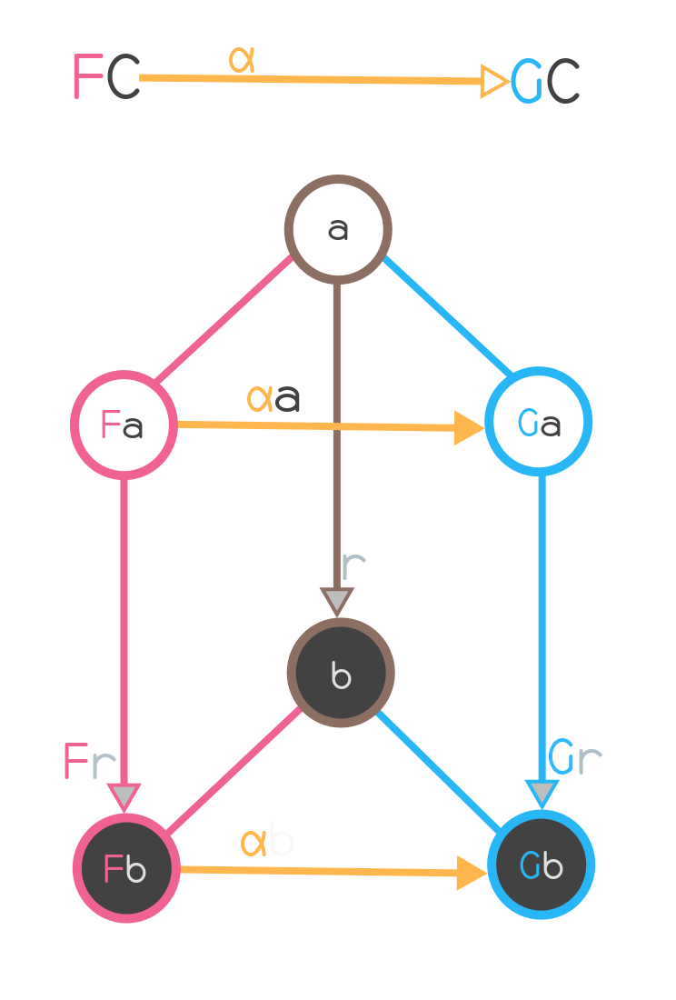
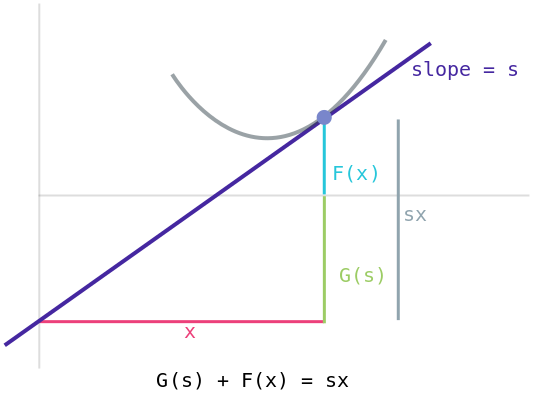
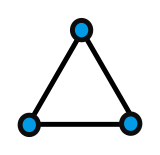
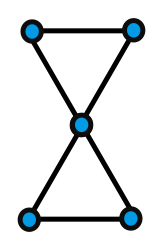
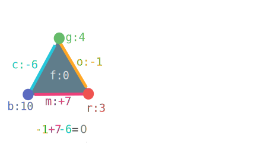

A Universe of Sorts
Table of contents:
So, I've shifted the blog to be static-site-generated using a
static-site-generator written by yours truly. The code clocks in at around a
thousand lines of C++:
What did I gain?
-
My generator is a real compiler, so I get errors on math and markdown
malformation.
-
I can write math that loads instantly on your browser, using no MathJax,
KaTeX or any client side processing, nor the need to fetch images, which looks like this:
Why?
My blog is a
single 9000 line markdown file
,
rendered as a single HTML page, so I need it to compile fast, render fast,
render beautiful. Existing tools compromise on one or the other.
No seriously, why a single markdown file?
I need a single file to edit, so I can rapidly jot down new ideas. This is
the essence of why I'm able to log most of what I study: because it's
seamless.
Far more importantly, it provides spatio-temporal locality. I add things
in chronological order to tbe blog, as I learn thing. If I need to recall
something I had studied, go to that location in the blog based on a sense
of when.
When I do get to a location I want, the scrollbar gives me a sense of where I
am in the file. this is important to me, since it hepls me reason
spatially about what i know and what I've learnt. It's someting I love about
books, and deeply miss when navigtaing the web.I'm determined to keep this
spatio-temporal locality on my little slice of the internet.
Why is this awful?
As elegant as this model is to edit, it's awful for browsers to render. The
file used to take on the order of minutes for all the math to finish
rendering. MathJax (and KaTeX) painfully attempt to render each
math block. As they do, the page jumps around until everything has settled.
As this is happening, your CPU throttles, your lap or hand gets warm,
and the page is stuck. Clearly not great UX.
I still want math. What do I do? The solution is easy: Approximate the math
rendering using ASCII/UTF-8 characters! There are tools that do this ---
hevea
is one of them. Unfortunately, there is no
markdown-based-blogging-platform that uses this, so I had to write my own.
The cure
The solution is easy. I wrote the tool. The page you're reading it
is rendered using the tool. All the math renders in under a second because
it's nothing crazy, it's just text and tables which browsers know how to
render. No JavaScript necessary. snappy performance. Whoo!
The details: Writing my own Markdown to HTML transpiler.
the final transpiler clocks in at 1300Loc of C++,
which is very small for a feature-complete markdown-to-HTML piece of code
that's blazing fast, renders math correctly, and provides error messages.
Quirks fixed, features gained.
I got quite a bit "for free" as I wrote this, fixing mild annoyances
and larger pain points around using github + markdown for publishing on
the web:
-
I really don't want tables, but I do want the ability to write vertical bars
| freely in my text. Unfortunately, github insists that those are tables,
and completely wrecks rendering.
-
I get line numbers in code blocks now, which Github Flavoured Markdown
did not have.
-
I get error messages on incorrectly closed bold/italic/code blocks, using
heuristics that prevent them from spanning across too many lines.
-
I get error messages on broken latex, since all my latex passes through
hevea. This is awesome, since I no longer need to refresh my browser,
wait for mathjax to load, go make myself tea (remember that mathjax was slow?),
and then come back to see the errors.
-
I can get error messages if my internal document links are broken. To be
fair, my tool doesn't currently give me these errors, but it can (and soon
will).
-
In general, I get control, which was something I did not have with
rendering directly using Github, or using someone else's tool.
Choice of language
I choose to write this in C-style-C++, primarily because I wanted the tool
to be fast, and I'd missed writing C++ for a while. I really enjoy how
stupid-simple C style C++ turns out to be: the C++ papers over some of C's
annoyances (like formatted output for custom types), while still preserving the
KISS feeling of writing C++.
Why not Rust? I freely admit that rust might have been a sane choice as
well. unfortunately, asking rust to treat UTF-8 string as a "ball of bytes" is
hard, when it's stupidly easy with C. Plus, I wanted to use arena-style-allocation
where I make huge allocations in one go and then don't think about memory,
something that I don't have control over in Rust. I don't have any segfaults
(yet, perhaps), thanks to UBSAN and ASAN. I find Rust to have more impedance
than C on small applications, and this was indeed small.
Everything except the latex to HTML is blazing fast. Unfortunately,
calling hevea is slow, so I implemented a caching mechanism to make using
hevea not-slow. hevea does not have an API, so I need to fork and
talk to its process which is understandably flow. I built a "key-value-store"
(read: serialize data into a file) with the stupidly-simple approach of writing
an append-only log into a file. hevea is a pure function conceptally,
since on providing the same latex input it's going to produce the same HTML
output, so it's perfectly safe to cache it:
01:
02: const char DB_PATH[]="./blogcache.txt";
03: unordered_map<ll, const char *> G_DB;
04: void loadDB() {
05: G_DB = {};
06: FILE *f = fopen(DB_PATH, "rb");
07: ...
08: while (!feof(f)) {
09: ll k, len;
10: fread(&k, sizeof(ll), 1, f); if (feof(f)) break;
11: fread(&len, sizeof(ll), 1, f);
12: ...
13: char *buf = (char *)calloc(sizeof(char), len + 2);
14: fread(buf, sizeof(char), len, f);
15: ...
16: }
17: fclose(f);
18: };
19:
20: const char *lookup_key(ll k) {
21: unordered_map<ll, const char *>::iterator it = G_DB.find(k);
22: if (it == G_DB.end()) { return nullptr; } return it->second;
23: };
24:
25: void store_key_value(const ll k, KEEP const char *v, const ll len) {
26: assert(G_DB.count(k) == 0);
27: G_DB.insert(make_pair(k, strdup(v)));
28:
29: FILE *f = fopen(DB_PATH, "ab");
30: assert(f != nullptr && "unable to open DB file");
31: fwrite(&k, sizeof(ll), 1, f);
32: fwrite(&len, sizeof(ll), 1, f);
33: fwrite(v, sizeof(char), len, f);
34: fclose(f);
35: }
36:
For the future
I plan to rip out hevea and write my own latex -> HTML converter for
the subset of LaTeX I actually use. hevea's strength is its downfall:
It can handle all of LaTeX, which means it's really slow. If I can concentrate
on a small subset, I don't need to play caching tricks, and I can likely
optimise the layout further for my use-cases.
I also want colored error messages, because who doesn't?
I'll probably gradually improve my static site generator over time. Once it's
at a level of polish where I'm happy with it, I'll spin it out as a separate
project.
Conclusions
Am I glad I did it? Yes, purely because my chunk of the internet aligns with
how I want it to be, and that makes me
є more happy.
I think of it as an investment into future me, since I can extend the
markdown and the transpiler in the way I want it to be.
Consider a ground set
X. Let the space of all possible binary classifications
be the function space
C ≡ { f ∣ f : X → ± 1 }.
Now, a hypothesis class
H is a subset of
C. For example, some model
such as "return
+1 if a point is inside a region,
−1 otherwise" is a subset
of the full class
C.
The VC dimension of
H measures how good
H is generating different classification.
We first need the notion of shattering to define this.
A subset
S ⊆ X of the ground set shatters a hypothesis class
H
if the function
actS has full range, where
actS is defined as:
| actS: H → |S|{0, 1}
actS(h) = (h(s0), h(s1), h(s2), …, h(sn))
|
That is, the hypothesis class
H can classify all the subsets of
S.
Now the VC dimension of the hypothesis class
H of a ground set
X is
the size of largest possible
S ⊆ X such that
S is shattered
by
H.
Correct interpretation
-
We need just one set
S of size
n to be shattered by
H. We get
to pick the set
S.
Subtletly 1:
-
We do not need all sets of size
n to be shattered by
H.
We can have the case where:
-
All sets of size 3 are shattered by H
-
Only one set of size 4 is shattered by H. All other sets of size 4 are not.
-
Only one size of size 5 is shattered by H. All other sets of size 5 are not.
-
No set of size 6 is shattered by H.
In this case, the VC dimension of
H is 5, not 3.
Subtletly 2:
We cannot have the case where:
-
All sets of size 3 are shattered by H
-
No set of size 4 is shattered by H
-
Some set of size 5 is shattered by H
For contradiction, let
S be the set of size
5 that is shattered by
H.
Let
T S,
|T| = 4. Now,
H shatters
T since
H shatters
S.
Hence, Some set of size 4 has been shattered. Contradiction, since we assumed
that no set of size 4 is shattered by
H.
So, to prove that sets of size
(≥ n) cannot be shattered, it suffices
to prove that sets of size equal to
n cannot be shattered.
Growth of number of sets shattered in
|S| for
S ⊆ X for a fixed
H.
If we fix a hypothesis class
H for
X, and we want to understand how
H
varies over subsets of
X, the idea is this:
Let
S be a set that is the maximum sized set that is shattered by
X. ie,
|S| = Vcdim(H) and
H shatters
S.
Now, the idea is this:
-
For subsets
T ⊆ S,
|actT(H)| = 2|T| -- exponential.
-
For subpersets
S Sup,
|actSup(H) = Comb(|Sup|, |S) -- polynomial.
We can show that this exponential/polynomial behaviour happens in general
for
S ⊆ X.
If we have a two-form
ω: Tp M × Tp M → ℝ,
we can use this to setup an isomorphism between
X: Tp M and
ω(X): Tp M → R, that is
ω(X): Tp* M.
Hence, we get a mapping:
Now, given a hamiltonian
H: M → ℝ, we can consider
dH: M → Tp* M. We can then use
ω(dH): M → Tp M,
to give us a vector field. This is the vector field generated by the
physics
ω and the hamiltonian
H.
These are personal notes I made of a custom notation for denoting the relations
from the theorems for free paper. I developed the notation since I wanted
to keep track of what types are floating around and what the relations are doing.
We interpret types as sets. If elements belong to the relation, ie, if (a, a') ∈ R ⊂ AxA,
we will denote this as a[A -R- A']a'. We will now write down some inference
rules:
-
We define
ReflB as a[Bool ReflB Bool]a
-
We define
ReflI as i[Int ReflI Int]i
-
The product of two relations
[A R B], [X S Y] is called as RxS,
and is defined as: (a,x)[AxX RxS BxY](b,y) iff: ∀ abxy, a[A R B]b ∧ x[X S Y]y.
-
The list space of a
[A R B] is called [A* [A R B] B*],
and is defined as: la[A* [A R B] B*]lb iff:
∀ la lb, |la| = |lb| ∧ (∀ i, la[i][A R B]lb[i])
-
The function space of two relations
[A R B], [X S Y] is called [A->X R->S B->Y],
and is defined as: f[A->X R->S B->Y]g iff: ∀ a b, a[A R B]b => f(a)[X S Y]g(b).
-
The type family space of two relations is a function that takes
a relation
[A R B] and produces a new relation:
g[FA | [A R B] | FB]h. The relation takes as parameter a relation [A R B]
for each choice.
-
The space of relations of
∀X.F(X) is a relation defined by:
g[A->FA | ∀X.F(X) [FA [A R B] FB]| B->FB]h
∀ A B R, (g A)[FA | [A R B] | FB](h B).
Parametricity theorem
The parametricity thm states that for all terms (r: R), we can deduce
r[R rel(R) R]r where rel(R) is the relation that fits the type, and is
derived from the above rules.
Parametricity for lists when the relation is a function:
The list space of a [A R B] is called [A* [A R B] B*],
and is defined as: la[A* [A R B] B*]lb iff:
-
∀ la lb, |la| = |lb| ∧ (∀ i, la[i][A R B]lb[i])
Now, let us take a special case where [A R B] is a function δ: A -> B. That is:
If this is the case, then we can simplify the math to be:
-
la[A* [A R B] B*]lb <=> ∀ la lb, |la| = |lb| ∧ (∀ i, la[i][A R B]lb[i])
-
la[A* [A R B] B*]lb <=> ∀ la lb, |la| = |lb| ∧ (∀ i, δ(la[i]) = lb[i]
-
la[A* [A R B] B*]lb <=> ∀ la lb, map δ la = lb
Parametricity to prove rearrangements
-
r[∀ X. X* -> X*]r
-
(r A)[A*->A* | [A*->A* [A R B] B*->B*] | B*->B*](r B)
-
as[A* [A R B] B*]bs => (r A as)[A* [A R B] B*](r B bs)
-
Pick
[A R B] to be a function δ: A -> B. Ie, a[A R B]b iff δ(a) = b.
-
This lets us convert all occrences of
α[A R B]ω into ω = δ(α).
-
Hence,
as[A* [A R B] B*]bs becomes map δ as = bs.
-
Hence,
(r A as)[A* [A R B] B*](r B bs) becomes map δ (r A as) = (r B bs)
-
In toto, this let us replace
bs with map δ as. We derive:
-
map δ (r A as) = (r B bs)
-
map δ (r A as) = (r B (map δ as)
-
map δ . (r A) = (r B) . map δ
-
Replace
bs[i] with δ(as[i])to get result:
δ(r A as[i]) = r B δ(as[i]), which was indeed what we were looking for.
References
I've always found code that uses half-open intervals far harder to write
than using closed intervals. For example, when performing string processing,
I prefer to write closed over halfopen since I find it easier
to think about:
1:
2: void closed(int begin, int end, char *c) { //easier
3: for(int i = begin; i <= end; ++i) {... }
4: }
5:
6: void open(int begin, int len, char *c) { //harder
7: for(int i = begin; i < begin + len; ++i) { ... }
8: }
9:
However, I realised that by changing how I think about this to:
1:
2: void open(int begin, int len, char *c) { //harder
3: for(int i = begin; i != begin + len; ++i)
4: }
5:
It somehow made it way easier to grok.
-
I had problems with
< since I would
mentally shift from i < begin + len to i <= begin + len - 1. Making
this move would then make all other reasoning harder, since I had
keep switching between the < and <= point of view.
-
On the other hand, when using
i != begin + len, there was a single location
to focus on: the point begin + len, and what happens when i reaches it.
Of course, this is old had to anyone who performs loop optimisatison: LLVM
internally converts most comparisons into the a != b form, because it's
easier to analyse. It took me this long it's easier for me to think
in this viewpoint as well.
I haven't found anything on the internet that describes how to build
a fusion bomb; it's almost as if this information has been supressed
by governments. However, I'm curious --- would a physics grad student
studying nuclear physics or explosives have the theoretical know-how to
precisely build one, given the raw materials? Or is there some
"secret sauce" that's necessary?
I read on wikipedia that most countries classify the details:
Detailed knowledge of fission and fusion weapons is classified to some degree in virtually every industrialized nation. In the United States, such knowledge can by default be classified as "Restricted Data", even if it is created by persons who are not government employees or associated with weapons programs, in a legal doctrine known as "born secret".
Suppose we have a manifold
M. of dimension
d that has been embedded isometrically
into
ℝn. So we have a function
e: ℝd → ℝn
which is the embedding. We will identify
M to be the subspace
Im(e).
Recall that
∂xi e : ℝd → ℝn
is defined as:
|
| | | ∂xie : ℝd → ℝn | | | | | | | | | |
| | | [∂ xie](p) ≡
| | | | e(p + (0:0, 1:0…, i:δx, …, n:0)) − e(p) |
|
| δ x |
|
| | | | | | | | | |
|
Note that it is a function of type
ℝd → ℝn.
-
The tangent space at point
p ∈ Image(e) is going to be spanned by
the basis
{ ∂xie |p : ℝn }.
-
The metric tensor of
M,
gij ≡ ⟨ ∂ e/∂ xi | ∂ e/∂ xj ⟩.
That is, the metric tensor "agrees" with the dot product of the
ambient space
ℝn.
-
A vector field
V on the manifold
M is by definition a combination of
the tangent vector fields.
V(p0) ≡ vj(p0) ∂xj e(p0)
We can calculate the derivaive of this vector field as follows:
|
| | | | | | | | | | | | |
| | | = vj · ∂xi ∂xj e + ∂xje · ∂xi vj
| | | | | | | | |
|
We choose to rewrite the second degree term in terms of the tangent
space, and some component that is normal to us that we have no
control over.
| (∂xi ∂xj e )(p) ≡ Γijk ∂xk e + | |
This gives us the Christoffel symbols as "variation of second derivative along
the manifold.
Relationship to the Levi-Cevita connection
The covariant derivative defined by the Levi-Cevita connection is the derivative
that contains the projection of the full derivative in
ℝn onto
the tangent space
Tp M. This is defined by the equations:
|
| | | | | | | | | | | | |
| | | = Π | | | ⎡
⎣ | vj · ∂xi ∂xj e + ∂xje · ∂xi vj | ⎤
⎦ |
| | | | | | | | | |
| | | = Π | | | ⎡
⎢
⎢
⎣ | vj · (Γijk ∂xk e + | | )+ ∂xje · ∂xi vj | ⎤
⎥
⎥
⎦ |
| | | | | | | | | |
| | | = vj · (Γijk ∂xk e + | | ) + ∂xje · ∂xi vj |
| | | | | | | | | |
| | | = vj · (Γijk ∂xk e + | | ) + ∂xke · ∂xi vk |
| | | | | | | | | |
| | = vj · Γijk ∂xk e + ∂xke · ∂xi vk | | | | | | | | | |
| | | = ∂xk e | ⎛
⎝ | vj · Γijk + ∂xi vk | ⎞
⎠ |
| | | | | | | | | |
| | | | | | | | | | | |
|
References
On learning about infinite dimensional vector spaces, one learns that
we need to use the axiom of choice to assert that every such vector space
has a basis; indeed, it's equivalent to the AoC to assert this. However,
I had not known any "natural" examples of such a vector space till I studied
the proof of the barvinok algorithm. I produce the example here.
Consider a space such as
S ≡ ℝ3. Now, consider the vector
space spanned by the indicator functions of polyhedra in
S. that's a mouthful,
so let's break it down.
A polyhedra is defined as a set of points that is defined by linear
inequalities:
P ≡ { x ∈ S : ai · x ≤ bi, i ∈ [1… n] },
for all
ai ∈ S,
b ∈ ℝ.
The indicator functions are of the form:
| [poly]: S → ℝ;
[poly](x) ≡
| |
we can define a vector space of these functions over
ℝ, using
the "scaling" action as the action of
ℝ on these functions:
The vector space
V is defined as the span of the indicator functions
of all polyhedra. It's clearly a vector space, and a hopefully intuitive
one. However, note that the set we generated this from (indicators of polyhedra)
don't form a basis since they have many linear dependencies between them.
For example, one can write the equation:
1: --* *-* *-* *
2: |###| |#| |#| |
3: |###| = |#| + |#| - |
4: |###| |#| |#| |
5: *---* *-* *-* *
6:
Central idea: assume a memory model where computation is free, only cost
is pulling data from cache into memory. Cache has total size
M, can hold
blocks of size
B. So it can hold
M/B blocks of main memory. Memory memory
has infinite size. Cost is number of transfers.
We assume that the algorithm does not know M or B. We assume that the cache
replacement strategy is optimal (kick out block that is going to be used
farthest in the future). This is an OK assumption to make since an LRU cache
using twice the memory of a "oracular" cache performs equally well (citation?)
These data structures are cool since they essentially "Adapt" to varying cache
hierarchies and even multiple level cache hierarchies.
We study how to build cache-oblivious B-trees.
Building optimal cache-oblivious B trees to solve search
-
We use a balanced BST. We want to find an order to store nodes in memory
such that when we search for an element, we minimize number of blocks
we need to pull in.
-
All standard orders such as level order, pre-order, post-order fail.
-
Corrrect order is "VEB (Van Em De Boas) order": carve a tree at the middle
level of its edges. Layout a "triangle" or smaller collection
of nodes linearly. Then Recursively layout the trees, linearly in memory.
-
Supposedly if the number of nodes is
N, we wil have roughly
√(N)
nodes on the top, and then
√(N) triangles at the bottom.
Analysis Claim: we need to pull
O(logB N) blocks for any
B for any search query
N is the number of nodes in the BST. Note that in the analysis, we know what B is,
even though the algorithm does not.
-
We look at a particuar level of recursion. We will call it a "level of detail"
straddling B.
-
We will have large triangles of size
≥ B, inside which there are smaller
triangles of size
≤ B (reminds me of sierpinski).
-
We know that the algorithm recursively lays it out, and triangle stores
everything "inside" it in a contiguous region. So we stop at the
requisite size where we know that the tree's triangles themselves
contain triangles which fit into the block size.
-
A little triangle of size less than B can live in at most two memory blocks
by straddling a block boundary: by eg. having
(B−1) bits in one block
and a single bit in another block.
1: 3 4 5 6 7 8 <- index
2: | | | <- boundary
3: |-xxxxxxx-----| <- data
4:
-
The question is that on a root-to-leaf bpath, how many such triangles do
we need to visit. Since we repeatedly divide the nodes in half with
respect to height until the little triangle has number of nodes less
than
B, the height is going to be
O(logB) since it's still a binary tree.
-
so height of "chunked tree" where we view each triangle as a single node
is
logN / logB = logB n.
-
insight: ou data structure construction in some sense permits us to
"binary search on
B" since we divide the data structure into levels
based on
B. if
B = N, then the full data structure fits into memory
and we're good.
Black box: ordered file maintainince
We need a black box: ordered file maintainance (linked list for arrays)
-
Store
n elements in specified order in an array of linear size
O(N).
Array permits gaps.
-
updates: delete element, insert elements between 2 elements.
-
cannot do this in linear time, but we can move elements in an interval of
size
log2(N) amortized.
-
We need
O(1) scans for the data structure.
Next: dynamic BST (inserts and deletes): layout
we take a VEB static tree on top of an ordered file. Tree is a segtree
that has max of nodes. Leaves are the members of the ordered file.
Updates
-
search for node.
-
update ordered file.
-
propogate updates into the tree. This will have to be done in post-order
because we need the leaves to be fixed before we can update the parent
max.
Updates: analysis.
-
look at level of detail that straddles
B.
-
Let us look at the bottom 2 levels.
-
Note that when we perform post-order inside a triangle that has 3 triangles
of size
≤ B, we need to alternate between parent triangle and child triangle.
Since the parent triangle is of size
≤ B and can therefore take
at most
2B blocks of memory, similarly the child can take at most
2B
blocks of memory.
-
So if our cache can hold
4 blocks of memory, we're done.
We won't need to kick anything out when performing the post-order
traversal.
-
For levels that are above the bottom 2 levels, we're still OK. there
are not many triangles! / not many nodes! (
1:16:00 in the video)
References
We denote partial functions with
X ⇀ Y and total functions
with
X → Y.
A set
X equipped with a binary operator
⋆: X × X → X which is closed and associative
is a semigroup.
Partial function semigroup
For a ground set
X, the set of partial functions
Pf(X) ≡ { f: X ⇀ X }
along with function composition forms a semigroup. This is in fact stronger
than a semigroup. There exists:
-
An identify function
ex: X → X; eX(x) = x
-
A zero function
θx: X ⇀ X; θx(x) = undef, where by
undef we mean that it is undefined.
Let
Q be a set. Let
S ⊆ Pf(Q) be a sub-semigroup of
Pf(Q).
Then the semigroup
X ≡ (Q, S) is called as the
transformation semigroup(X) of states
Q.
-
The elements of
Q are called states of
X
-
while the elements of
S are called actions of
X.
-
The set
Q itself is called as the underlying set of
X.
-
For a fixed transformation semigroup
X, we will write
QX and
SX
to refer to its states and actions.
We call
X ≡ (Q, S) as a transformation monoid if
S contains
1Q(q) = q.
There is some subttlety here. Just because
S is a monoid does not mean that
it that is a transformation monoid. It must have the identity element of
Pf(Q) to be called a transformation monoid. For example, consider the
set
Q ≡
a, b
and the transformation semigroup
S ≡
f ≡ α ↦ b
.
Now the set
S is indeed a monoid with identity element as
f: Q → Q.
however,
f ≠ 1Q , andh ence,
S is a not a transformation monoid.
-
(X, { θ(x) = undef }). The semigroup with the empty transformation.
-
(X, ∅), the semigroup with no transformations.
Semigroup action
We sometimes wish to represent a semigroup using an action/transformation semigroup
on a ground set
X. So, given some semigroup
(T, ×) that needs to be represented,
if we can find a morphism
r: T → Pf(X) (
r for representation)
such that:
-
r(t1 + t2) = r(t1) ∘ r(t2). [
r is a semigroup morphism].
-
t1 ≠ t2 ∃ x ∈ X such that
r(t1)(x) ≠ r(t2)(x).
[Faithfulness].
Put more simply,
t1 ≠ t2 r(t1) ≠ r(t2) where we define
function equality extensionally:
f = g ≡ ∀ x, f(x) = g(x).
We often wish to represent some semigroup
S as the transformation semigroup
of some set of states
Q. We can achieve this by proving a morphism:
-
r: S → Pf(Q) that is faithful.
Then, we can treat elements of
S as elements of
Pf(Q).
Given a transformation semigroup
X ≡ (Q, S) we can complete it
by adding a new sink state
⊥, and then converting all partial
functions in
S to total functions that transition to
⊥. We have that
⊥ · s = s · ⊥ ∀ s ∈ S.
We denote the completion as
Xc ≡ (Qc, Sc).
Coverings
Let
X ≡ (QX, SX) and
Y ≡ (QY, SY) be transformation
semigroups. Let
φ ⊆ QY × QX be a relation. Let
sx ∈ SX
and
sy ∈ SY. Then, if the following diagram commutes:
If
sx(φ(qy)) = φ(ty(qy)), then we say that
ty covers
sx relative to
φ.
We imagine the
ty lying above
sx, being projected down by
φ.
If a fixed
φ, for all
sx ∈ SX there exists a
ty ∈ SY such that
t covers
s relative to
φ, then we say that
φ: is a relation of
automata.
-
If
φ: QY → QX is surjective,
then we say that
φ is a relational covering and write:
-
If
φ QY × QX is both surjective and partial,
then we say that
φ is a covering and write:
If
X ≺φY, we say that
Y dominates
X, or
Y covers
X, or
X divides
Y.
Checking coverings and generating subsets
We note that for a given covering
φ, if
sx is covered by
ty
and
px is covered by
qy, then
sx ∘ tx is covered by
ty ∘ qy.
Thus, to check if
X is covered by
Y, we simply need to check if
some generating subset of
X is covered by
Y.
Checking coverings of representations
Let us assume we have a representation of a transformation semigroup
given with a semigroup
Σ, a transformation semigroup
X ≡ (QX, SX), and a representation
r: Σ → SX that is
faithful.
Now, to check that
X is covered by another
Y, it suffices to check that
there exists a
ty ∈ Y for each
σ ∈ X such that
r(σ) is
covered by this
ty.
Companion relation
Given a relation
φ: Y → X, then we define:
| Σ ≡ { (s, t) : t ∈ TY covers s ∈ SX }
|
Recall compositions of elements are covered by a composition
of their coverings. Hence, if
(s, t), (s′, t′) ∈ Σ, then
(ss′, tt′) ∈ Σ. thus,
Σ is a subsemigroup of
SX × SY.
We can regard
Σ as the graph of a relation
φ′ ⊆ QY × QX.
This will be called as companion relation of
φ.
Wreath products
Let
X ≡ (QX, SX) and
Y ≡ (QY, SY). We're going to define a large
product
X ≀ Y.
We begn with the set
W ≡ SXQY × SY, where
SXQY ≡ { f : QY → SX }.
The wreath product then becomes:
with the action of
W on an element of
QX × QY being defined as:
| (f : QY → SX, sy : SY) (qx : QX, qY : QY) ≡ ( f(qy)(qx) , sy (qy))
|
it's a "follow the types" sort of definition, where we edit the right component
as
ry ↦ ty(ry) since that's all we can do. In the case of
the left component, we have a
qx, and we need to produce another element
in
QX, so we "must use
f". The only way to use
f is to feed it
a
ty. This forces us into the above definition.
Composition of wreath products
To show that its closed under composition, let's consider
(f, sy), (g, ty) ∈ W
with
f, g: QYg → SX, and
sy, ty ∈ SY. The result is
going to be:
| (f, sy) (g, ty) = (λ qy. f(qy) ∘ g(qy), ty ∘ uy)
|
Equivalences of subsets of states
Let
X = (Q, S) be a transition system. Given subsets
(a, b, ⊆ Q),
we shall write
b ≤ a if either
b ⊆ a or there exists some
s ∈ S
such that
b ⊆ sa, where
s(a) ≡ { s(ai) : ai ∈ a}. We can
define an equivalence relation
a ∼ b ⇐⇒ a ≤ b ∧ b ≤ a.
Note:
b ≤ a |b| ≤ |a|, since
b ≤ a means that
b ⊆ s(a). Note that
s is actually a
function
s: Q → Q, and a function mapped over a set can only
ever decrease the number of elements in a set, since a function can only
xglomp elements together; it can never break an element apart into two.
Hence,
b ⊆ sa ⊆ a, and thus
|b| ≤ |a|.
Similiarly,
a ≤ b |a| ≤ |b|. Therefore,
b ∼ a means
that
|b| = |a|.
Theorem: for all
a, b ∈ QX such that
a b such that
b ⊆ s(a), we show that
b = s(a), and there exists
a
t ∈ SX such that
a = t(b).
Proof: Since
b ⊆ s(a) ⊆ a and
|b| = |a|,
b = s(a).
Therefore
s is a permutation. Hence,
s is invertible and there exists
an inverse permutation
t such that
a = t(b). We now need to show that
t ∈ SX. To do this, first note that if the order of the permutation
s is
n, then
t = sn−1, since
t ∘ s = sn−1 ∘ s = 1S.
Since the semigroup
S is closed under composition
t = sn−1 is in
S,
since it is
s composed with itself
(n−1) times.
Subset families of interest
We will be interest in a family of subsets of
QX called
A, of the form:
-
all sets of the form
s(Q) for all
s ∈ SX
-
the set
Q
-
the empty set
∅
-
all the singleton sets
{ q } for all
q ∈ Q.
In the above set, we have
≤ and
∼ as defined above.
We note that the set
A is closed under the action of all
s ∈ SX.
For example, the empty set is taken to the empty set. All singleton
sets are taken to other singleton sets. For the full set
Q, we add
the sets
s(Q) for all
s ∈ SX.
Height function
A height function for a transition system
X ≡ (QX, SX) is a function
h: A → ℤ such that:
-
h(∅) = −1.
-
h({ q }) = 0 ∀ q ∈ Q.
-
a ∼ b h(a) = h(b) for all
a, b ∈ A.
-
b < a h(b) < h(a) for all
a, b ∈ A.
The notation
b < a ≡ (b ≤ a) ∧ ¬ (a ≤ b).
(3) + (4) imply that two elements of the same height are either equivalent
or incomparable.
Pavings and bricks
for
a ∈ A such that
|a| > 1, we denote by
Ba the set of all
b ∈ A
what are maximal subsets of
a. That is, if
b ∈ Ba then
b a,
and
∄c, b c a. Equivalently, if there
exists a
c such that
b ⊆ c ⊆ a, then
b = c or
b = a.
Note that we can assert that
a = ∪b ∈ Ba b. This is because
Ba
contains all the singletons of
QX. so we can begin by writing
a as
a union of singletons, and then merging elements of
Ba into larger elements
of
B, terminating when we cannot merge any more elements of
Ba.
-
The set
Ba is called as the paving of
a.
-
The elements of
Ba are called as the bricks of
a.
Group of permutations for
a ∈ A
Let us assume that there exists a
s ∈ S such that
s(a) = a. Let
Aa
be the set of all elements in
A contained in
a:
Aa = { Ai : Ai ∈ A, Ai ⊆ a }.
Recall that the set
A was closed under the action of all
s, and hence,
since
s is a permutation of
a, this naturally extends into a
permutation of
Aa:
s Aa = Aa. Now note that this induces a permutation
of the set
Ba. This creates a transition system:
\begin{align}
&Ga \equiv \{ s \in S : s a = a} \\
&Ha \equiv (Ba, Ga) \\
\end{align}
We have already shown how if
s ∈ S defines a permutation of some set
X
by its action, then its inverse also exists in
S. So, this means that
Ga is in fact a transition group that acts on
Ba.
It might turn out that
Ga = ∅. However, if
Ga ≠ ∅,
then as stated above,
Ga is a group.
We will call such a transition group a generalized transition group, since
either
Ga = ∅ or
Ga is a group.
Now, the generalized transition group
Ha is called as the
holonomy transition system of
a, and the group
Ga is called as
the holonomy group of
a.
We have that
Ga ≺ S since
Ga is a quotient of the sub-semigroup
{ s | s ∈ S, as = a }. (TODO: so what? why does this mean that it's
≺?)
Theorem: if
a ∼ b, then
Ha ≃ Hb
(similar subsets have isomorphic holonomy transition systems).
Proof: Let us assume that
a ≠ b. since
a ∼ b, we have elements
of the form
s, s−1 ∈ S such that
b = s(a),
a = s−1(b).
Recall that for
ba ∈ Ba is such that for a member
g ∈ Ga,
g(ba) = ba.
Bb must have the element
s(ba). [TODO!]
Holonomy decomposition
Let
X ≡ (Q, S) be a transition system and let
h be a height
function for
X, such that
h(Q) > 0. For a fixed
i,
let
a1, a2, … ak be the representatives of equivalence classes of
elements of
A of height equal to
i. We define:
Inductive hypothesis for coverings
We will say a relational covering
X ◁φ Y is of rank
i
with respect to a given height function
h if
φ relates states in
Y
to subsets of states in
x that are members of
A and have rank at most i.
Formally, for each
p ∈ QY, we have that
φ(p) ∈ A and
h(φ(p)) ≤ i.
We prove that if
X ◁φ Y is a relational covering of rank
i,
then
X ◁φ Hi∨ ≀ Y is a relational covering
of rank
i − 1.
The proof is a proof by induction.
Base case:
Start with the relational covering with
QY = { 0 }, SY = { id },
and the cover
φ(0) = QX. Clearly, this has rank
n since the height
of
QX is
n, and
φ is inded a covering, since the only transition
that
Y can make (stay at the same state) is simulated by any transition
in
SX [TODO: is this really the argument?]
For induction, assume
X ◁φ Y is a relational covering of rank
i
with respect to some height function
h.
X≡ (QX, SX) and
Y ≡ (QY, SY). We define
-
QYi ≡ { qy : qy ∈ QY, h(φ(qy)) = i }
-
QY< ≡ { qy : qy ∈ QY, h(φ(qy)) < i }
We know that
A contains elements of height exactly
i. Let
a1, a2, … ak
be representatives of sets of of height
i in
A. Thus, for each
qyi ∈ QYi,
we have that:
-
φ(qyi) = aj for a unique
1 ≤ j ≤ k.
-
We select elements
u, u ∈ S such that
u(φ(qyi)) = aj
and
u(aj) = φ(qyi).
We will show how to establish a relational covering:
-
X ◁φ ≀ Hi∨ Y using a relation:
-
φ ⊆ [(Ba1 ∪ Ba2 ∪ … Bak)× QY ] × QX
References
It's a somewhat well-known fact that given matrix multiplication:
O = AB
where
O ∈ ℝ2n × 2m (
O for output),
A ∈ ℝ2n × r, B ∈ ℝr × 2m are matrices.
We can also write this as follows:
| =
| |
| |
=
| ⎡
⎢
⎣ | | a11 b11 + a12 b21 | a11 b12 + a12 b22 |
| a21 b11+ a22 b21 | a21 b12 + a22 b22
|
| ⎤
⎥
⎦ |
|
When written as code, the original matrix multiplication is:
1:
2: // a:[2N][2Z] b:[2Z][2M] -> out:[2N][2M]
3: int matmul(int N, int Z, int M, int a[N][Z], int b[Z][M], int out[N][M]) {
4: for(int i = 0; i < 2*N; ++i) {
5: for(int j = 0; j < 2*M; ++j) {
6: for(int k = 0; k < 2Z; ++k) out[i][j] += a[i][k] * b[k][j]
7: }
8: }
9: }
10:
and the block-based matrix multiplication is:
01:
02: // a:[2N][2Z] b:[2Z][2M] -> out:[2N][2M]
03: int matmulBlock(int N, int Z, int M, int a[N][Z], int b[Z][M], int out[N][M]) {
04: for (int BI = 0; BI < 2; ++BI) {
05: for (int BJ = 0; BJ < 2; ++BJ) {
06: for(int i = BI*N; i < BI*N+N; ++i) {
07: for(int j = BJ*M; j < BJ*M+M; ++j) {
08: for(int k = 0; k < 2Z; ++k) { out[i][j] += a[i][k] * b[k][j] }
09: }
10: }
11: }
12: }
13: }
14:
we wish to show that both of these programs have the same semantics.
We will do this by appealing to ideas from program analysis.
The key idea
We will consider the statement:
1:
2: out[i][j] += a[i][k] * b[k][j]
3:
as occuring at an abstract "point in time"
(i, j, k) in the matmul function.
I also occurs at an abstract "point in time"
(BI, BJ, i′, j′, k′) in
the matmulBlock function.
We will then show that the loops for(i...) for(j...) for(k...) are fully
parallel, and hence we can reorder the loops any way we want.
Then, we will show that the ordering imposed by
(BI, BJ, i′, j′, k′)
is a reordering of the original
(i, j, k) ordering. We do this by
showing that there is a bijection:
| (i=i0, j=j0, k=k0) → (BI=i0/N, BJ=j0/N, i=i0%N, j=j0%N, k=k0)
|
Thus, this bijection executes all loops, and does so without affecting the
program semantics.
Schedules
We'll zoom out a little, to consider some simple programs and understan
how to represent parallelism.
1:
2: void eg1(int N, int M, int out[N][M]) {
3: for(int i = 0; i < N; ++i) {
4: for(int j = 1; j < M; ++j) {
5: out[i][j] = out[i][j-1];
6: }
7: }
8:
Notice that this program is equivalent to the program with the
i loop
reversed:
1:
2: void eg1rev(int N, int M, int out[N][M]) {
3: for(int i = N-1; i >=0; --i) {
4: for(int j = 1; j < M; ++j) {
5: out[i][j] = out[i][j-1];
6: }
7: }
8:
What's actually stopping us from reversing the loop for(j...)? it's
the fact that the value of, say, out[i=0][j=1] depends on
out[i=0][j=0]. We can see that in general, out[i=i_0][j=j_0] depends
on out[i=i_0][j=j_0-1]. We can represent this by considering a
dependence set:
| { write:(i0, j0−1) → write:(i0, j0) }
|
in general, we can reorder statements as long as we do not change
the directions of the arrows in the dependence set.
Dependence structure of matmul.
Fully parallel, reordering
References
Midnight discussions with my room-mate
Arjun P
.
This tries to explore what it is about algebra that I find appealing.
I think the fundamental difference to me comes down to flavour ---
analysis and combinatorial objects feel very "algorithm", while Algebra feels
"data structure".
To expand on the analogy, a proof technique is like an algorithm, while an
algebraic object is like a data structure. The existence of an algebraic object
allows us to "meditate" on the proof technique as a separate object that does
not move through time. This allows us to "get to know" the algebraic object,
independent of how it's used. So, at least for me, I have a richness of
feeling when it comes to algebra that just doesn't shine through with analysis.
The one exception maybe reading something like "by compactness", which has
been hammered into me by exercises from Munkres :)
Meditating on a proof technique is much harder, since the proof technique
is necessarily intertwined with the problem, unlike a data structure which
to some degree has an independent existence.
This reminds me of the quote: "“Art is how we decorate space;
Music is how we decorate time.”. I'm not sure how to draw out the
tenuous connection I feel, but it's there.
Arjun comes from a background of combinatorics, and my understanding of his
perspective is that each proof is a technique unto itself. Or, perhaps
instantiating the technique for each proof is difficult enough that abstracting
it out is not useful enough in the first place.
A good example of a proof technique that got studied on its own right in
combinatorics is the probabilistic method. A more reasonable example is that of
the Pigeonhole principle, which still requires insight to instantiate in
practise.
Not that this does not occur in algebra either, but there is something in
algebra about how just meditating on the definitions. For example,
Whitney trick that got pulled out of the proof of the Whitney embedding
theorem.
To draw an analogy for the haskellers, it's the same joy of being able to write
down the type of a haskell function and know exactly what it does, enough that
a program can automatically derive the function (djinn). The fact that we know
the object well enough that just writing the type down allows us to infer the
program, makes it beautiful. There's something very elegant about the
minimality that algebra demands. Indeed, this calls back to another quote:
"perfection is achieved not when there is nothing more to add, but when there
is nothing left to take away".
I'm really glad that this 2 AM discussion allowed me to finally pin down
why I like algebra.
I've always struggled with remembering the syntax for function type typedefs:
1:
2: typedef RETTY (*FNTYNAME)(ARGTY1, ARGTY2, ..., ARGTYn);
3:
we can now use using for a far more pleasant syntax:
1:
2: using FNTYNAME = RETTY(ARGTY1, ARGTY2, ..., ARGTYn);
3:
which is also intuitive. You write down the "type"
on the right hand side, and give it a name on the left.
This is not strictly the same, since the typedef
typedefs FNTYNAME to a function pointer type, while
the C++ version typedefs the function type. I prefer
the latter at any rate, since I dislike the fact
that the usual typedef tends to hide the fact that a
function pointer is some pointer-like-thing.
Semidirect products
-
(α ≡ { a, b, …}, +, 0)
-
(ω ≡ { X, Y, …}, ×, 1)
-
· : ω → Automorphisms(α)
-
rotations:
ℤ 5
-
reflection:
ℤ 2
\begin{align}
\begin{bmatrix}
1 & 0 \\
a & X
\end{bmatrix}
\begin{bmatrix}
1 & 0 \\
b & Y
\end{bmatrix}
= \begin{bmatrix}
1 & 0 \\
a + X \cdot b & XY
\end{bmatrix}
\end{align}
A walkway of lanterns
-
Imagine
ℤ as a long walkway. you start at 0. You are but a poor lamp lighter.
-
Where are the lamps? At each
i ∈ ℤ, you have a lamp that is either on, or off. So you have
ℤ2.
-
L ≡ ℤ → ℤ2 is our space of lanterns. You can act on this space by either moving using
ℤ, or toggling a lamp using
ℤ2.
ℤ2ℤ ℤ
-
g = (lights:⟨−1, 0, 1⟩, loc:10)
-
move3: (lights: ⟨ ⟩, loc: 3)
-
move3 · g = (lights:⟨−1, 0, 1⟩, loc:13)
-
togglex = (lights:⟨ 0, 2 ⟩, loc: 0)
-
togglex · g = (lights: ⟨ −1, 0, 1, 13, 15 ⟩, loc:13)
-
toggley = (lights: ⟨ −13, −12 ⟩, loc:0)
-
toggley· g= (lights:⟨ −1 ⟩, loc:13)
Krohn-rhodes, AKA how to model Freudian psychoanalysis using Lagrangians over semigroups.

I don't find people who draw "all three parts" of the natural transformation:
the catories
C,
FC, and
GC, and then show the relationship between
them, so I made this for my own reference.
the
Ocaml-git
project is a
re-implementation of git in OCaml. It's well-written, and I was
walking through the codebase, when I found absolutely amazing, hilarious,
and deep comments from dinosaure. I really enjoyed reading through the
codebase, and the existence of these comments made it more humane to read.
I don't know who dinosaure is, but I'm really glad they wrote the comments
they did, it really made my day.
The one that takes a stab at Haskell for fun
1: XXX(dinosaure): ...we can fix this detail but
2: I'm lazy like haskell. TODO! *)
3:
The academic one that broken-links to a paper
1: XXX(dinosaure): see this paper
2: https://github.com/ocamllabs/papers/blob/master/irmin/2014.08.matthieu/rapport.pdf *)
3:
The one about the frustrations of bug-hunting
1: XXX(dinosaure): [~chunked:false] is mandatory, I don't want to explain
2: why (I lost one day to find this bug) but believe me. *)
3:
The one about a potential heisenbug
1: XXX(dinosaure): if, one day, we find a bug about the serialization of the
2: IDX file, may be it's about this function (stable/unstable sort). *)
3:
01: XXX(dinosaure): bon ici, c'est une note compliqué, j'ai mis 2 jours
02: à fixer le bug. Donc je l'explique en français, c'est plus simple.
03: En gros, [Helper.MakeDecoder] utilise ce buffer comme buffer interne
04: pour gérer les alterations. Ce qui ce passe, c'est que dans la
05: fonction [refill], il s'agit de compléter à partir d'un [input]
06: (typiquement [zl]) le buffer interne. C'est finalement un
07: __mauvais__ jeu entre un [Cstruct.t] et un [Bigarray].
08: Il s'agit de connaître la véritable taille du [Bigarray] et de
09: rajouter avec [blit] le contenu de l'[input] si la taille du
10: [Bigarray] (et pas du [Cstruct]) est suffisante.
11: Avant, cette modification, [zl], [de] et [io] partagaient le même
12: [Bigarray] découpé (avec [Cstruct]) en 3. Donc, dans le
13: [MakeDecoder], [refill] considérait (pour des gros fichiers faisant
14: plus de 0x8000 bytes) que après [de], nous avions encore de la
15: place - et dans ce cas, nous avions [io].
16: Ainsi, on [blit]ait [zl] dans [de+sizeof(de) == io], et finalement,
17: on se retrouvait à essayer de décompresser ce que nous avions
18: décompressé. (YOLO).
19: Donc, on considère maintenant [de] comme un [Cstruct.t] et un
20: [Bigarray] physiquement différent pour éviter ce problème.
21: Cependant, il faudrait continuer à introspecter car j'ai
22: l'intuition que pour un fichier plus gros que [2 * 0x8000], on
23: devrait avoir un problème. Donc TODO. *)
24:
The deep one
1: XXX(dinosaure): at the end, we don't care if we lost something. *)
2:
Since MLIR hasn't setup the nice tooling that LLVM has around CMake
as far as I can tell, one needs to actually know CMake to link against
MLIR. However, as is well known, CMake incantations are handed down
by preists who spend the better part of their lives studying the tome
that is the CMake manual. I, an unlucky soul had to go on this adventure,
and I hope to spare you the trouble.
I wished to link against a static library build of MLIR. The secret
lies in the find_library call:
01: the variable has been set by -DMLIR_INCLUDE_PATH, then keep it.
02: #Otherwise fallback to the environment variable $MLIR_INCLUDE_PATH.
03: #if neither, then *shrug*.
04: IF(NOT MLIR_INCLUDE_PATH)
05: set (MLIR_INCLUDE_PATH $ENV{MLIR_INCLUDE_PATH})
06: endif()
07:
08: #Resolve for:
09: #- a library target called `MLIRAnalysis`
10: #- asking to link against `libMLIAnalysis.a`
11: #- using the variable MLIR_INCLUDE_PATH which as we saw before
12: # is either an environment variable or a cmake option
13: target_include_directories(languagemodels PRIVATE ${MLIR_INCLUDE_PATH})
14:
I cribbed the actual things to link against from the path
mlir/examples/Toy/Ch2/CMakeLists.txt
which helpfully lists MLIR things it needs to link against.
The full CMakeLists is here:
01: ke_minimum_required(VERSION 3.5)
02: project(languagemodels)
03:
04: set(CMAKE_CXX_STANDARD 14)
05:
06: # I don't want to use find_package since I want proper control over where my LLVM comes from.
07: # find_package(LLVM REQUIRED)
08:
09: add_executable(languagemodels
10: rnn.cpp codegenc.h lang.h codegenmlir.h)
11:
12: # Attempt to take these as command line arguments. IF that fails,
13: # lookup environment.
14: IF(NOT MLIR_INCLUDE_PATH)
15: set (MLIR_INCLUDE_PATH $ENV{MLIR_INCLUDE_PATH})
16: endif()
17:
18: IF(NOT MLIR_LIBRARY_PATH)
19: set (MLIR_LIBRARY_PATH $ENV{MLIR_LIBRARY_PATH})
20: endif()
21:
22: target_include_directories(languagemodels PRIVATE ${MLIR_INCLUDE_PATH})
23: find_library(MLIRAnalysis MLIRAnalysis ${MLIR_LIBRARY_PATH})
24: find_library(MLIRIR MLIRIR ${MLIR_LIBRARY_PATH})
25: find_library(MLIRParser MLIRParser ${MLIR_LIBRARY_PATH})
26: find_library(MLIRSideEffects MLIRSideEffects ${MLIR_LIBRARY_PATH})
27: find_library(MLIRTransforms MLIRTransforms ${MLIR_LIBRARY_PATH})
28: find_library(LLVMCore LLVMCore ${MLIR_LIBRARY_PATH})
29: find_library(LLVMSupport LLVMSupport ${MLIR_LIBRARY_PATH})
30:
31: # debugging to check if it's been set properly
32: message(MLIR_INCLUDE_PATH ${MLIR_INCLUDE_PATH})
33: message(MLIR_LIBRARY_PATH ${MLIR_LIBRARY_PATH})
34: message(MLIRAnalysis ${MLIRAnalysis})
35:
36: target_link_libraries(languagemodels
37: ${MLIRAnalysis}
38: ${MLIRIR}
39: ${MLIRParser}
40: ${MLIRSideEffects}
41: ${MLIRTransforms}
42: ${LLVMCore}
43: ${LLVMSupport})
44:
This comes from
The wild book
BooksandMonographs)
which I anticipate I'll be posting more of in the coming weeks.
Experiments
Let an experiment be a tuple of the phase space
X, action space
A,
and an action of the actions onto the phase space
: A × X → X. We will write
x′ = a x to denote the new state of the system
x. So the experiment
E is the data
E ≡ (X, A, : A × X → X).
Coordinate systems.
The existence of the action
allows us to
write the evolution of the system recursively:
xt+1 = a → xt.
However, to understand the final state
xt+1, we need to essentially
"run the recursion", which does not permit us to understand the
experiment.
What we really need is the ability to "unroll" the loop. To quote:
Informally, understanding an experiment
E means introducing coordinates into phase space of
E which are in triangular form under the action of the inputs of
E.
We identify certain interesting invariants of a system by two criteria:
-
The parameter
Q(t) determines some obviously important aspects of
the system. That is, there is a deterministic function
M(Q(t)) which
maps
Q(t) to "measure" some internal state of the system.
-
If the values of such a parameter
Q is known at time
t0 (denoted
Q(t0))
and it is also known what inputs are presented to the
system from time
t to time
t + є
(denoted
I[t0, t0 + є]), then the new value of
Q is a
deterministic function of
Q(t0) and
I[t0, t0+ є].
Such parameters allow us to understand a system, since they are deterministic
parameters of the evolution of the system, while also provding a way to
measure some internal state of the system using
M.
For example, consider a system
x with an energy function
e(x). If we
perform an action
a on the system
x, then we can predict the action
e(x′ = a x) given just
e(x) and
a --- here,
(x′ = a x) is the action of the system
a on
x.
In general, conservation principles give a first coordinate of a triangularization. In the main a large part of physics can be viewed as discovering and introducing functions
e of the states
q of the system such that under action
a,
e(a q) depends only on
e(q) and
a, and not on
q.
Theory: semidirect and wreath products
We first heuristically indicate the construction involved in going from the group of symmetries to the triangularization, and then precisely write it out in all pedantic detail.
Let an experiment be
E ≡ (X, A, ). Then we define
Π
is a symmetry of
E iff:
-
Π: X → X is a permutation of
X.
-
Π commutes with the action of each
a:
Π(a x) = a Π(x) .
We say that the theory
E is transitive (in the action sense) if for
all
x1, x2 ∈ X, x1 ≠ x2, there exists
a1, a2, … an
such that
x2 = an … (a1 x1) .
Facts of the symmetries of a system:
-
We know that the symmetries of a theory
E form a group.
-
If
E is transitive, then each symmetry
Π is a regular permutation
--- If there exists an
x such that
Π(xf) = xf (a fixed point), then
this implies that
Π(x) = x for all
x.
-
Let the action split
X into disjoint orbits
O1, O2, … Ok from whom
we choose representatives
x1 ∈ O1, x2 ∈ O2, … xk ∈ Ok.
Then, if
E is transitive, there is exactly one action that sends a
particular
xi to a particular
xj. So, on fixing one component
of an action, we fix all components.
To show that this gives rise to a triangulation, we first construct
a semigroup of the actions of the experiment:
S(E) ≡ { a1 … an : n ≥ 1 and ai ∈ A }.
Now, let
G = Sym(E), the full symmetry group of
E. One can apparently
express the symmetry group in terms of:
| (X, S) ≤ (G, G) ≀ ({ O1, O2, … Ok}, T) |
Given two monoids
(M, +, 0M) and
(N, ×, 1N), and a
homomorphism
φ: N → End(M), where
End(M)
is the endomorphism group of
M. We will notate
φ(n)(m) as
n · m ∈ M.
Now the semidirect product
M φN is the set
M × N equipped
with the multiplication rule:
-
(m, n) (m′, n′) = (m + n · m′, nn′)
This can also be written down as:
This way of writing down semidirect products as matrices makes many things
immediately clear:
-
The semidirect product is some kind of "shear" transform, since that's
what a shear transformation looks like, matrix-wise.
-
The resulting monoid
M φ N has identity
(0M, 1N),
since for the matrix to be identity, we need the 2nd row to be
(0, 1).
-
The inverse operation if
(M, N) were groups would have to be such that
Hence:
-
nn′ = 1 implies that
n′ = 1/n.
-
m + n m′ = 0 implies that
m′ = −m/n.
which is indeed the right expression for the inverse.
identity matrix
1: 3 ⋄ id ← n n ⍴(1,n⍴0) ⋄ id
2:
This relies heavily on ⍴ replicating its arguments.
histogram
1: (1 1 3 3 3 6) ⋄ n←(⌈/xs)⍴0 ⋄ n[xs]+←1 ⋄ n
2:
The use of n[x] +←1 will stably write +1 as many times as there are repeated
indexes in xs.
String matching / parity as fold ≠:
1: sp str ← (1 0 0 1 0 0 0 0 1 0 1 0 0 0) ⋄ 2 1 ⍴ ((⊂ str) ⍪ ⊂((≠\str)))
2: ┌→──────────────────────────┐
3: ↓1 0 0 1 0 0 0 0 1 0 1 0 0 0│
4: ├~─────────────────────────→┤
5: │1 1 1 0 0 0 0 0 1 1 0 0 0 0│
6: └~─────────────────────────→┘
7:
General operations on ideals
We have at our hands a commutative ring
R, and we wish to study the ideal
structure on the ring. In particular, we can combine ideals in the following
ways:
-
I + J ≡ { i + j : ∀ i ∈ I, j ∈ J }
-
I ∩ J ≡ { x : ∀ x ∈ I ∧ x ∈ J }
-
IJ ≡ { ij : ∀ i ∈ I ∧ j ∈ J } (wrong!)
Is the third one really right? How do we prove that:
∀ i1, i2 ∈ I, j1, j2 ∈ J, ∃ i3 ∈ I, j3 ∈ J such that
i1 j2 + i2 j2 = i3 j3?
Indeed, we can't do so in general! For
a quick counter-example, consider the ring
ℤ[X, Y] and the ideals
I ≡ ⟨ X ⟩,
J ≡ ⟨ Y ⟩. Now, note
that
XY + X2Y2 cannot be written as the product of a power of
X
and a power of
Y.
So, the correct definition is to in fact generate an ideal from all
elements of the form
ij. So #3 should be:
-
IJ ≡ { ∑k ik jk : ∀ ik ∈ I ∧ jk ∈ J } (right!)
Specializing ideal operations to
ℤ
Let
I ≡ ⟨ 12 ⟩, J ≡ ⟨ 20 ⟩.
-
I + J ≡ { 12k + 20l : k, l ∈ ℤ} = ⟨ gcd(12, 20) ⟩ = ⟨ 4 ⟩
-
IJ ≡ ⟨{ (12 k)(20 l) : k, l ∈ ℤ }⟩ =
-
I ∩ J ≡ ??
Great. Now, one can conjecture the relation:
by the following chain of inference:
-
(I + J)(I ∩ J) = I(I ∩ J) + J(I ∩ J) ⊆ IJ + JI = IJ.
References
This is trivial, I'm surprised it took me this long to internalize this fact.
When we convert a poset
(X, ≤) into a category, we stipulate that
x → y ⇐⇒ x ≤ y.
If we now consider the category
Set of sets and functions between sets,
and arrow
A →f B is a function from
A to
B. If
f is
monic, then we know that
|A| = |Im(f)| ≤ |B|. That is, a monic arrow
behaves a lot like a poset arrow!
Similarly, an epic arrow behaves a lot like the arrow in the inverse poset.
I wonder if quite a lot of category theoretic diagrams are clarified by thinking
of monic and epic directly in terms of controlling sizes.
If we want to minise a function
f(x) subject to the constraints
g(x) = c,
one uses the method of lagrange multipliers. The idea is to consider a new
function
L(x, λ) = f(x) + λ (c − g(x)). Now, if one has a local maxima
(x⋆, y⋆), then the conditions:
-
∂ L/∂ x = 0:
f′(x⋆) − λ g′(x⋆) = 0.
-
∂ L/∂ λ = 0:
g(x⋆) = c.
Equation (2) is sensible: we want our optima to satisfy the constraint that
we had originally imposed. What is Equation (1) trying to say?
Geometrically, it's asking us to keep
f′(x⋆) parallel to
g′(x⋆).
Why is this a good ask?
Let us say that we are at an
(x0) which is a feasible point (
g(x0) = c).
We are interested in wiggling
(x0) →wiggle (x0 + є→) ≡ x1.
-
x1 is still feasible:
g(x1) = c = g(x0).
-
x1 is an improvement:
f(x1) > f(x0).
-
If we want
g(x1) to not change, then we need
g′(x0) · є→= 0.
-
If we want
f(x1) to be larger, we need
f′(x0) · є→> 0.
If
f′(x0) and
g′(x0) are parallel, then attempting to improve
f(x0 + є→)
by change
g(x0 + є→), and thereby violate the constraint
g(x0 + ) = c.
All material lifted straight from
Aaron Hsu's PhD thesis
. I'll be converting
APL notation to C++-like notation.
Source code link to my implementation is here
Tree repsentation as multi-dimensional ragged nested arrays
We're interested in this tree:
1: ∘
2: ┌──┬──┴────┐
3: a b c
4: │ ┌┴┐ ┌───┼───┐
5: p q r s t u
6: │ │ |
7: │ ┌┴┐ ┌┴┐
8: v w x y z
9:
I'll be writing APL commands in front of a $ to mimic bash, and I'll
write some arrays as multi-line. To run them, collapse them into a single
line. The ast object is represented in memory as:
01: st ← ('∘'
02: ('a' ('p'))
03: ('b'
04: ('q' ('v'))
05: ('r'))
06: ('c'
07: ('s' ('w' 'x'))
08: ('t' ('y' 'z'))
09: ('u')))
10: $ ]disp ast
11: ┌→┬──┬────────┬───────────────────┐
12: │∘│ap│┌→┬──┬─┐│┌→┬──────┬──────┬─┐│
13: │ │ ││b│qv│r│││c│┌→┬──┐│┌→┬──┐│u││
14: │ │ │└─┴─→┴─┘││ ││s│wx│││t│yz││ ││
15: │ │ │ ││ │└─┴─→┘│└─┴─→┘│ ││
16: │ │ │ │└─┴─────→┴─────→┴─┘│
17: └─┴─→┴───────→┴──────────────────→┘
18:
Here's how read the array representation. Look at the top level of the tree.
we have a root node with three children:
1: ∘
2: ┌──┬──┴────┐
3: a b c
4:
5: ┌→┬──┬────────┬─────────────┐
6: │∘│ │ │ │
7: │ │ a│ b │ c │
8: │ │ │ │ │
9: └─┴─→┴───────→┴────────────→┘
10:
With the first ∘ being the root node, and the three adjacent cells
being the children.
Next, we look at how x is represented. This is predictably recursive. Let's
see the subtree under x:
01: ∘
02: ┌──┬──┴────┐
03: a b c
04: │
05: p
06:
07: ┌→┬──┬────────┬─────────────┐
08: │∘│ap│ │ │
09: │ │ │ b │ c │
10: │ │ │ │ │
11: └─┴─→┴───────→┴────────────→┘
12:
13:
Similarly for y:
01: ∘
02: ┌──┬──┴────┐
03: a b c
04: │ ┌┴┐
05: p q r
06:
07: ┌→┬──┬────────┬─────────────┐
08: │∘│ap│┌→┬──┬─┐│ │
09: │ │ ││b│q │r││ c │
10: │ │ │└─┴─→┴─┘│ │
11: └─┴─→┴───────→┴────────────→┘
12:
And so on, leading to the final representation:
01: ∘
02: ┌──┬──┴────┐
03: a b c
04: │ ┌┴┐ ┌───┼───┐
05: p q r s t u
06: │ │ |
07: │ ┌┴┐ ┌┴┐
08: v w x y z
09: ┌→┬──┬────────┬───────────────────┐
10: │∘│ap│┌→┬──┬─┐│┌→┬──────┬──────┬─┐│
11: │ │ ││b│qv│r│││c│┌→┬──┐│┌→┬──┐│u││
12: │ │ │└─┴─→┴─┘││ ││s│wx│││t│yz││ ││
13: │ │ │ ││ │└─┴─→┘│└─┴─→┘│ ││
14: │ │ │ │└─┴─────→┴─────→┴─┘│
15: └─┴─→┴───────→┴──────────────────→┘
16:
Note that for this representation to work, we need to be able to:
-
nest arrays inside arrays.
-
have subarrays of different sizes (ragged arrays)
-
of different nesting depths --- so it's really not even an array?
I don't understand the memory layout of this, to be honest. I feel like to
represent this in memory would still rely on pointer-chasing, since we need
to box all the arrays. This is possibly optimised by APL to not be too bad.
The depth vector representation
1: ∘ 0
2: ┌──┬──┴────┐
3: a b c 1
4: │ ┌┴┐ ┌───┼───┐
5: p q r s t u 2
6: │ │ |
7: │ ┌┴┐ ┌┴┐
8: v w x y z 3
9:
If we visit this tree and record depths in pre-order (node left right), we
arrive at the list:
1: :0
2: (a:1 (p:2)) (b:1 (q:2 (v:3)) (r:2))
3: (c:1 (s:2 (w:3 x:3)) (t:2 (y:3 z:3)) (u:2)))
4:
formatted as:
01: :0
02: (a:1
03: (p:2))
04: (b:1
05: (q:2 (v:3))
06: (r:2)
07: )
08: (c:1 (s:2 (w:3 x:3))
09: (t:2 (y:3 z:3))
10: (u:2))
11: )
12:
This linearlized is the list:
01: (∘ a p b q v r c s w x t y z u)
02: d ← (0 1 2 1 2 3 2 1 2 3 3 2 3 3 2)
03:
04: ∘ 0
05: ┌──┬──┴────┐
06: a b c 1
07: │ ┌┴┐ ┌───┼───┐
08: p q r s t u 2
09: │ │ |
10: │ ┌┴┐ ┌┴┐
11: v w x y z 3
12:
To convert the ast object into a depth vector representation, we can
use the following call:
1: st ← ('∘' ('a' ('p')) ('b' ('q' ('v')) ('r')) ('c' ('s' ('w' 'x')) ('t' ('y' 'z')) ('u')))
2: $ d ← ∊0{(⊢,(⍺+1)∇⊣)/⌽⍺,1↓⍵}ast
3: 0 1 2 1 2 3 2 1 2 3 3 2 3 3 2
4:
Let's break this down:
TODO
Inverted tables
We represent data associated with our nodes as follows:
01: ata ← ⍪ ¨d(15⍴'T')(↑15⍴⊂'n.')
02: $ ]disp data
03: ┌→┬─┬──┐
04: │0│T│n.│
05: │1│T│n.│
06: │2│T│n.│
07: │1│T│n.│
08: │2│T│n.│
09: │3│T│n.│
10: │2│T│n.│
11: │1│T│n.│
12: │2│T│n.│
13: │3│T│n.│
14: │4│T│n.│
15: │2│T│n.│
16: │3│T│n.│
17: │4│T│n.│
18: │2↓T↓n.↓
19: └→┴→┴─→┘
20:
This is the same thing as a
structure of arrays (SOA) representation
,
where each array of information (eg, the depth at data[1], the T
information at data[2]) are each arrays which can be accessed well on SIMD
instructions.
AST representation
TODO
Path matrices
We want information of how to go up and down the tree in ideally constant time.
We store this information in what is known as a path matrix.
For our recurring example, the path matrix is:
01: a p b q v r c s w x t y z u | preorder traversal
02: ──────────────────────────────────────────────────
03: ∘ ∘ ∘ ∘ ∘ ∘ ∘ ∘ ∘ ∘ ∘ ∘ ∘ ∘ ∘ | depth=0
04: - a a b b b b c c c c c c c c | depth=1
05: - - p - q q r - s s s t t t u | depth=2
06: - - - - - v - - - w x - y z - | depth=3
07:
08: ∘ 0
09: ┌──┬──┴────┐
10: a b c 1
11: │ ┌┴┐ ┌───┼───┐
12: p q r s t u 2
13: │ │ |
14: │ ┌┴┐ ┌┴┐
15: v w x y z 3
16:
To efficiently compute this, we first replace every value in
our tree with its preorder traversal visit time. This changes
the tree to:
1: ∘:0 0
2: ┌──────────┬──┴─────────────────┐
3: a:1 b:3 c:7 1
4: │ ┌───┴───┐ ┌──────────┼───────┐
5: p:2 q:4 r:6 s:8 t:11 u:14 2
6: │ │ │
7: │ ┌──┴──┐ ┌─┴───┐
8: v:5 w:9 x:10 y:12 z:13 3
9:
The values we store in the tree are the integers. The old labels
are represented for clarity.
The path matrix for this tree is:
01: 1 2 3 4 5 6 7 8 9 10 11 12 13 14 | preorder traversal
02: ────────────────────────────────────────────────────────────
03: 0 0 0 0 0 0 0 0 0 0 0 0 0 0 0 | depth=0
04: - 1 1 3 3 3 3 7 7 7 7 7 7 7 7 | depth=1
05: - - 2 - 4 4 6 - 8 8 8 11 11 11 14 | depth=2
06: - - - - - 5 - - - 9 10 - 12 13 - | depth=3
07:
08: ∘:0 0
09: ┌──────────┬──┴─────────────────┐
10: a:1 b:3 c:7 1
11: │ ┌───┴───┐ ┌──────────┼───────┐
12: p:2 q:4 r:6 s:8 t:11 u:14 2
13: │ │ │
14: │ ┌──┴──┐ ┌─┴───┐
15: v:5 w:9 x:10 y:12 z:13 3
16:
We use the incantation:
1: ← (0 1 2 1 2 3 2 1 2 3 3 2 3 3 2)
2: $ ((⍳≢d)@(d,¨⍳≢d)) ((⌈/d) (≢d))⍴'-'
3: 0 - - - - - - - - - - - - - -
4: - 1 - 3 - - - 7 - - - - - - -
5: - - 2 - 4 - 6 - 8 - - 11 - - 14
6: - - - - - 5 - - - 9 - - 12 - -
7: - - - - - - - - - - 10 - - 13 -
8:
Let's break this down (the symbol means a lamp, for commenting/illumination)
1: 3 ⍝ iota: make a list of n elements:.
2: 1 2 3
3:
1:
2: 0 1 2 1 2 3 2 1 2 3 4 2 3 4 2
3:
4: $ ≢d ⍝ tally: ≢`. count no. of elements in d:
5: 15
6:
1: ≢d ⍝ list of elements of len (no. of elements in d).
2: 1 2 3 4 5 6 7 8 9 10 11 12 13 14 15
3:
1: disp (1 2 3),(4 5 6) ⍝ ,:concatenate
2: ┌→────┬─────┐
3: │1 2 3│4 5 6│
4: └~───→┴~───→┘
5:
1: sp (1 2 3) ,¨ (4 5 6)
2: ┌→──┬───┬───┐
3: │1 4│2 5│3 6│
4: └~─→┴~─→┴~─→┘
5:
The use of ¨ needs some explanation. ¨ is a higher order function which
takes a function and makes it a mapped version of the original function.
So, ,¨ is a function which attemps to map the concatenation operator.
Now, given two arrays (1 2 3)
and (4 5 6), (1 2 3) ,¨ 4 5 6 attemps to run , on each pair
1 and 4, 2 and 5, 3 and 6. This gives us tuples ((1 4) (2 5) (3 6)).
So, for our purposes, zip ← ,¨.
1: sp (d,¨⍳≢d) ⍝ zip d with [1..len d].
2: ┌→──┬───┬───┬───┬───┬───┬───┬───┬───┬───┬────┬────┬────┬────┬────┐
3: │0 0│1 1│2 2│1 3│2 4│3 5│2 6│1 7│2 8│3 9│4 10│2 11│3 12│4 13│2 14│
4: └~─→┴~─→┴~─→┴~─→┴~─→┴~─→┴~─→┴~─→┴~─→┴~─→┴~──→┴~──→┴~──→┴~──→┴~──→┘
5:
1: (⌈/d) (≢d))⍴'-' ⍝ array of dim (max val in d) x (no. of elem in d)
2: ---------------
3: ---------------
4: ---------------
5: ---------------
6:
-
⌈ is the maximum operator and / is the fold operator, so
⌈/d finds the maximum in d. Recall that (≢d) find the no. of
elements in d. ⍴ reshapes an array to the desired size. We pass it
a 1x1 array containing only -, which gets reshaped into a
(⌈/d) x (≢d) sizes array of - symbols.
TODO: explain @ and its use
Creating the path matrix
01: IO ← 0 ⍝ (inform APL that we wish to use 0-indexing.)
02: $ d ← (0 1 2 1 2 3 2 1 2 3 3 2 3 3 2)
03: $ PM ← ⌈\((⍳≢d)@(d,¨⍳≢d))(((⌈/d+1)(≢d))⍴0)
04:
05: 0 0 0 0 0 0 0 0 0 0 0 0 0 0 0
06: 0 1 1 3 3 3 3 7 7 7 7 7 7 7 7
07: 0 0 2 2 4 4 6 6 8 8 8 11 11 11 14
08: 0 0 0 0 0 5 5 5 5 9 10 10 12 13 13
09:
10: 0 0
11: ┌──┬──┴───────┐
12: 1 3 7 1
13: │ ┌┴┐ ┌──────┼───┐
14: 2 4 6 8 11 14 2
15: │ │ |
16: │ ┌┴─┐ ┌┴──┐
17: 5 9 10 12 13 3
18:
The incantation can be broken down into:
-
(((⌈/d+1)(≢d))⍴0) is used to create a max(d+1)x|d| dimension array of zeros.
Here, the rows define depths, and the columns correspond to tree nodes
which for us are their preorder indexes.
1: rid←(⌈/d+1) (≢d) ⍴ 0
2: $ grid
3: 0 0 0 0 0 0 0 0 0 0 0 0 0 0 0
4: 0 0 0 0 0 0 0 0 0 0 0 0 0 0 0
5: 0 0 0 0 0 0 0 0 0 0 0 0 0 0 0
6: 0 0 0 0 0 0 0 0 0 0 0 0 0 0 0
7:
-
((d ,¨ ⍳≢d)) creates an array of pairs (depth, preindex). We will use
this to fill index (d, pi) with the value pi.
1: riteixs ← (d,¨⍳≢d)
2: $ ]disp writeixs
3: ┌→──┬───┬───┬───┬───┬───┬───┬───┬───┬───┬────┬────┬────┬────┬────┐
4: │0 0│1 1│2 2│1 3│2 4│3 5│2 6│1 7│2 8│3 9│3 10│2 11│3 12│3 13│2 14│
5: └~─→┴~─→┴~─→┴~─→┴~─→┴~─→┴~─→┴~─→┴~─→┴~─→┴~──→┴~──→┴~──→┴~──→┴~──→┘
6:
-
ixgrid ← ((⍳≢d)@writeixs) grid rewrites at index writeixs[i] the value ((i≢d)[i]).
1: xgrid ← ((⍳≢d)@writeixs) grid
2: $ ixgrid
3: 0 0 0 0 0 0 0 0 0 0 0 0 0 0 0
4: 0 1 0 3 0 0 0 7 0 0 0 0 0 0 0
5: 0 0 2 0 4 0 6 0 8 0 0 11 0 0 14
6: 0 0 0 0 0 5 0 0 0 9 10 0 12 13 0
7:
-
Finally,
⌈ is the maximum operator, and \ is the
prefix scan
operator,
so ⌈\ixgrid creates a prefix scan of the above grid to give us our
final path matrix:
1: M ← ⌈\ixgrid
2: $ PM
3: 0 0 0 0 0 0 0 0 0 0 0 0 0 0 0
4: 0 1 1 3 3 3 3 7 7 7 7 7 7 7 7
5: 0 0 2 2 4 4 6 6 8 8 8 11 11 11 14
6: 0 0 0 0 0 5 5 5 5 9 10 10 12 13 13
7:
Using the path matrix: distance of a node from every other node.
Note that the maximum distance between two nodes is to climb
all the way to the top node, and then climb down:
1: x ← depth(a) + depth(b)
2:
If we know the lowest common ancestor of two nodes,
then the distance of one node to another is:
1: rrect ← dist(a, lca(a, b)) + dist(b, lca(a, b))
2:
So, we can compute the depth as:
1: rrect ← dist(a, lca(a, b)) + dist(lca(a, b), b)
2: = dist(a, lca(a, b)) + depth(lca(a, b)) +
3: dist(b, lca(a, b)) + depth(lca(a, b)) +
4: -2 * depth(lca(a, b))
5: = depth(a) +
6: depth(b) +
7: -2 * depth (lca(a, b))
8:
[TODO: picture]
[TODO: finish writing this]
Parent vector representation
A parent vector is a vector of length n where Parent[i] denotes an
index into Parent. Hence, the following condition will return 1
if V is a parent vector.
For example, for our given example, here is the parent vector:
01: (0 1 2 1 2 3 2 1 2 3 3 2 3 3 2) │ depths
02: (∘ a p b q v r c s w x t y z u) │ values
03: p ← (∘ ∘ a ∘ b q b ∘ c s s c t t c) │ parents
04: (0 1 2 3 4 5 6 7 8 9 10 11 12 13 14) | indexes
05: P ← (0 0 1 0 3 4 3 0 7 8 8 7 11 11 7) │ parent indices
06:
07:
08:
09: ∘:0 0
10: ┌──────────┬──┴─────────────────┐
11: a:1 b:3 c:7 1
12: │ ┌───┴───┐ ┌──────────┼───────┐
13: p:2 q:4 r:6 s:8 t:11 u:14 2
14: │ │ │
15: │ ┌──┴──┐ ┌─┴───┐
16: v:5 w:9 x:10 y:12 z:13 3
17:
The condition a parent vector must satisfy is:
1: /V ∊(⍳≢V) ⍝ [All elements of V belong in the list [1..len(V)] ]
2:
-
V ∊ (⍳≢V) will be a list of whether each element in v belongs (∊) to the list
(⍳≢V) = [1..len(V)]
-
Recall that
/ is for reduction, and ∧/ is a boolean AND reduction.
Hence, we compute whether each element of the vector V is in the range [1..len(V)].
-
We add the constraint that root notes that don't have a parent simply
point to themselves. This allows us to free ourselves from requiring
some kind of
nullptr check.
The root node (parent of all elements) can be found using the fixpoint operator (⍨):
1: {(⊂⍵)⌷⍺} ⍝ index into the left hand side param using right hand side param
2: I⍣≡⍨p ⍝ compute the fixpoint of the I operator using ⍨ and apply it to p
3:
Converting from depth vector to parent vector, Take 1
As usual, let's consider our example:
01: (0 1 2 1 2 3 2 1 2 3 3 2 3 3 2) │ depths
02: (∘ a p b q v r c s w x t y z u) │ values
03: p ← (∘ ∘ a ∘ b q b ∘ c s s c t t c) │ parents
04: (0 1 2 3 4 5 6 7 8 9 10 11 12 13 14) | indexes
05: P ← (0 0 1 0 3 4 3 0 7 8 8 7 11 11 7) │ parent indices
06:
07:
08:
09: ∘:0 0
10: ┌──────────┬──┴─────────────────┐
11: a:1 b:3 c:7 1
12: │ ┌───┴───┐ ┌──────────┼───────┐
13: p:2 q:4 r:6 s:8 t:11 u:14 2
14: │ │ │
15: │ ┌──┴──┐ ┌─┴───┐
16: v:5 w:9 x:10 y:12 z:13 3
17:
Note that the depth vector already encodes parent-child information.
-
The parent of node
i is a node j such that d[j] = d[i] - 1 and
j is the closest index to the left of i such that this happens.
For example, to compute the parent of t:11, notice that it's at depth 2.
So we should find all the nodes from d[0..11] which have depths equal to
2, and then pick the rightmost one. This translates to the expression:
01: ← (0 1 2 1 2 3 2 1 2 3 3 2 3 3 2)
02: $ t ← 11 ⍝ target node
03: $ ixs ← ⍳t ⍝ array indexes upto this node
04: 0 1 2 3 4 5 6 7 8 9 10
05: $ d[ixs] ⍝ depths of nodes to the left of the given node t
06: 0 1 2 1 2 3 2 1 2 3 3
07: $ d[ixs] = d[t]-1 ⍝ boolean vector of nodes whose depth is that of t's parent
08: 0 1 0 1 0 0 0 1 0 0 0
09: $ eqds ← ⍸ (d[ixs] = d[t]-1) ⍝ array indexes of nodes whose depth is that of t's parent
10: 1 3 7
11: $ ⌽ eqds ⍝ reverse of array indexes to extract `7`
12: 7 3 1
13: $ ⊃ ⌽ eqds ⍝ first of the reverse of the array indexes to extract `7`
14: 7
15: $ (⌽⍸(d[⍳t] = d[t]-1))[0] ⍝ APL style one-liner of the above
16:
While this is intuitive, this does not scale: It does not permit us to find
the parent of all the nodes at once --- ie, it is not parallelisable
over choices of t.
Converting from depth vector to parent vector, Take 2 (Or scan idiom)
Imagine we have a list of 0s and 1s, and we want to find the index of
the rightmost 1 value. For example, given:
1: 0 1 2 3 4 5 6 7 8 9 10 11 12
2: $ a ← (0 0 1 0 0 0 1 0 1 0 0 0 0)
3:
we want the answer to be f a = 8. We saw an implementation in terms of
f←{(⌽⍸⍵)[0]} in Take 1.
(recall that ⍵ is the symbol for the right-hand-side argument of a function).
We're going to perform the same operation slightly differently. Let's consider
the series of transformations:
01: 0 1 2 3 4 5 6 7 8 9 10 11 12
02: $ a ← (0 0 1 0 0 0 1 0 1 0 0 0 0) ⍝ original array
03:
04: $ ⌽a ⍝ reverse of a
05: 0 0 0 0 1 0 1 0 0 0 1 0 0
06:
07: $ ∨\ ⌽a ⍝ prefix scan(\) using the OR(∨) operator. Turn all
08: ⍝ entries after the first 1 into a 1
09: 0 0 0 0 1 1 1 1 1 1 1 1 1
10:
11: $ +/ (∨\ ⌽a) ⍝ sum over the previous list, counting number of 1s
12: 9
13:
14: $ ¯1 + (+/ (∨\ ⌽a)) ⍝ subtract 1 from the previous number
15: 8
16:
Why the hell does this work? Well, here's the proof:
-
On running
⌽a, we reverse the a. The last 1 of a at index
i
becomes the first
1 of ⌽a at index
i′ ≡ n−i.
-
On running
∨\ ⌽a, numbers including and after the first 1
become 1. That is, all indexes
j ≥ i′ have 1 in them.
-
On running
+/ (∨\ ⌽a), we sum up all 1s. This will give us
n−i′+1 1s.
That is,
n−i′+1 = n−(n−i)+1 =i+1.
-
We subtract a
1 to correctly find the
i from
i+1.
This technique will work for every row of a matrix. This is paramount,
since we can now repeat this for the depth vector we were previously
interested in for each row, and thereby compute the parent index!
Converting from depth vector to parent vector, Take 3 (full matrix)
We want to extend the previous method we hit upon to compute the parents
of all nodes in parallel. To perform this, we need to run the moral
equivalent of the following:
1: IO ← 0 ⍝ 0 indexing
2: $ d ← (0 1 2 1 2 3 2 1 2 3 3 2 3 3 2) ⍝ depth vector
3: $ t ← 11 ⍝ node we are interested in
4: $ a←d[⍳t]=d[t]-1 ⍝ boolean vector of nodes whose depth is that of t's parent
5: 0 1 0 1 0 0 0 1 0 0 0
6: $ ¯1 + (+/ (∨\ ⌽a)) ⍝ index of last 0 of boolean vector
7: 7
8:
for every single choice of t. To perform this, we can build a 2D matrix
of d[⍳t]=d[t]-1 where t ranges over [0..len(d)-1] (ie, it ranges
over all the nodes in the graph).
We begin by using:
01: IO ← 0 ⋄ d ← (0 1 2 1 2 3 2 1 2 3 3 2 3 3 2) ⍝ depths
02: $ ]display ltdepth ← d ∘.> d ⍝ find `d[i] > d[j]` for all i, j.
03: ┌→────────────────────────────┐
04: ↓0 0 0 0 0 0 0 0 0 0 0 0 0 0 0│
05: │1 0 0 0 0 0 0 0 0 0 0 0 0 0 0│
06: │1 1 0 1 0 0 0 1 0 0 0 0 0 0 0│
07: │1 0 0 0 0 0 0 0 0 0 0 0 0 0 0│
08: │1 1 0 1 0 0 0 1 0 0 0 0 0 0 0│
09: │1 1 1 1 1 0 1 1 1 0 0 1 0 0 1│
10: │1 1 0 1 0 0 0 1 0 0 0 0 0 0 0│
11: │1 0 0 0 0 0 0 0 0 0 0 0 0 0 0│
12: │1 1 0 1 0 0 0 1 0 0 0 0 0 0 0│
13: │1 1 1 1 1 0 1 1 1 0 0 1 0 0 1│
14: │1 1 1 1 1 0 1 1 1 0 0 1 0 0 1│
15: │1 1 0 1 0 0 0 1 0 0 0 0 0 0 0│
16: │1 1 1 1 1 0 1 1 1 0 0 1 0 0 1│
17: │1 1 1 1 1 0 1 1 1 0 0 1 0 0 1│
18: │1 1 0 1 0 0 0 1 0 0 0 0 0 0 0│
19: └~────────────────────────────┘
20:
-
Note that
gt[i][j] = 1 iff d[j] < d[i]. So, for a given row (i = fixed), the 1s
nodes that are at lower depth (ie, potential parents).
-
If we mask this to only have those indeces where
j <= i, then the
last one in each row will be such that d[last 1] = d[i] - 1. Why? Because
the node that is closest to us with a depth less than us must be our parent,
in the preorder traversal.
1: IO ← 0 ⋄ d ← (0 1 2 1 2 3 2 1 2 3 3 2 3 3 2) ⍝ depths
2: $ ]display left ← (⍳3) ∘.> (⍳3) ⍝ find `i > j` for all i, j.
3: ┌→────┐
4: ↓0 0 0│
5: │1 0 0│
6: │1 1 0│
7: └~────┘
8:
Combining the three techniques, we can arrive at:
1: IO ← 0 ⋄ d ← (0 1 2 1 2 3 2 1 2 3 3 2 3 3 2) ⍝ depths
2: $ ltdepth ← d ∘.> d ⍝ find `d[i] > d[j]` for all i, j.
3: $ preds ← (⍳≢d) ∘.> (⍳≢d) ⍝ predecessors: find `i > j` for all i, j.
4: $ pred_higher ← ltdepth ∧ left ⍝ predecessors tht are higher in the tree
5: $ parents_take_3 ← ¯1 + +/∨\⌽pred_higher ⍝ previous idiom for finding last 1.
6: ¯1 0 1 0 3 4 3 0 7 8 8 7 11 11 7
7:
For comparison, the actual value is:
01: (0 1 2 3 4 5 6 7 8 9 10 11 12 13 14) | indexes
02: d ← (0 1 2 1 2 3 2 1 2 3 3 2 3 3 2) │ depths
03: P ← (0 0 1 0 3 4 3 0 7 8 8 7 11 11 7) │ parent indices
04: (¯1 0 1 0 3 4 3 0 7 8 8 7 11 11 7) | parents, take 3
05:
06: ∘:0 0
07: ┌──────────┬──┴─────────────────┐
08: a:1 b:3 c:7 1
09: │ ┌───┴───┐ ┌──────────┼───────┐
10: p:2 q:4 r:6 s:8 t:11 u:14 2
11: │ │ │
12: │ ┌──┴──┐ ┌─┴───┐
13: v:5 w:9 x:10 y:12 z:13 3
14:
We have an off-by-one error for the 0 node! That's easily fixed, we simply
perform a maximum with 0 to move ¯1 -> 0:
1: parents_take_3 ← 0⌈ ¯1 + +/∨\⌽pred_higher
2: 0 0 1 0 3 4 3 0 7 8 8 7 11 11 7
3:
So, that's our function:
1: ents_take_3 ← 0⌈ ¯1 + +/∨\⌽ ((d∘.>d) ∧ (⍳≢d)∘.>(⍳≢d))
2: 0 0 1 0 3 4 3 0 7 8 8 7 11 11 7
3:
Note that the time complexity for this is dominated by having to calculate
the outer products, which even given infinite parallelism, take
O(n) time.
We will slowly chip away at this, to be far better.
Converting from depth vector to parent vector, Take 4 (log critial depth)
We will use the Key(⌸) operator which allows us to create key value pairs.
1: ← 0 1 2 1 2 3 2 1 2 3 3 2 3 3 2
2: $ ]disp (⍳≢d) ,¨ d ⍝ zip d with indexes
3: ┌→──┬───┬───┬───┬───┬───┬───┬───┬───┬───┬────┬────┬────┬────┬────┐
4: │0 0│1 1│2 2│3 1│4 2│5 3│6 2│7 1│8 2│9 3│10 3│11 2│12 3│13 3│14 2│
5: └~─→┴~─→┴~─→┴~─→┴~─→┴~─→┴~─→┴~─→┴~─→┴~─→┴~──→┴~──→┴~──→┴~──→┴~──→┘
6:
01: ← 0 1 2 1 2 3 2 1 2 3 3 2 3 3 2
02: $ ]display b ← {⍺ ⍵}⌸d ⍝ each row i has tuple (i, js): d[js] = i
03: ┌→──────────────────┐
04: ↓ ┌→┐ │
05: │ 0 │0│ │
06: │ └~┘ │
07: │ ┌→────┐ │
08: │ 1 │1 3 7│ │
09: │ └~────┘ │
10: │ ┌→────────────┐ │
11: │ 2 │2 4 6 8 11 14│ │
12: │ └~────────────┘ │
13: │ ┌→───────────┐ │
14: │ 3 │5 9 10 12 13│ │
15: │ └~───────────┘ │
16: └∊──────────────────┘
17:
In fact, it allows us to apply an arbitrary function to combine keys and values.
We will use a function that simply returns all the values for each key.
1: ← 0 1 2 1 2 3 2 1 2 3 3 2 3 3 2
2: $ ]display b ← {⍵}⌸d ⍝ each row i contains values j such that d[j] = i.
3: ┌→──────────────┐
4: ↓0 0 0 0 0 0│
5: │1 3 7 0 0 0│
6: │2 4 6 8 11 14│
7: │5 9 10 12 13 0│
8: └~──────────────┘
9:
Our first try doesn't quite work: it winds up trying to create a numeric matrix,
which means that we can't have different rows of different sizes. So, the
information that only index 0 is such that d[0] = 0 is lost. What we
can to is to wrap the keys to arrive at:
1: ← 0 1 2 1 2 3 2 1 2 3 3 2 3 3 2
2: $ ]display b ← {⊂⍵}⌸d ⍝ d[b[i]] = i
3: ┌→───────────────────────────────────────────┐
4: │ ┌→┐ ┌→────┐ ┌→────────────┐ ┌→───────────┐ │
5: │ │0│ │1 3 7│ │2 4 6 8 11 14│ │5 9 10 12 13│ │
6: │ └~┘ └~────┘ └~────────────┘ └~───────────┘ │
7: └∊───────────────────────────────────────────┘
8:
Consider the groups b[2] = (2 4 6 8 11 14) and b[3] = (5 9 10 12 13). All of 3's parents
are present in 2. Every element in 3 fits at some location in 2. Here is what
the fit would look like:
01: ] 2 4 _ 6 8 _ _ 11 __ __ 14 (nodes of depth 2)
02: b[3] 5 9 10 12 13 (leaf nodes)
03: 4 8 8 11 11 (parents: predecessor of b[3] in b[2])
04:
05: ∘:0 0
06: ┌──────────┬──┴─────────────────┐
07: a:1 b:3 c:7 1
08: │ ┌───┴───┐ ┌──────────┼───────┐
09: p:2 q:4 r:6 s:8 t:11 u:14 2
10: │ │ │
11: │ ┌──┴──┐ ┌─┴───┐
12: v:5 w:9 x:10 y:12 z:13 3
13:
We use the Interval Index(⍸) operator to solve the problem of finding the
parent / where we should sqeeze a node from b[3] into b[2]
(This is formally known as the
predecessor problem
)
1: left[a[i]] is closest number < right[i]
2: ⍝ left[a[i]] is the predecessor of right[i] in left[i].
3: $ a ← (1 10 100 1000) ⍸ (1 2000 300 50 2 )
4: 0 3 2 1 0
5:
Now, we can use the technology of predecessor to find parents
of depth 3 nodes among the depth 2 nodes:
01: epth2 ← 2 4 6 8 11 14
02: $ depth3 ← 5 9 10 12 13 ⍝ parents (from chart): 4 8 8 11 11
03: $ depth3parentixs ← depth2 ⍸ depth3
04: $ depth3parents ← depth2[depth3parentixs]
05: 4 8 8 11 11
06:
07: ∘:0 0
08: ┌──────────┬──┴─────────────────┐
09: a:1 b:3 c:7 1
10: │ ┌───┴───┐ ┌──────────┼───────┐
11: p:2 q:4 r:6 s:8 t:11 u:14 2
12: │ │ │
13: │ ┌──┴──┐ ┌─┴───┐
14: v:5 w:9 x:10 y:12 z:13 3
15:
We need to know one-more APL-ism: the 2-scan. When we write
a usual scan operation, we have:
1: 5
2: 1 2 3 4 5
3:
1: /⍳5 ⍝ reduce
2: 15
3:
1: +/⍳5 ⍝ apply + to _pairs_ (2 = pairs)
2: 3 5 7 9 ⍝ (1+2) (2+3) (3+4) (4+5)
3:
1: +/⍳5 ⍝ apply + to 3-tuples
2: 6 9 12 ⍝ (1+2+3) (2+3+4) (3+4+5)
3:
We begin by assuming the parent of i is i by using p←⍳≢d.
1: ← (0 1 2 1 2 3 2 1 2 3 3 2 3 3 2)
2: $ d2nodes ← {⊂⍵}⌸d
3: ┌→┬─────┬─────────────┬─────────────┐
4: │1│2 4 8│3 5 7 9 12 15│6 10 11 13 14│
5: └→┴~───→┴~───────────→┴~───────────→┘
6: $ p←⍳≢d
7: 1 2 3 4 5 6 7 8 9 10 11 12 13 14 15
8:
Now comes the biggie:
1: indparent ← {parentixs ← ⍺⍸⍵ ⋄ p[⍵]←⍺[parentixs]}
2:
-
⍺ is the list of parent nodes.
-
⍵ is the list of current child nodes.
-
We first find the indexes of our parent nodes by using
the
pix ← parent ⍸ child idiom.
-
Then, we find the actual parents by indexing into
the parent list:
pix[parentixs].
-
We write these into the parents of the child using:
p[children] ← parent[parent ⍸ child]
This finally culminates in:
01: ←0 1 2 1 2 3 2 1 2 3 3 2 3 3 2
02: $ p←⍳≢d ⋄ d2nodes←{⊂⍵}⌸d ⋄ findp←{pix ← ⍺⍸⍵ ⋄ p[⍵]←⍺[pix]} ⋄ 2findp/d2nodes ⋄ p
03: 0 0 1 0 3 4 3 0 7 8 8 7 11 11 7
04:
05:
06: (0 1 2 3 4 5 6 7 8 9 10 11 12 13 14) | indexes
07: d ← (0 1 2 1 2 3 2 1 2 3 3 2 3 3 2) │ depths
08: P ← (0 0 1 0 3 4 3 0 7 8 8 7 11 11 7) │ parent indices
09: ∘:0 0
10: ┌──────────┬──┴─────────────────┐
11: a:1 b:3 c:7 1
12: │ ┌───┴───┐ ┌──────────┼───────┐
13: p:2 q:4 r:6 s:8 t:11 u:14 2
14: │ │ │
15: │ ┌──┴──┐ ┌─┴───┐
16: v:5 w:9 x:10 y:12 z:13 3
17:
Which can be further golfed to:
1: ⊣2{p[⍵]←⍺[⍺⍸⍵]}⌿⊢∘⊂⌸d⊣p←⍳≢d
2: 0 0 1 0 3 4 3 0 7 8 8 7 11 11 7
3:
The total time complexity of this method assuming infinite parallelism is as follows:
1: ←⍳≢d ⋄ d2nodes←{⊂⍵}⌸d ⋄ findp←{pix ← ⍺⍸⍵ ⋄ p[⍵]←⍺[pix]} ⋄ 2findp/d2nodes ⋄ p
2:
-
(p←⍳≢d) can be filled in O(1) time.
-
(d2nodes←{⊂⍵}⌸d) is searching for keys in a small integer domain, so this is O(#nodes) using
radix sort as far as I know. However, the thesis mentions that this can be done in
O(log(|#nodes|)). I'm not sure how, I need to learn this.
-
For each call of
findp, the call (pix ← ⍺⍸⍵) can be implemented using binary search
leading to a logarthmic complexity in the size of ⍺ (since we are looking up
for predecessors of ⍵ in ⍺).
-
The time complexity of the fold
2findp/d2nodes can be done entirely in parallel
since all the writes into the p vector are independent: we only write the
parent of the current node we are looking at.
3.4: Computing nearest Parent by predicate
I'm going to simplify the original presentation by quite a bit.
01: a b c d e f g h i | names
02: 0 1 2 3 4 5 6 7 8 | indexes
03: P ← (0 0 1 2 0 4 5 6 7) | parents
04: X ← (0 1 0 0 1 1 0 0 0) | marked nodes
05:
06: a:0
07: ┌────┴───┐
08: b:1(X) e:4(X)
09: | |
10: c:2 f:5(X)
11: | |
12: d:3 g:6
13: │
14: h:7
15: |
16: i:8
17:
We want to find nodes marked as X that are the closest parents to a
given node. The X vector is a boolean vector that has a 1 at
the index of each X node: (b, e, f). So, the indexes (1, 4, 5)
are 1 in the X vector.
The output we want is the vector:
01: 0 1 2 3 4 5 6 7 8 | indexes
02: a b c d e f g h i | names
03: PX ← (0 0 1 1 0 4 5 5 5) | closest X parent index
04: a a b b a e f f f | closest X parent name
05:
06: a:0
07: ┌────┴───┐
08: b:1(X) e:4(X)
09: | |
10: c:2 f:5(X)
11: | |
12: d:3 g:6
13: │
14: h:7
15: |
16: i:8
17:
The incantation is:
1: ←{(⊂⍵)⌷⍺} ⍝ index LHS by RHS | (100 101 102 103)[(3 1 2)] := 103 101 102
2: $ PX ← P I@{X[⍵]≠1} ⍣ ≡ P
3: 0 0 1 1 0 4 5 5 5
4:
TODO. At any rate, since this does not require any writes and purely reads,
and nor does it need any synchronization, this is fairly straightforward
to implement on the GPU.
3.5: Lifting subtrees to the root
Once we have marked our X nodes, we now wish to lift entire subtrees of X
up to the root.
-
This pass displays how to lift subtrees and add new nodes to replace the subtree's original nodes.
-
Luckily, there are no sibling relationships that need to be maintained since
we are uprooting an entire subtree.
-
There are no ordering constraints on how the subtrees should be arranged at
the top.
-
Hence, we can simply add new nodes to the end of the tree (in terms of the preorder traversal).
Adding to the middle of the tree will be discussed later.
There is some good advice in the thesis:
When using APL primitives this way, it may be good to map their names and definitions to the domain of trees. For example, the primitive ⍸Predicate is read as "the nodes where Predicate holds" and not as "the indexes where Predicate is 1".
For example, given the tree:
01: 0 1 2 3 4 5 | indexes
02: a b c d e f | names
03: P ← (0 0 1 0 3 4) | parents
04: X ← (0 1 0 1 1 0) | X nodes
05: PX ← (0 0 1 0 3 4) | closest X parent index
06:
07: a:0
08: ┌────┴───┐
09: b:1(X) d:3(X)
10: | |
11: c:2 e:4(X)
12: |
13: f:5
14:
we want the transformed tree to be:
01: a:0
02: ┌────┴───┐
03: bp:1(X) ep:4(X)
04: ---------
05: b:1(X)
06: |
07: c:2
08: ---------
09: e:4
10: |
11: fp:5
12: ---------
13: f:5(X)
14: |
15: g:6
16:
We first look for nodes that need to be lifted. There are:
-
Non-root nodes (ie, nodes whose parents are not themselves:
p≠(⍳≢p))
-
Which have the property
X.
1: es←⍸(X ∧ p≠(⍳≢p)) ⍝ ⍸:pick indexes.
2:
3.6: Wrapping Expressions
3.7: Lifting Guard Test Exprsessions
3.8: Couting rank of index operators
3.9: Flattening Expressions
3.10: Associating Frame slots and variables
3.11: Placing frames into a lexical stack
3.12: Recording Exported names
3.13: Lexical Resolution
5.2.1 Traversal Idioms
5.2.2 Edge Mutation Idioms
5.2.3 Node Mutation Idioms
-
Operators in APL terminology (such as
¨) are higher order functions.
Thus, an operator allows one to modify known functions.
-
Use
]disp and ]display to understand the structure of APL arrays.
-
Set
]box on -style=max to always enable drawing arrays with ]display.
This is supremely useful as a newbie to understand array structure.
-
Set
]box on -trains=parens to render trains as trees. Super
helpful when attempting to grok train code.
-
Set
]boxing on to enable boxing for trains, arguments, everything.
I ran across this when reading another question on math.se, so I
posted this proof for verification
just to be sure I wasn't missing
something.
We wish to characterise prime ideals as precisely those that are disjoint from
a multiplicative subset
S ⊆ R. That is:
-
An ideal
P is prime iff
P = R ∖ S, where
S is a multiplicative subset
that cannot be made larger (ie, is maximal wrt to the
⊆ ordering).
I'll be using the definition of prime as:
-
An ideal
P is prime if for all
x, y ∈ R,
xy ∈ P x ∈ P ∨ y ∈ P.
Prime ideal implies complement is maximal multiplicative subset:
Let
S = ≡ R ∖ P be the complement of the prime ideal
P R
in question.
-
Since
P ≠ R,
1 ∉P. (if
1 ∈ P, then every element
x . 1 ∈ P
since
P is an ideal, and must be closed under multiplication with the
entire ring). Hence,
1 ∈ S.
-
For any
x, y ∈ S, we need
xy ∈ S for
S to be mulitplicative.
-
For contradiction, let us say that
x, y ∈ S such that
xy ∉S.
Translating to
P, this means that
x, y ∉P such that
xy ∈ P.
This contradictions the definition of
P being prime.
Ideal whose complement is maximal multiplicative subset implies ideal is prime.
-
Let
I be an ideal of the ring
R such that its complement
S ≡ R / I
is a maximal multiplicative subset.
-
Let
i1 i2 ∈ I. For
I to be prime,
we need to show that
i1 ∈ I or
i2 ∈ I.
-
For contradiction, let
i1, i2 ∉I.
Thus,
i1, i2 ∈ S. Since
S is multiplicative,
i1 i2 ∈ S. That is,
i1 i2 ∉I (since
I is disjoint from
S).
-
But this violates our assumption that
i1 i2 ∈ I. Hence, contradiction.
-
Setup
RIDE
, the IDE for dyalog APL.
This IDE comes with auto complete, good key bindings, a top bar chock-full of
information of all the APL symbols. It's really well designed and a pleasure
to use.
-
Bookmark
APLCart
, a collection of APL idioms, and
refer to it when in need.
It's kind of sad that this is the case, but on thinking about this, I realised
that the SpaceChem game was essentially a compiler, and it was such a pleasure
to learn how to use and debug --- the visual nature of it made it amazing to
find out.
I often forget which is which, so I came up with this:
-
Prim is very prim and proper, and therefore doesn't spread herself out. She
picks out the minimum spanning tree one vertex at a time.

Cartesian trees construct a tree
T = C(A) given an array
A, such that
range minimum query (RMQ) on the array
A is equivalent to the lowest common ancestor (LCA)
of the nodes of the tree
T.

Note that the tree looks like a min-heap.
To see the connection to LCA, if we want to find the range minimum in the range containing the
elements [12, 10, 20, 15, 18] of the array, the minimum is 10, which is
indeed the lowest common ancestor of the nodes of 12 and 18 in the tree.
Building a Cartesian tree in linear time:
Converting LCA to RMQ
We can go the other way, and convert an LCA problem into a RMQ problem. We
perform an inorder traversal of the nodes, scribbling down the
depth of the node (
Link to lecture at 15:30
).
We ask for the argmin version of RMQ, that gives us the index of
the node with the lowest depth. This gives us the index of where the node lives.
Universe reduction in RMQ
We can have an arbitrary ordered universe, on which we want to perform RMQ.
We can convert this to LCA by using a cartesian tree, and then convert to
a "clean" RMQ (by using the LCA -> RMQ using depth conversion). This now
will give us way faster operations (since we now have integers).
+-1 RMQ:
We want the differences between nodes to have a difference of only +-1. We
had a much wider gap. Here, we perform an Euler tour (walk the tree DFS search order),
and sribble down every vertex we visit.
To find the LCA, we perform the RMQ on the locations of the first occurence
of the node. (I think we don't actually need the first occurence, any
occurence will do).
References
Really, we want a partial order that is defined with the tree as the
Hasse diagram. However, performing operations on this is hard. Hence,
the DFS numbering is a good monotone map from this partial order
to the naturals, which creates a total order.
I want to think about this deeper, I feel that this might be a good way
to think about the low numbers that show up in
tarjan's algorithm for strongly connected components
This also begs the question: can we use other partial orders, that chunk
some information, but don't lose all the information as going to a total
order (the naturals) does?
The code is taken from
The annotated transformer
which explains the "attention is all you need paper".
On skimming the code, one sees the delightful line of code:
01:
02: class EncoderLayer(nn.Module):
03: "Encoder is made up of self-attn and feed forward (defined below)"
04: def __init__(self, size, self_attn, feed_forward, dropout):
05: super(EncoderLayer, self).__init__()
06: self.self_attn = self_attn
07: self.feed_forward = feed_forward
08: self.sublayer = clones(SublayerConnection(size, dropout), 2)
09: self.size = size
10: def forward(self, x, mask):
11: "Follow Figure 1 (left) for connections."
12: x = self.sublayer[0](x, lambda x: self.self_attn(x, x, x, mask))
13: return self.sublayer[1](x, self.feed_forward)
14:
where the line:
1:
2: x = self.sublayer[0](x, lambda x: self.self_attn(x, x, x, mask))
3:
seems to imply that we are, indeed, performing a self attention with the same
value x as the query, key, and value.
However, reading the code of the self-attention (or the paper) leads
one to realise:
01:
02: class MultiHeadedAttention(nn.Module):
03: def __init__(self, h, d_model, dropout=0.1):
04: "Take in model size and number of heads."
05: super(MultiHeadedAttention, self).__init__()
06: assert d_model % h == 0
07: # We assume d_v always equals d_k
08: self.d_k = d_model // h
09: self.h = h
10: self.linears = clones(nn.Linear(d_model, d_model), 4)
11: self.attn = None
12: self.dropout = nn.Dropout(p=dropout)
13:
14: def forward(self, query, key, value, mask=None):
15: "Implements Figure 2"
16: if mask is not None:
17: # Same mask applied to all h heads.
18: mask = mask.unsqueeze(1)
19: nbatches = query.size(0)
20:
21: # 1) Do all the linear projections in batch from d_model => h x d_k
22: query, key, value = \
23: [l(x).view(nbatches, -1, self.h, self.d_k).transpose(1, 2)
24: for l, x in zip(self.linears, (query, key, value))]
25:
26: # 2) Apply attention on all the projected vectors in batch.
27: x, self.attn = attention(query, key, value, mask=mask,
28: dropout=self.dropout)
29:
30: # 3) "Concat" using a view and apply a final linear.
31: x = x.transpose(1, 2).contiguous() \
32: .view(nbatches, -1, self.h * self.d_k)
33: return self.linears[-1](x)
34:
where we notice:
1:
2: # 1) Do all the linear projections in batch from d_model => h x d_k
3: query, key, value = \
4: [l(x).view(nbatches, -1, self.h, self.d_k).transpose(1, 2)
5: for l, x in zip(self.linears, (query, key, value))]
6:
7: # 2) Apply attention on all the projected vectors in batch.
8: x, self.attn = attention(query, key, value, mask=mask,
9: dropout=self.dropout)
10:
where we see that query, key, value are being linearly transformed
before being used. Hence, an input of
(x, x, x) is transformed
to
(q′, k′, v′) = (Qx, Kx, Vx) where
Q, K, V are arbitrary matrices.
Next, when we pass these into attention, the output we get is:
| softmax(q′, k′T) v = (Q x) (K x)T (V x) = Q x xT KT V x
|
the code below is the same thing, spelled out:
01: attention(query, key, value, mask=None, dropout=None):
02: "Compute 'Scaled Dot Product Attention'"
03: d_k = query.size(-1)
04: scores = torch.matmul(query, key.transpose(-2, -1)) \
05: / math.sqrt(d_k)
06: if mask is not None:
07: scores = scores.masked_fill(mask == 0, -1e9)
08: p_attn = F.softmax(scores, dim = -1)
09: if dropout is not None:
10: p_attn = dropout(p_attn)
11: return torch.matmul(p_attn, value), p_attn
12:
So It's not really self attention: it's more like: modulated attention
to self :)
A coarse structure on the set
X is a collection of relations on
X:
E ⊆ 2X × X (called as controlled sets / entourages)
such that:
-
(δ ≡ { (x, x) : x ∈ X }) ∈ E.
-
Closed under subsets:
∀ e ∈ E, f ⊂ e f ∈ E.
-
Closed under transpose: if
e ∈ E then
(eT ≡ { (y, x) : (x, y) ∈ e }) ∈ E.
-
Closed under finite unions.
-
Closed under composition:
∀ e, f ∈ E, e ∘ f ∈ E, where
∘
is composition of relations.
The sets that are controlled are "small" sets.
The bounded coarse structure on a metric space
(X, d) is the set of all relations
such that there exists a uniform bound such that all related elements are within
that bounded distance.
| (e ⊂ X × X) ∈ E ⇐⇒ ∃ δ ∈ ℝ, ∀ (x, y) ∈ E, d(x, y) < δ
|
We can check that the functions:
-
f: ℤ → ℝ, f(x) ≡ x and
-
g: ℝ → ℤ, g(x) ≡ ⌊ x ⌋
are coarse inverses to each other.
I am interested in this because if topology is related to semidecidability,
then coarse structures (which are their dual) are related to..?
References
Definitions of matroids
A matrioid
M is a set
X equipped with an independence set
I ⊆ 2X.
-
The empty set is independent:
∅ ∈ I.
-
The independence set is downward-closed/closed under subsets:
∀ i ∈ I, ∀ i′ ⊆ i, i′ ∈ I.
-
For any independent sets
A, B ∈ I, if
| A | is larger than
| B |, then we must be able to add an element from
a ∈ A into
B′ ≡ B ∪ a such that
B′ is both independent and larger than
B:
B′ ∈ I ∧ | B′ | > | B |. (The exchange property)
Example 1: Linearly independent sets
Let
V be a vector space. The independent sets
I are of the form:
| I ≡ { S ⊆ V : vectors in S are lineary independent } |
This is an independence system because the empty set is linearly independent,
and subsets of a linearly independent collection of vectors will be linearly
independent.
The exchange property is satisfied because of linear algebraic reasons.
Example 2: The graphic/cyclic Matroid: Matroid of Forests
Let
G = (V, E) be a graph. Then collections of edges of the form:
| I ≡ { F ⊆ E : F contains no cycles } |
is an independence system because the empty forest is a forest, and
a subset of edges of a forest continues to be a forest.
To check the exchange property, TODO
Example 3: The partition matroid
Consider the partition matroid
M ≡ (E, I), where we have a
partitioning of
E known as
Ei, and numbers
ki the
independence set consists of subsets
F which have at most
ki
elements in common with each
Ei.
| I ≡ { F ⊆ E : ∀ i = 1, … N, | F ⋂ Ei | ≤ ki }
|
The independence axioms are intuitively satisfied, since our constraints on picking
edges are of the form
| F ∩ Ei | ≤ ki, which will continue to
hold as
F becomes smaller.
For the exchange axiom, let
| Y | > | X |. Then, we can assert that for some index
i, it must be the case that
| Y ∩ Ei | > | X ∩ Ei |. Hence,
we can add an element in
Ei ∩ (Y / X) into
X whilst still maintaining independence.
Bases and Circuits
-
Bases are the maximal independent sets of
I (ordered by inclusion). On adding an element into a basis element, they
will become dependent. They are called bases by analogy with linear algebra.
-
Circuits are minimal dependent sets of
I. This comes from analogy with trees: if we remove an element
from any circuit (loop) in a graph, what we are left with is a tree.
A matroid can be completely categorized by knowing either the bases or the circuits of that matroid.
Unique Circuit property
-
Theorem: Let
M ≡ (E, I) be a matroid, and let
S ∈ I, e ∈ E such that
S ∪ {e } ∉I.
Then, there exists a unique circuit
C ⊆ S ∪ { e }.
That is, when we go from independent to dependent by adding an element, we will
have a single, unique circuit. For example, when we add an edge into a
forest to create a cycle, this cycle will be unique!
Proof
Let
C1, C2 be circuits
created when
e was added into
S, where
C1 is the largest circuit of
S,
and
C2 is the smallest circuit of
S.
Notice that
C1, C2 must contain
e ---
if they did not, then
C1, C2 would be circuits in
S, contradicting the assumption that
S is independent.
Recall that
C1, C2 are both circuits, which means that removing even a
single element from them will cause them to become independent sets.
Let us contemplate
C ≡ C1 ∪ C2. Either
C = C1 in which
case we are done.
Otherwise,
| C | > | C1 |,
| C | > | C2 |.
Otherwise, consider
C′ ≡ C { e } = (C1 ∪ C2) {e} = (C1 {e}) ∪ (C2 { e }).
-
C′ ⊆ S, since
1 {e}, C2 {e} ⊆ S.
-
S is an independent set, all of whose subsets are independent by
definition. So
C′ is an independent set.
-
| C′ | ≥ | C1 |,
| C′ | ≥ | C2 |.
Now, we consider
C. Clearly, this is a dependent set,
since
C1 C, and
C1 is a dependent set.
Since,
C = C′ ∪ {e }, this means that
C′ is a maximally independent set.
Since
C′ does not contain
e,
C′ = S.
Rank functions
A rank function of a matroid
M ≡ ⟨ X, I ⟩
is a function:
| r: 2X → ℕ : r(S) = max{ | T | : T ⊆ S ∧ T ∈ I }
|
That is, for any subset
S ⊆ X,
r(S) is the cardinality of the
largest independent subset of
S.
-
In the matroid of linearly independent sets of vectors, the rank of
a set of vectors is the dimension of their spanning set.
In this matroid, the
TODO: picture
Bipartite matching as matroid intersection
Matchings in a bipartite graph
G = (V, E) with partition
(A, B) arise
as the intersection of the independent sets of two matroids.
We will denote by
δ: V → 2E the function which takes
a vertex to the set of edges incident on that vertex.
Let
MA be a partition matroid:
MA ≡ (E, IA) where
IA is:
| IA ≡ { F ⊆ E : | F ⋂ δ(a) | ≤ 1 ∀ a ∈ A }
|
That is, in
IA, every independent set has for each vertex of
A, at most
one edge incident. We need to check that this is an independent set.
The empty set of no edges is independent. If some collection of edges are
such that they have at most one edge incident, then removing edges can
only decrease incidence. Hence, it's also downward closed.
TODO: add picture
Similarly, we define
MB ≡ (E, IB):
| IB ≡ { F ⊆ E : | F ⋂ δ(b) | ≤ 1 ∀ b ∈ B }
|
Now, notice that any collection of edges
F ∈ IA ∩ IB is a legal
matching, since the edges cover all vertices of
A and
B at most once.
The largest element of
IA ∩ IB is the maximum matching that we
are looking for.
Largest common independent set
Given two matroids
M1 ≡ (E, I1),
M2 ≡ (E, I2), with rank
functions
r1 and
r2. Let
S ∈ I1 cap I2 and let
F ⊆ E.
-
| S | = | S ∩ F | + | S ∩ (E / F) |.
References:
There's a lot written on the Zariski topology on the internet, but most
of them lack explicit examples and pictures. This is my attempt to
communicate what the Zariski topology looks like, from the perspectives
that tickle my fancy (a wealth of concrete examples,
topology-as-semi-decidability, and pictures).
The Zariski topology
Recall that the Zariski topology is defined by talking about what its
closed sets are. The common zero sets of a family of polynomials are
the closed sets of the Zariski topology. Formally, the topology
(ℝn, τ)
has as closed sets:
| { x ∈ ℝn : ∀ fi ∈ ℝ[X1, X2, … Xn], fi(x) = 0 }
|
Open sets (the complement of closed sets) are of them form:
| { x ∈ ℝn : ∃ fi ∈ ℝ[X1, X2, … Xn], fi(x) ≠ 0 } ∈ τ
|
The empty set is generated as
{ x ∈ ℝn : 0 ≠ 0 } and the
full set is generated as
{ x ∈ ℝn : 1 ≠ 0 }.
Semi-decidability
Recall that in this view of topology, for a space
(X, τ), for every
open set
O ∈ τ, we associate a turing machine
TO.
which obeys the relation:
|
| | x | | ∈ O ⇐⇒ TO halts on input x | | | | | | | | |
|
x | | ∉O ⇐⇒ TO does not halts on input o
| | | | | | | | |
|
Geometry --- 1D
Let's consider functions of the form
(ℝ2, Z) →f (ℝ2, Z)
where
Z is the Zariski topology. We are interested in discovering what
sort of functions
f are continuous.
Geometry --- 2D
Let's repeat the exercise for 2D. Here, we will manage to see much richer
behaviour. Let's consider functions of the form
(ℝ2, Z) →f (ℝ2, Z) where
Z is the Zariski topology.
Wikipedia lists the implementation of quicksort as:
01:
02: algorithm quicksort(A, lo, hi) is
03: if lo < hi then
04: p := partition(A, lo, hi)
05: quicksort(A, lo, p - 1)
06: quicksort(A, p + 1, hi)
07:
08: algorithm partition(A, lo, hi) is
09: pivot := A[hi]
10: i := lo
11: for j := lo to hi do
12: if A[j] < pivot then
13: swap A[i] with A[j]
14: i := i + 1
15: swap A[i] with A[hi]
16: return i
17:
Here, the indeces [lo..i-1] have values less than the pivot, while
[i..j] are great or equal to the pivot.
The version I prefer
01:
02: // #define SWAP(ix, ix2) { int t = a[ix]; a[ix] = a[ix2]; a[ix2] = t; }
03: // sorts the interval [l, r]
04: void qs(int l, int r) {
05: if (r - l < 0) return;
06: int part = a[r]; // the partition
07:
08: // a[getill...n] >= part (getill = greater or equal till)
09: // starts at r since we know that a[r] >= (partition=a[r])
10: int getill = r;
11: // a[l..lttill] < part (lttill = less or equal till.
12: // starts at (l-1) since we do not know about any value < partition
13: int lttill = l-1;
14:
15:
16: // loop until they start probing into the other set
17: while(!(lttill+1 >=getill || getill-1 <=lttill)) {
18: // if the speculated element is < partition
19: if (a[getill-1] < part) {
20: // swap the value at getill-1 will the slot at lttill+1
21: SWAP(getill-1, lttill+1);
22: // increment lttill, since we KNOW that the
23: // value at lttill+1 = a[getill-1] is < part
24: lttill++;
25: } else {
26: // all we know is that a[getill-1] < part, so we can engulf
27: // the region into
28: getill--;
29: }
30: }
31: // the partitions must be next to each other, since we have engulfed everything
32: assert(getill - lttill == 1);
33: // move the partition value to the center.
34: SWAP(getill, r);
35:
36: // recurse:solve [l..littil] (leave getill=part alone) solve [getill+1..r]
37: qs(l, lttill);
38: qs(getill+1, r);
39: }
40:
This implementation to me makes very clear to me what information is "known":
-
The segments that is strictly less than the partition.
-
The segment that is strictly great or equal the partition.
It also makes clear what is being "probed"/"tentative":
-
anything we are accessing as
+-1 is not known yet, we are feeling out
the boundaries of our partitions.
The termination condition is clear: when one partition starts reaching into
the other partitions resources, its done.
Due to using closed intervals everywhere, it's very easy to see precisely
what data starts and ends where.
What version of quicksort do you prefer? Drop me an email!

-
All credit goes to
p0a on ##math on freenode for teaching me this proof!
Here's one fun application of Cauchy-Schwarz. We can apply it to two vectors
x=(√a, √b) and
y=(√b, √a) to derive the AM-GM
inequality:
This was a quick experiment in using Grobner basis to model situations. We
can represent our dataflow analysis constraints in terms of polynomial
rewrites over
F2.
Given the program:
1:
2: p = { 0: ["=", "x", 'y'],
3: 1: ['br', 2, 100],
4: 2: ['=', 'z', 'x'],
5: 3: ['br', 2],
6: 100: ['ret', 'z'] }
7:
whose semantics I hope are fairly straightforward --- the dictionary represents
instruction locations. Instructions proceed sequentially. branch moves
control flow around. Note that br can branch to multiple locations,
since we are not control-flow sensitive.
The idea is that since in a dataflow analysis, we need information at
each variable at each program point, we can create a ring of polynomials
over
F2 for each variable at each program point. So in this case,
we wold need:
1: F_2[x0, y0, z0, x1, y1, z1, x2, y2, z2, x3, y3, z3, x100, y100, z100]
2:
We then add elements into the ideal that represents our constraints.
For example, to perform dataflow analysis, we need to add constraints
about how if a variable z is alive, all variables that are used
to compute z at 100 are alive. This sets up equations that may
have cycles (in the case of loops).
These are usually resolved using the
Kildall algorithm
.
However, we can also ask SAGE to kindly solve the Grobner basis. I hypothesize
that the "easy" dataflow problems out to be
toric ideals
which admit much faster solutions.
I learnt of a nice, formal way to prove the correctness of Fenwick
trees in terms of orbits that I wish to reproduce here.
One can use a Fenwick tree to perform cumulative sums
Sum(n) ≡ ∑in A[i], and updates
Upd(i, v) ≡ A[i] += v. Naively,
cumulative sums can take
O(n) time and updates take
O(1) time.
A Fenwick tree can perform both in
log(n). In general, we can perform
any monoid-based catenation and update in
log(n).
organization
We allow indexes
[1, 2, … n]. The node with factorization
i ≡ 2k × l,
2 ¬|l (that is,
k is the highest power of
2 in
i)
is responsible for the interval
[i−2k+1, i] = (i−2k, i].
I'm going to state all the manipulations in terms of prime factorizations,
since I find it far more intuitive than bit-fiddling. In general, I want
to find a new framework to discover and analyze bit-fiddling heavy algorithms.
Some examples of the range of responsibility of an index are:
-
1 = 20 × 1 = (0, 1] (Subtract
20 = 1)
-
2 = 2× 1 = (0, 2] (Subtract
21 = 2)
-
3 = 3 = (2, 3]
-
4 = 22 = (0, 4]
-
5 = 5 = (4, 5]
-
6 = 2× 3 = (4, 6]
-
7 = 7 = (6,7]
-
8 = 23 = (0,8]
-
9 = 9 = (8, 9]
-
10 = 2× 5 = (8, 10]
-
11 = 11 = (10, 11]
-
12 = 22× 3 = (8, 12]
-
13 = 13 = (12, 13]
-
14 = 2× 7 = (12, 14]
-
15 = 15 = (14, 15]
-
16 = 24 = (0, 16]

query
To perform a cumulative sum, we need to read from the correct overlap regions
that cover the full array. For example, to read from
15, we would want
to read:
-
a[15] = (14, 15], a[14] = (12, 14], a[12] = (8, 12], a[8] = (0, 8].
So we need to read the indices:
-
15=20 · 15 →−20 14=21 · 7 →−21 12=22·3 →−22 8=23·1 →−23 0
At each location, we strip off the value
2r. We can discover this value
with bit-fiddling: We claim that
a & (−a) = 2r.
Let
a = x 1 0r. Now,
−a = ¬ a + 1 = x01r + 1 = x10r.
Hence,
a & (−a) = a & (¬ a + 1) = (x 10r) & (10r) = 0|α|10r = 2r
So the full implementation of query is:
1:
2: #define LSB(x) x&(-x)
3: int a[N];
4: int q(int i) {
5: int s = 0;
6: while (i > 0) { s += a[i]; i -= LSB(i); }
7: return s;
8: }
9:
10:
update
To perform an update at
i, we need to update all locations which on querying
overlap with
i. For example, to update the location
9, we would want to
update:
-
a[9] = (8, 9], a[10] = (8, 10], a[12] = (8, 12], a[16] = (0, 16].
So we need to update the indices:
-
9=20 · 9 →+20 10=21 · 5 →+21 12=22·3 →+22 16=24·1 →+24 …
We use the same bit-fiddling technique as above to strip off the value
2r
1:
2: #define LSB(x) x&(-x)
3: int tree[N];
4: int u(int i, int v) {
5: while (i < N) { tree[i] += v; i += LSB(i); }
6: }
7:
correctness
We wish to analyze the operations
Query(q) ≡ ∑i=1q a[i], and
Update(i, val) ≡ a[i] += val. To do this, we are allowed to maintain
an auxiliary array
d which we will manipuate. We will stipulate the
conditions of operations on
d such that they will reflect the values of
Query and
Update, albeit much faster.
We will analyze the algorithm in terms of orbits. We have two operators, one
for update called
U, and one for query called
Q. Given an index
i,
repeatedly applying the query operator gives us the indeces we need to read and
accumulate from the underlying array
a to get the total sum
a[0..i]:
Given an index
u, repeatedly applying the update operator
U gives us all
the indeces we need to add the change to update:
-
Update(i, val) = ∀ j , d[Uj(i)] += val
For query and update to work, we need the condition that:
-
q ≥ u ⇐⇒ |{ Qi(q) : i ∈ ℕ } ∩ { Ui(u) : i ∈ ℕ } |= 1
That is, if and only if the query index
q includes the update location
u,
will the orbits intersect.
The intuition is that we want updates at an index
u to only affect queries
that occur at indeces
q ≥ u. Hence, we axiomatise that for an update
to be legal, it must the orbits of queries that are at indeces greater than it.
We will show that our operators:
-
Q(i=2r· a) = i − 2r = 2r(a−1)
-
U(j=2s· b) = j + 2s = 2s(b+1)
do satisfy the conditions above.
For a quick numerical check, we can use the code blow to ensure
that the orbits are indeed disjoint:
01:
02: # calculate orbits of query and update in fenwick tree
03:
04: def lsb(i): return i & (-i)
05: def U(i): return i + lsb(i)
06: def Q(i): return i - lsb(i)
07: def orbit(f, i):
08: s = set()
09: while i not in s and i > 0 and i < 64:
10: s.add(i); i = f(i)
11: return s
12:
13: if __name__ == "__main__":
14: for q in range(1, 16):
15: for u in range(1, 16):
16: qo = orbit(Q, q); uo = orbit(U, u)
17: c = qo.intersection(uo)
18: print("q:%4s | u:%4s | qo: %20s | uo: %20s | qu: %4s" %
19: (q, u, qo, uo, c))
20:
21: print("--")
22:
Case 1:
q = u
We note that
Q always decreases the value of
q, and
u always increases
it. Hence, if
q = u, they meet at this point, and
∀ i, j ≥ 1, Qi (q) ≠ Uj(u).
Hence, they meet exactly once as required.
Case 2:
q < u
As noted above,
q always decreases and
u always increases, hence in this
case they will never meet as required.
Case 3:
q > u
Let the entire array have size
2N.
Let
q = e1 f_q, u = e0 f_u, where
e, f_q, f_u may be empty strings.
Notice that
Q will always strip away rightmost ones in
fq,
leading to
q = e10...0 at some point.
Similarly,
U will keep on adding new rightmost ones, causing the
state to be
u = e01...10...0 →U e100....
Hence, at some point
q = u.
References
We call all functions
f: ℤ → ℝ as
arithmetic functions, since they operate on the integers.
We introduce an operator
f ⋆ g: ℤ → ℝ.
It is defined by:
-
(f ⋆ g)(n) ≡ ∑d | n f(d) g(n/d)
We will show that the set of arithmetic functions forms a group
under the operator
⋆, with identity:
The reason all of this is interesting is that the inverse of the constant function
1(n) ≡ 1
is going to be this function called as the mobius function
µ:
| µ(n=p1α1 p2α2 … prαr) ≡
| ⎧
⎨
⎩ | | 0 | if any αi > 1 |
| (−1)α1 + α2 + … + αr | if all αi ∈ { 0, 1 }
|
|
|
The mobius function will allow us to perform mobius inversion:
|
| | f(n) | | ≡ | | g(d) = | | g(d) 1(n/d) = g ⋆ 1 |
| | | | | | | | | |
|
f ⋆ 1−1 | = g ⋆ 1 ⋆ 1−1 | | | | | | | | | |
|
f ⋆ µ | = g
| | | | | | | | | |
|
That is, we originally had
f defined in terms of
g. We can
recover an expression for
g in terms of
f.
The algebra of multiplicative functions
We claim that the set of functions
{ ℤ → ℂ }
is a commutative group, with the group operation
⋆ such that:
-
(f ⋆ g)(n) ≡ ∑d | n f(d) g(n/d).
with the identity element being
id⋆(n) ≡ ⌊ 1 / n ⌋. The idea
is that if
(n = 1), then
⌊ 1/1 ⌋ = 1, and for any other
number
n > 0,
1/n < 1, hence
⌊ 1/n ⌋ = 0.
verification of
istar being the identity
| (f ⋆ id⋆)(n) ≡ | | f(d) id⋆(n/d)
= f(n) id⋆(1) + | | f(n) id⋆(d)
= f(n) · 1 + | | f(n) · 0
= f(n)
|
associativity of
⋆
commutativity of
⋆
inverse operator
µ as the inverse of the
one function
Mobius inversion
n = ∑d | n φ(d)
| d | { 1 ≤ x ≤ 12 : (x, 12) = d } | { 1 ≤ x ≤ 12: (x/d, 12/d) = 1} | size of set |
| 1 | { 1, 5, 7, 11 } | (x, 12) = 1 | 4 |
| 2 | {2, 10 } | (x/2, 6) = 1 | 2 |
| 3 | {3, 9 } | (x/3, 4) = 1 | 2 |
| 4 | {4, 8 } | (x/4, 3) = 1 | 2 |
| 6 | { 6 } | (x/6, 2) = 1 | 1 |
| 12 | { 12 } (x/12, 1) = 1 | 1
|
|
Notice that the sizes of sets that we are calculating, for example,
|{ 1 ≤ x ≤ 12 : (x/2, 6) = 1 }| = φ(6). Summing over all of
what we have, we've counted the numbers in
[1, 2, …, 12] in two ways ---
one directly, and the other by partitioning into equivalence classes:
| 12 = φ(1) + φ(2) + φ(3) + φ(4) + φ(6) + φ(12) = | | φ(12/d) |
In general, the same argument allows us to prove that:
Using mobius inversion on the euler totient function
Other arithmetical functions and their relations
This is me trying to understand the fabled interpreter of the J language
working, so I could absorb Arthur Whitney's style of writing C: it's
cryptic, short, and fits in a page.
I learnt of this from the J language page
,
which comes with the quote:
One summer weekend in 1989, Arthur Whitney visited Ken Iverson at Kiln Farm and produced—on one page and in one afternoon—an interpreter fragment on the AT&T 3B1 computer. I studied this interpreter for about a week for its organization and programming style; and on Sunday, August 27, 1989, at about four o'clock in the afternoon, wrote the first line of code that became the implementation described in this document. Arthur's one-page interpreter fragment is as follows:
The original source
01:
02: typedef char C;typedef long I;
03: typedef struct a{I t,r,d[3],p[2];}*A;
04: #define P printf
05: #define R return
06: #define V1(f) A f(w)A w;
07: #define V2(f) A f(a,w)A a,w;
08: #define DO(n,x) {I i=0,_n=(n);for(;i<_n;++i){x;}}
09: I *ma(n){R(I*)malloc(n*4);}mv(d,s,n)I *d,*s;{DO(n,d[i]=s[i]);}
10: tr(r,d)I *d;{I z=1;DO(r,z=z*d[i]);R z;}
11: A ga(t,r,d)I *d;{A z=(A)ma(5+tr(r,d));z->t=t,z->r=r,mv(z->d,d,r);
12: R z;}
13: V1(iota){I n=*w->p;A z=ga(0,1,&n);DO(n,z->p[i]=i);R z;}
14: V2(plus){I r=w->r,*d=w->d,n=tr(r,d);A z=ga(0,r,d);
15: DO(n,z->p[i]=a->p[i]+w->p[i]);R z;}
16: V2(from){I r=w->r-1,*d=w->d+1,n=tr(r,d);
17: A z=ga(w->t,r,d);mv(z->p,w->p+(n**a->p),n);R z;}
18: V1(box){A z=ga(1,0,0);*z->p=(I)w;R z;}
19: V2(cat){I an=tr(a->r,a->d),wn=tr(w->r,w->d),n=an+wn;
20: A z=ga(w->t,1,&n);mv(z->p,a->p,an);mv(z->p+an,w->p,wn);R z;}
21: V2(find){}
22: V2(rsh){I r=a->r?*a->d:1,n=tr(r,a->p),wn=tr(w->r,w->d);
23: A z=ga(w->t,r,a->p);mv(z->p,w->p,wn=n>wn?wn:n);
24: if(n-=wn)mv(z->p+wn,z->p,n);R z;}
25: V1(sha){A z=ga(0,1,&w->r);mv(z->p,w->d,w->r);R z;}
26: V1(id){R w;}V1(size){A z=ga(0,0,0);*z->p=w->r?*w->d:1;R z;}
27: pi(i){P("%d ",i);}nl(){P("\n");}
28: pr(w)A w;{I r=w->r,*d=w->d,n=tr(r,d);DO(r,pi(d[i]));nl();
29: if(w->t)DO(n,P("< ");pr(w->p[i]))else DO(n,pi(w->p[i]));nl();}
30:
31: C vt[]="+{~<#,";
32: A(*vd[])()={0,plus,from,find,0,rsh,cat},
33: (*vm[])()={0,id,size,iota,box,sha,0};
34: I st[26]; qp(a){R a>='a'&&a<='z';}qv(a){R a<'a';}
35: A ex(e)I *e;{I a=*e;
36: if(qp(a)){if(e[1]=='=')R st[a-'a']=ex(e+2);a= st[ a-'a'];}
37: R qv(a)?(*vm[a])(ex(e+1)):e[1]?(*vd[e[1]])(a,ex(e+2)):(A)a;}
38: noun(c){A z;if(c<'0'||c>'9')R 0;z=ga(0,0,0);*z->p=c-'0';R z;}
39: verb(c){I i=0;for(;vt[i];)if(vt[i++]==c)R i;R 0;}
40: I *wd(s)C *s;{I a,n=strlen(s),*e=ma(n+1);C c;
41: DO(n,e[i]=(a=noun(c=s[i]))?a:(a=verb(c))?a:c);e[n]=0;R e;}
42:
43: main(){C s[99];while(gets(s))pr(ex(wd(s)));}
44:
It's a lot to take in --- it's quite breathtaking really, the way it all
hangs together in one page.
The attempt to get it run
Unfortunately, this does not work if we try to get it to run in 2020. I decided
to read the code and understand what would happen. I managed to read enough
to understand that the code a=~3 ought to create an array with values [0 1 2].
On attempting to run this however, we get:
01: cc -O0 -g -std=c89 -fsanitize=address -fsanitize=undefined incunabulum.c -o bin/incunabulum && ./bin/incunabulum
02: ...
03: (many many GCC warnings elided)
04: ...
05: a=~3
06: =================================================================
07: ==23726==ERROR: AddressSanitizer: heap-buffer-overflow on address
08: 0x60300000eff0 at pc 0x000000402be3 bp 0x7ffe6dde6b70 sp 0x7ffe6dde6b60
09: WRITE of size 8 at 0x60300000eff0 thread T0
10: #0 0x402be2 in wd /home/bollu/work/w/incunabulum.c:40
11: #1 0x402d28 in main /home/bollu/work/w/incunabulum.c:42
12: #2 0x7f7ae901082f in __libc_start_main (/lib/x86_64-linux-gnu/libc.so.6+0x2082f)
13: #3 0x400ca8 in _start (/home/bollu/w/bin/incunabulum+0x400ca8)
14: ...
15: SUMMARY: AddressSanitizer: heap-buffer-overflow /home/bollu/work/w/incunabulum.c:40 wd
16: ...
17: ==23726==ABORTING
18:
oops! The code uses a lot of punning between int
and int*. These assumptions break now that we're in 64-bit. The patch to
get this to work is:
the patch
01:
02: diff --git a/incunabulum.c b/incunabulum.c
03: index 2cae744..778e35a 100644
04: --- a/incunabulum.c
05: +++ b/incunabulum.c
06: @@ -1,11 +1,11 @@
07: -typedef char C;typedef long I;
08: +typedef char C;typedef long long I;
09: typedef struct a{I t,r,d[3],p[2];}*A;
10: #define P printf
11: #define R return
12: #define V1(f) A f(w)A w;
13: #define V2(f) A f(a,w)A a,w;
14: #define DO(n,x) {I i=0,_n=(n);for(;i<_n;++i){x;}}
15: -I *ma(n){R(I*)malloc(n*4);}mv(d,s,n)I *d,*s;{DO(n,d[i]=s[i]);}
16: +I *ma(n){R(I*)malloc(n*8);}mv(d,s,n)I *d,*s;{DO(n,d[i]=s[i]);}
17: tr(r,d)I *d;{I z=1;DO(r,z=z*d[i]);R z;}
18: A ga(t,r,d)I *d;{A z=(A)ma(5+tr(r,d));z->t=t,z->r=r,mv(z->d,d,r);
19: R z;}
20: @@ -34,9 +34,10 @@ I st[26]; qp(a){R a>='a'&&a<='z';}qv(a){R a<'a';}
21: A ex(e)I *e;{I a=*e;
22: if(qp(a)){if(e[1]=='=')R st[a-'a']=ex(e+2);a= st[ a-'a'];}
23: R qv(a)?(*vm[a])(ex(e+1)):e[1]?(*vd[e[1]])(a,ex(e+2)):(A)a;}
24: -noun(c){A z;if(c<'0'||c>'9')R 0;z=ga(0,0,0);*z->p=c-'0';R z;}
25: -verb(c){I i=0;for(;vt[i];)if(vt[i++]==c)R i;R 0;}
26: +I noun(c){A z;if(c<'0'||c>'9')R 0;z=ga(0,0,0);*z->p=c-'0';R z;}
27: +I verb(c){I i=0;for(;vt[i];)if(vt[i++]==c)R i;R 0;}
28: I *wd(s)C *s;{I a,n=strlen(s),*e=ma(n+1);C c;
29: DO(n,e[i]=(a=noun(c=s[i]))?a:(a=verb(c))?a:c);e[n]=0;R e;}
30:
31: main(){C s[99];while(gets(s))pr(ex(wd(s)));}
32: +
33:
It runs!
After applying the patch, we manage to get the interpreter to run!
1: in/incunabulum
2: a=~3
3: 3
4: 0 1 2
5:
The lock screen
I liked it so much that I took a screenshot and made it my lock screen.

Thoughts
I'm really fascinated by the code. I loved I could simply stare the screenshot
to absorb the code. There was no scrolling involved. The variables are
well-named (to the extent I understand the code), and it's clearly extremely
well thought out. If there's someone who understands some of the thorny
aspects of the code:
-
What is the
t variable really tracking?
-
How does one create a multi-dimensional array easily?
-
What are some interesting programs one can run with this mini-interpreter?
I'd be really glad to know the details. Please leave
an issue or a pull request against the repo
.
I'm going write a dissection of the code once I fully understand it, since I
couldn't find explanaing the code on the internet.
Until then, enjoy the monolith of code!
The problem
Provide an example of a sequence
an: ℕ → ℝ
such that
limn → ∞ | an+1 − an | → 0,
but
limn, m → ∞, m > n |an − am| ≠ 0. That is,
proide a series where the distances between successive terms converges to zero,
but where distances between terms that are "farther apart than 1" does
not converge to 0. That is, the sequence is not Cauchy.
Regular solution: Harmonic numbers
The usual solution is to take the harmonic numbers,
Hn ≡ ∑i=1n 1/i. Then, we show that:
Memorable solution: logarithm
We can much more simply choose
an = log(n). This yields the simple
calculation:
|
| | an+1 − an = log(n+1) − log(n)
= log((n+1)/n))
= log(1 + 1/n) | | log(1) = 0
|
| | | | | | | | | | |
|
while on the other hand,
|
| | a2n − an
= log(2n) − log(n)
= log(2) + log(n) − log(n)
= log2 ≠ 0
|
| | | | | | | | | | |
|
I find this far cleaner conceptually, since it's "obvious" to everyone
that
an = log(n) diverges, while the corresponding fact for
Hn
is hardly convincing. We also get straightforward equalities everywhere,
instead of inequalities.
I still feel that I don't grok what precisely fails here, in that, my intuition
still feels that the local condition ought to imply the Cauchy condition:
if
an tells
an+1 to not be too far, and
an+1 tells
an+2,
surely this must be transitive?
I have taught my instincts to not trust my instincts on analysis, which is a
shitty solution :) I hope to internalize this someday.
EDIT: I feel I now understand what's precisely happening
after ruminating a bit.
The Cauchy convergence criterion allows us to drop a finite number
of terms, and then capture everything after that point in a ball
of radius
є. As
є shrinks, all the terms in the
sequence are "squeezed togeher".
In the
an+1 − an case, only successive terms must maintain
an
є distance. But as the
log example shows, you can steadily
plod along, keeping
є ball next to
є ball, to reach:
whose behaviour can do unexpected things depending on the choice of
.
This is a class of methods used to solve
Ax = b, where
A is sparse.
Krylov subspace methods are a class of methods which use the idea of a
Krylov subspace. There is conjugate gradient (CG), GMRES (Generalized minimal
residual method).
| Km(A, v) ≡ span { v, Av, A2v, …, Am v}
|
Clearly,
Km ⊆ Km+1, and there is a maximum
KN that we can span
(the full vector space). We are interested in the smallest index
M
such that
KM = KM+1.
We notice that
KM is invariant under the action of
A.
Now, let's consider:
|
| | Km(A, x) | ≡ span {x, Ax, A2x, … Am x } | | | | | | | | | |
| | = span { A−1 b, b, Ab, … Am−1 x } (substitute x = A−1b) | | | | | | | | | |
| | = A span { A−1 b, b, Ab, … Am−1 b} (Invariance of Krylov subspace) | | | | | | | | | |
| | = span {b, Ab, … Am b} | | | | | | | | | |
| | = Km(A, b)
| | | | | | | | | |
|
We learnt that
Ax = b has a solution in
Km(A, b). Using this, we can build
solvers that exploit the Krylov subspace. We will describe GMRES and CG.
Generalized minimal residual --- GMRES
We wish to solve
Ax = b where
A is sparse and
b is normalized. The
nth
Krylov subspace is
Kn(A, b) ≡ span {b, Ab, A2b, …, Anb }.
We approximate the actual solution with a vector
xn ∈ Kn(A, b). We
define the residual as
rn ≡ A xn − b.
Conjugate gradient descent
The
Rete pattern matching algorithm
is an algorithm that allows matching a huge number of rules with a huge database
of "facts".
MLIR ("multi-language intermediate representation") is a new technology that
hopes to centralize much of the research and development of various compilers
into a single authoritative source. The major claim-to-fame is that it allows
one to mix various "dialects" (much as Racket does). So, to a first order
approximation, MLIR is "JSON for compiler intermediate representations".
What MLIR gets right is tooling. They take the experience that the LLVM project
has mined for the last decade and a half, and bake many of the good stuff that
came with LLVM right in. For example, MLIR comes in-built with a pretty printer,
a notion of types, a notion of "attributes", SSA, enforced provenance
tracking of code (so one can always know what the original source code was
that led to some assembly). Sound engineering might see MLIR succeed where
many others failed.
I was reminded of Rete since the MLIR folks are trying to solve the pattern
matching problem in general for their
Generic DAG Rewriter
.
They currently just use a worklist based algorithm. I'm trying to understand
if Rete can be used instead. Rete is famous for being hard to understand,
so I began a quest to look for good sources to implement it. I found a great
PhD thesis written by Robert B. Doorenboos
,
which quips:
Since the Rete match algorithm provides the starting point for much of the work in this thesis, this chapter describes Rete. Unfortunately, most of the descriptions of Rete in the literature are not particularly lucid,1 which is perhaps why Rete has acquired \a reputation for extreme differentialculty."(Perlin, 1990b) To remedy this situation, this chapter describes Rete in a tutorial style, rather than just briey reviewing it and referring the reader to the literature for a full description. We will first give an overview of Rete, and then discuss the principle data structures and procedures commonly used to implement it. High-level pseudocode will be given for many of the structures and procedures, so that this chapter may serve as a guide to readers who want to implement rete (or some variant) in their own systems.
I now have a reference to an accessible description of this stuff. I might
implement Rete to understand it, so that it's part of my toolkit if I ever
need it.
We have a system we wish to simulate using hamilton's equations:
We want to simulate a system using these differential equations. We will begin
with some initial position and momentum
(q0, p0), evaluate
∂ q/∂ t |(q0, p0),
∂ p/∂ t |(q0, p0), and use
these to find
(qnext, pnext). An integrator is a general algorithm
that produces the next position and momentum using current information:
| (qnext, pnext) =
I | ⎛
⎜
⎜
⎝ | q0,
p0,
| | |(q0, p0),
| | |(q0, p0) | ⎞
⎟
⎟
⎠ |
The design of
I is crucial: different choices of
I will have different
trade-offs for accuracy and performance. Another interesting property
we might want is for
I to be a symplectic integrator --- that is,
it preserves the total energy of the system. For example, here's a plot
of the orbits of planets using two integrators, one that's symplectic (leapfrog)
and one that isn't (Euler)

Notice that since leapfrog attempts to keep energy conserved, the orbits stay
as orbits! On the other hand, the euler integrator quickly spirals out, since
we lose energy during the integration. Note that this is not an
issue of numerical precision: The euler integrator is ineherently such that
over long timescales, it will lose energy. On the other hand, the leapfrog
integrator will always remain stable, even with very large timesteps
and low precision.
I present the equations of the leapfrog integrator, a proof sketch that it
is symplectic, and the code listing that was used to generate the above plot.
Often, code makes most ideas very clear!
The integrator
Code listing
Incantations
1:
2: # Run HMC with a particular choice of potential
3: import numpy as np
4: from matplotlib.animation import FuncAnimation
5: import matplotlib.pyplot as plt
6: import numpy.linalg
7:
01:
02: # dq/dt = dH/dp|_{p0, q0}
03: # dp/dt = -dH/dq|_{p0, q0}
04: def leapfrog(dhdp, dhdq, q0, p0, dt):
05: p0 += -dhdq(q0, p0) * 0.5 * dt
06:
07: # full step position
08: # q += dt * p
09: q0 += dhdp(q0, p0) * dt
10:
11: # half step position
12: p0 += -dhdq(q0, p0) * 0.5 * dt
13: return (q0, p0)
14:
For reference, we also implement an euler integrator, that uses the derivative
to compute the position and momentum of the next timestep independently.
1:
2: def euler(dhdp, dhdq, q, p, dt):
3: pnew = p + -dhdq(q, p) * dt
4: qnew = q + dhdp(q, p) * dt
5: return (qnew, pnew)
6:
Finally, we implement planet(integrator, n, dt) which simulates gravitational
potential and usual kinetic energy, using the integrator given by integrator
for n steps, with each timestep taking dt.
01:
02: def planet(integrator, n, dt):
03: STRENGTH = 0.5
04:
05: # minimise potential V(q): q, K(p, q) p^2
06: q = np.array([0.0, 1.0])
07: p = np.array([-1.0, 0.0])
08:
09: # H = STRENGTH * |q| (potential) + p^2/2 (kinetic)
10: def H(qcur, pcur): return STRENGTH * np.linalg.norm(q) + np.dot(p, p) / 2
11: def dhdp(qcur, pcur): return p
12: def dhdq(qcur, pcur): return STRENGTH * 2 * q / np.linalg.norm(q)
13:
14: qs = []
15: for i in range(n):
16: print("q: %10s | p: %10s | H: %6.4f" % (q, p, H(q, p)))
17: (q, p) = integrator(dhdp, dhdq, q, p, dt)
18: qs.append(q.copy())
19: return np.asarray(qs)
20:
We plot the simulations using matplotlib and save them.
01:
02: NITERS = 15
03: TIMESTEP = 1
04:
05: print("planet simulation with leapfrog")
06: planet_leapfrog = planet(leapfrog, NITERS, TIMESTEP)
07:
08: plt.rcParams.update({'font.size': 12, 'font.family':'monospace'})
09: fig, ax = plt.subplots()
10: print(planet_leapfrog)
11: ax.plot(planet_leapfrog[:, 0], planet_leapfrog[:, 1], label='leapfrog',
12: linewidth=3, color='#00ACC1')
13: print("planet simulation with euler")
14: planet_euler = planet(euler, NITERS, TIMESTEP)
15: ax.plot(planet_euler[:, 0], planet_euler[:, 1], label='euler',
16: linewidth=3, color='#D81B60')
17:
18: legend = plt.legend(frameon=False)
19: ax.set_title("leapfrog v/s euler: NITERS=%s dt=%s" % (NITERS, TIMESTEP))
20: ax.spines['top'].set_visible(False)
21: ax.spines['right'].set_visible(False)
22: ax.spines['bottom'].set_visible(False)
23: ax.spines['left'].set_visible(False)
24: plt.savefig("leapfrog-vs-euler.png")
25: plt.show()
26:
Quite a lot of ink has been spilt on this topic. My favourite reference
is the one by
Rufflewind
.
However, none of these examples have a good stock of examples for the diference.
So here, I catalogue the explicit computations between computing forward
mode AD and reverse mode AD.
In general, in forward mode AD, we fix how much the inputs wiggle with
respect to a parameter
t. We figure out how much the output wiggles
with respect to
t. If
output = f(input1, input2, … inputn),
then
∂ output/∂ t = ∑i ∂ f/∂ inputi ∂ inputi/∂ dt.
In reverse mode AD, we fix how much the parameter
t wiggles with
respect to the output. We figure out how much the parameter
t
wiggles with respect to the inputs.
If
outputi = fi(input, …), then
∂ t/∂ input = ∑i ∂ t/∂ outputi ∂ fi/input.
This is a much messier expression, since we need to accumulate the data
over all outputs.
Essentially, deriving output from input is easy, since how to compute an output
from an input is documented in one place. deriving input from output is
annoying, since many outputs can depent on a single output.
The upshot is that if we have few "root outputs" (like a loss function),
we need to run AD once with respect to this, and we will get the wiggles
of all inputs at the same time with respect to this output, since we
compute the wiggles output to input.
The first example of z = max(x, y) captures the essential difference
between the two approached succinctly. Study this, and everything else will make
sense.
Maximum: z = max(x, y)
We can compute
∂ z/∂ x by setting
t = x.
That is,
∂ x/∂ t = 1, ∂ y/∂ t = 0.
Similarly, can compute
∂ z/∂ y by setting
t = y.
That is,
∂ x/∂ t = 1, ∂ y/∂ t = 0.
If we want both gradients
∂ z/∂ x, ∂ z/∂ y,
we will have to rerun the above equations twice with the two initializations.
In our equations, we are saying that we know how sensitive
the inputs
x, y are to a given parameter
t. We are deriving how sensitive
the output
z is to the parameter
t as a composition of
x, y. If
x > y, then we know that
z is as sensitive to
t as
x is.
We can compute
∂ z/∂ x, ∂ z/∂ y
in one shot by setting
t = z. That is,
∂ z/∂ t = 1.
In our equations, we are saying that we know how sensitive
the parameter
t is to a given output
z. We are trying to see
how sensitive
t is to the inputs
x, y. If
x is active (ie,
x > y),
then
t is indeed sensitive to
x and
∂ t/∂ x = 1.
Otherwise, it is not sensitive, and
∂ t/∂ x = 0.
sin: z = sin(x)
We can compute
∂ z/∂ x by setting
t = x.
That is, setting
∂ x/∂ t = 1.
We can compute
∂ z/∂ x by setting
t = z.
That is, setting
∂ z/∂ t = 1.
addition: z = x + y:
multiplication: z = xy
subtraction: z = x - y:
There are many introductions to homology on the internet, but none of them
really met my criteria for being simple, picture filled, and getting the
basic ideas across. I feel that Hatcher might come closest to what I want
(and where I originally learnt the material), but their description of homology
is surrounded by the context of Algebraic Topology, while really, simplicial
homology is accessible to anyone who has seen some linear algebra and group
theory. This is my attempt to get the ideas across.
Let's first try to understand what we're trying to do here. We want to detect
holes in a space, broadly construed. We focus in simplicial complexes, which
are collections of triangles and triangle-like objects in higher (and lower)
dimensions. We define what holes are for these simplicial complexes, and we then
try to find algebraic objects that allow us to "detect" these holes.
Simplices
-
A 2-simplex is a filled triangle

-
A 3-simplex is a solid tetrahedra

-
A
k-dimensional simplex is the convex hull of
k+1
linearly independent points
(ui ∈ ℝk+1)
in
k+1 dimensional space.
Sk ≡
∑θi ui ∣ θi ≥ 0, ∑i θi = 1
Simplicial complexes
A simplicial complex
K is a collection of simplices where:
-
(1) Every boundary of a simplex from
K is in
K
-
(2) The intersection of any two simplices in
K is also in
K
Examples of simplicial complexes:
-
Every simplex is trivially a simplicial complex.

-
A collection of points is a simplicial complex with all simplices of degree
0.

-
An unfilled triangle is a simplicial complex with simplices of degree
0,
1.

-
Non-triangular shapes such as this "butterfly" are also simplicial complexes,
this one of degree
0,
1.

-
This is the same shape as the unfilled butterly, except now containing a
simplex of degree 2: the filling in of the bottom of the butterfly.
Non-examples of simplicial complexes are:

-
This does not contain the point at the lower-left corner, which should exist
since it is a boundary of the straight line. This violates rule (1):
Every boundary of a simplex from
K is in
K

-
This does not contain the points which are at the intersection of the
triangle and the line. This violates rule (2):
The intersection of any two simplices in
K is also in
K.
Holes in a space: Homology of a triangle
Let's consider the simplest possible case of computing the homlogy, and we
do so, we will expand on what homology is, and what we're trying to do.

Look at the triangle above. We have the red, green, and blue vertices, which
I'll notate
r, g, b. We also have the edges that are orange (
o), cyan (
c), and
magenta (
m).
What we are interested in doing is to be able to detect the "hole" in the
triangle in between the edges o-m-c. That is, we want some algorithm which
when offered the representation of the triangle, can somehow detect the hole.
Note that the hole doesn't really depend on the length of the edges. We can
"bend and stretch" the triangle, and the hole will still exist. The only way
to destroy the hole is to either cut the triangle, or fill in the triangle.
We first need to agree on an abstract representation of the triangle,
which ideally does not change if we were to stretch out the edges,
before we can discuss how we can detect the existence of the hole.
Representation of the triangle: boundary operators
We first describe the shape of the triangle in terms
of two sets,
E and
V representing the edges and the vertices, and
a function
∂EV, called as the
boundary operator, which tells us how edges
are glued to vertices.
We first have a ground set of edges
E ≡
o, m, c
and a set of
vertices
V ≡
r, g, b
.
What we now need is to know how the edges are connected to the vertices,
since that's what really makes a triangle. We would like to say something
like "the boundary of the edge
o has points
r, g". In fact, we have
slightly more information than that: the orientation. So what we
really ought to be saying is "the edge
o points from
g to
r".
To do this, we create a map from
o to
r − g, where we think of
o
as a "vector", pointing from
g to
r. But hang on, what is
r − g?
we don't have a mathematical structure on
V that lets us add and subtract
vertices. So, we create a new set
V, which represents linear
combinations of vertices in
V. Similarly, anticipating some future
development, we also create a new set
E of linear combinations
of edges
E.
We define
E ≡ ℤ × ℤ × ℤ
that represents linear combinations of edges. For example,
(1, 2, 3) ∈ E
represents
o + 2m + 3c --- that is, take 1 copy of the orange edge, 2
copies of the magenta edge, and 3 copies of the cyan edge.
We define
V ≡ ℤ × ℤ × ℤ
which represents linear combinations of vertices. For example,
(1, −1, 2) ∈ V represents
r − g + 2b --- that is, take a copy of the
red vertex, subtract the green vertex, and add two copies of the blue vertex.
The boundary operator
∂EV: E → V is
depicted in the picture. This operator sends edges to their boundary, and is
therefore called the boundary operator. The boundary of an edge describes
the edge in terms of vertices, just like we would describe a direction vector
(to borrow physics parlance) by subtracting points.
The action of the operator on a linear combination of edges is:
|
| | | ∂EV: E → V | | | | | | | | | |
| | ∂EV(1, 0, 0) ≡ (1, −1, 0) o ↦ r − g | | | | | | | | | |
| | ∂EV(0, 1, 0) ≡ (−1, 0, 1) m ↦ b − r | | | | | | | | | |
| | ∂EV(0, 0, 1) ≡ (0, 1, −1) c ↦ b − g | | | | | | | | | |
| | (Extend using linearity) | | | | | | | | | |
| | ∂EV(s, t, u) ≡
s ∂EV(1, 0, 0) +
t ∂EV(0, 1, 0) +
u ∂EV(0, 0, 1) = (s − t, u − s, t − u)
| | | | | | | | | |
|
Now, notice that to traverse the cycle, we should traverse the orange edge,
then the magenta edge, then the cyan edge, in that direction. That is,
the cycle can be thought of as
o + m + c. However, how do we detect this
cycle? The key idea is that if we look at the
image of the cycle
o + m + c under the boundary operator
∂EV,
we will get
0! For us to have completed a cycle, we must have both
entered and exited each vertex, so the total sum must be
0.
Formally:
|
| | | ∂EV(s, t, u) ≡ (s − t, u − s, t − u) | | | | | | | | | |
| | o + m + c = (1, 1, 1) ∈ E
∂EV((1, 1, 1) = (1 − 1, 1 − 1, 1 − 1) = (0, 0, 0)
| | | | | | | | | |
|
This is very nice, since we have converted the topological invariant
of a hole in the space into an algebraic invariant of "linear combination
of edges that map to 0". That is, we want to consider all thoose loops
that belong to the kernel of
∂EV. (Terminology:
the kernel of a linear transformation is the set of all things in the domain
which map to zero)
So, we define (tentatively) the first homology group:
|
| | H1 ≡ Kernel(∂EV) ≡
| ⎧
⎨
⎩ | (a, b, c) ∈ E ∣ ∂EV((a, b, c)) = (0, 0, 0) | ⎫
⎬
⎭ | ⊂ E
|
| | | | | | | | | | |
|
If we try to compute this, we will have to have:
|
| | H1 | ≡ Kernel(∂EV) | | | | | | | | | |
| | = { (s, t, u) ∣ ∂EV(s, t, u) = (0, 0, 0) s, t, u ∈ ℤ } | | | | | | | | | |
| | = { (s, t, u) ∣ (s−t, u−s, t−u) = (0, 0, 0) s, t, u ∈ ℤ } | | | | | | | | | |
| | = { (s, t, u) ∣ s = t = u s, t, u ∈ ℤ } | | | | | | | | | |
| | = { (x, x, x) ∣ x ∈ ℤ } ≃ ℤ
| | | | | | | | | |
|
So, we know that we have a
ℤ worth of cycles in our triangle, which
makes sense: We can go clockwise (positive numbers)
and counter-clockwise (negative numbers) around the triangle,
and we can go as many times as we wish, so we have
ℤ as the
number of cycles.
that is, it's the linear combination of edges that map to zero through the
boundary map. Note that this also includes combinations such as two loops
around the triangle, such as
o + m + c + o + m + c.
(No) Holes in a space: Homology of a filled triangle

In this case, notice that the triangle is filled with a face
f.
Therefore, the "hole" that we had previously is now filled up, and does not
count anymore. So, we now need to amend our previous definition of
H1 to
kill the hole we had detected.
The idea is that the hole we had previously is now the
boundary of the new face
f.
Since it is the boundary of a "filled in" region, it does not count anymore,
since we can "shrink the hole" across the face to make it a non-loop.
Hence, we need to quotient our
H1 with the boundary of the face.
Formally, what we do is we create another group
F ≡ ℤ,
which counts copies of our face
f, and we define another boundary operator,
such that the boundary of the face
f is
o + m + c.
|
| | | ∂FE : F → E | | | | | | | | | |
| | ∂FE(1) ≡ (1, 1, 1) | | | | | | | | | |
| | (Extend using linearity) | | | | | | | | | |
| | ∂FE(c) ≡ c ∂(1) = (c, c, c)
| | | | | | | | | |
|
Now, we should notice that the image of
∂FE is a loop
(o + m + c), which lies ie the kernel of
∂EV. This is a
general feature of homology, so it bears repeating:
-
Image(∂FE) ⊂ Kernel(∂EV)
-
∂FE ∘ ∂EV = 0
-
The above equation is sometimes stylishly (somewhat misleadingly) written as
∂2 = 0. More faithfully, one can write
∂EV ∘ ∂FE = 0.
Now, since the image of
∂FE lies entirely in the kernel of
∂EV,
we can construct
H1 as:
-
H1 ≡ Kernel(∂EV) / Image(∂FE) ⊂ E
A complicated space: Homology of a butterfly

Once again, we have our humble triangle with vertices
V = {r, g, b},
edges
E = {o, m, c }, faces
F = { f } with boundary maps
∂EV,
∂FE:
-
∂FE(f)= o + m + c
-
∂EV(o) = r − g
-
∂EV(m) = b − r
-
∂EV(c)= g − b
We define a function
hv: V → ℝ on the vertices as:
-
hv(r) = 3,
hv(g) = 4,
hv(b) = 10.
We now learn how to extend this function to the higher dimensional objects,
the edges and the faces of the triangle.
To extend this function to the edges, we define a new function:
-
he: E → R
-
he(e) ≡ ∑i αi hv(vi) where
∂EV e = ∑i αi vi
Expanded out on the example, we evaluate
hv as:
-
he(o) ≡ d hv(o) = hv(r) − hv(g) = 3 − 4 = −1
-
he(m) ≡ d hv(m) = hv(b) − hv(r) = 10 − 3 = +7
-
he(c) ≡ d hv(c) = hv(g) − hv(b) = 4 − 10 = −6
More conceptually, we have created an operator called
d (the coboundary operator)
which takes functions defined on vertices to functions defined on edges. This
uses the boundary map on the edges to "lift" a function on the vertices to a
function on the edges. It does so by assigning the "potential difference" of
the vertices to the edges.
-
d: (V → ℝ) → (E → ℝ)
-
d(hv) ≡ he,
he(e) ≡ ∑i αi f(vi) where
∂EV e = ∑i αi vi
We can repeat the construction we performed above, to construct another operator
d : (E → ℝ) → (F → ℝ), defined
in exactly the same way as we did before. For example, we can evaluate:
-
hf ≡ d(he)
-
hf(f) ≡ d he(f) = he(o) + he(m) + he(c) = −1 + 7 −6 = 0
What we have is a chain:
Where we notice that
d2 = d ∘ d = 0, since the function
hf that we have gotten
evaluates to zero on the face
f. We can prove this will happen in general,
for any choice of
hv.
(it's a good exercise in definition chasing).
Introducing some terminology, A differential form
f is said to be a closed differential form
iff
df = 0.
In our case,
he is closed, since
d he = hf = 0. On the other hand
hv is not closed, since
d hv = he ≠ 0.
The intuition for why this is called "closed" is that its coboundary vanishes.
Exploring the structure of functions defined on the edges
Here, we try to understand what functions defined on the edges can look like,
and their relationship with the
d operator. We discover that there are
some functions
ge: E → ℝ which can be realised as the differential
of another function
gv: V → ℝ. The differential
forms such as
ge which can be generated a
gv through the
d operator
are called as exact differential forms. That is,
ge = d gv exactly,
such that there is no "remainder term" on applying the
d operator.

We take an example of a differential form that is not exact, which has been
defined on the edges of the triangle above. Let's call it
he.
It is defined on the edges as:
-
he(c) = 3
-
he(m) = 2
-
he(o) = 1
We can calcuate
hf = d he the same way we had before:
-
hf(f) ≡ d he(f) = he(o) + he(m) + he(c) = 3 + 1 + 2 = 6.
Since
d he ≠ 0, this form is not exact.
Let's also try to generate
he from a potential. We arbitrarily fix the
potential of
b to
0. That is, we fix
hv(b) = 0, and we then try to
see what values we are forced to values of
hv across the rest of the triangle.
-
hv b = 0
-
he(c) = hv(g) − hv(b).
hv(g) = hv(b) + he(c) = 0 + 3 = 3.
-
he(o) = hv(r) − hv(g).
hv(r) = hv(g) + he(o) = 3 + 1 = 4.
-
he(m) = hv(b) − hv(r)
2 = 0 − 4. This is a contradiction!
-
Ideally, we need
hv(b) = 6 for the values to work out.
Hence, there can exist no such
hv such that
he ≡ d hv.
The interesting thing is, when we started out by assigning
hv(b) = 0,
we could make local choices of potentials that seemed like they would fit
together, but they failed to fit globally throughout the triangle. This
failure of locally consistent choices to be globally consistent is
the essence of cohomology.
Cohomology of half-filled butterfly

Here, we have vertices
V ≡
r, g, b, b, p
, edges
E ≡
rb, gr, bg, m, o, c
and faces
F ≡
f
.
Here, we see a differential form
he that is defined on the edges,
and also obeys the equation
dhe = 0 (Hence is closed). However, it
does not have an associated potential energy to derive it from. That is,
there cannot exist a certain
hv such that
d hv = he.
So, while every exact form is closed, not every closed form is exact.
Hence, this
g that we have found is a non-trivial element of
Kernel(dFE) / Image(dEV),
since
dhe = 0, hence
he ∈ Kernel(dFE), while there does not exist
a
hv such that
d hv = he, hence it is not quotiented by the image of
dEV.
So the failure of the space to be fully filled in (ie, the space has a hole),
is measured by the existence of a function
he that is closed but not exact!
This reveals a deep connection between homology and cohomology, which is
made explicit by the
Universal Coefficient Theorem
I write these retrospective blog posts every year since 2017. I tend to post a
collection of papers, books, and ideas I've stumbled across that year.
Unfortunately, this year, the paper list will be sparser, since I lost some
data along the way to the year, and hence I don't have links to everything I
read. So this is going to be a sparser list, consisting of things that I found
memorable.
I also re-organised my website, letting the link die, since keeping it up was
taking far too many cycles (In particular, CertBot was far too annoying to
maintain, and the feedback of hugo was also very annoying). I now have a
single file, the
README.mdof the bollu/bollu.github.io
repo,
to which I add notes on things I find interesting. I've bound the i alias
(for idea) on all my shells everywhere, to open the README.md file, wait
for me to write to it, run a git commit so I can type out a commit, and
then push. This has been massive for what I manage to write down: I feel
like I've managed to write down a lot of one-liners / small facts that I've
picked up which I would not otherwise. I'm attempting to similarly pare down
other friction-inducing parts of my workflow. Suggestions here would be very
welcome!
If there's a theme of the year (insofar as my scattered reading has a
theme...), it's "lattices and geometry". Geometry in terms of differential
geometry, topology, and topoi. Lattices in the sense of a bunch of abstract
interpretation and semantics.
Course work: optimisation theory, quantum computation, statistics
My course work was less interesting to me this time, due to the fact that I had
chosen to study some wild stuff earlier on, and now have to take reasonable stuff
to graduate. However, there were courses that filled in a lot of gaps in my
self-taught knowledge for me, and the ones I listed were the top ones in that
regard.
I wound up reading
Boyd on optimisation theory
,
Nielsen and Chuang
for quantum computation,
where I also
solved a bunch of exercises in Q#
which was very fun and rewarding. I'm beginning to feel that learning quantum
computation is the right route to grokking things like entanglement and
superposition, unlike the physics which is first of all much harder due to
infinite dimensionality, and less accessible since we can't program it.
My research work is on the above topics, so I try to stay abreast of what's
going on in the field. What I've read over the past year on these topics is:
-
A^2I: meta-abstract interpretation
.
This paper extends the theory of abstract interpretation to perform abstract
interpretation on program analyses themselves. I'm not sure how useful this
is going to be, as I still hold on to the belief that AI as a framework is
too general to allow one to prove complex results. But I am still interested
in trying to adapt this to some problems I have at hand. Perhaps it's going
to work.
-
Cubicial Agda
. This paper introduces
cubical type theory and its implementation in Agda. It appears to solve many
problems that I had struggled with during my formalization of loop
optimisations: In particular, dealing with Coinductive types in Coq, and that
of defining quotient types / setoids. Supposedly, cubical Agda makes dealing
with Coinduction far easier. It allows allows the creation of "real" quotient
types that respect equality, without having to deal with
setoid style
objects that make for large Gallina terms. I don't fully understand how the
theory works: In particular, as far as I can tell, the synthetic interval
type I allows one to only access the start and end points (0 and 1),
but not anything in between, so I don't really see how it allows for
interpolation. I also don't understand how this allows us to make Univalence
computable. I feel I need to practice with this new technology before I'm
well versed, but it's definitely a paper I'm going to read many, many times
till I grok it.
-
Naive Cubical type theory
. This paper
promises a way to perform informal reasoning with cubical type theory, the
way we are able to do so with, say, a polymorphic type theory for lambda
calculus. The section names such as "how do we think of paths",
"what can we do with paths", inspire confidence
-
Call by need is Clairvoyant call by value
. This key insight is to notice that call by need
is "just" call by value, when we evaluate only those values that are
eventually forced, and throw away the rest. Thus, if we had an oracle that
tells us which values are eventually forced, we can convert call by need into
call by value, relative to this oracle. This cleans up many proofs in the
literature, and might make it far more intuitive to teach call by need to
people as well. Slick paper, I personally really enjoyed reading this.
-
Shift/Reset the Penultimate Backpropagator
This paper describes how to implement backprop using delimited continuations.
Also, supposedly, using staging / building a compiler out of this paradigm
allows one to write high performance compilers for backprop without having
to suffer, which is always nice.
-
Closed forms for numerical loops
This paper introduces a new algebra of polynomials with exponentials. It then
studies the eigenvalues of the matrix that describes the loop, and tries to
find closed forms in terms of polynomials and exponentials. They choose
to only work with rationals, but not extensions of rational numbers
(in terms of field extensions of the rationals). Supposedly, this is easier
to implement and reason about. Once again, this is a paper I'd like to
reimplement to understand fully, but the paper is well-done!
-
Composable, sound transformations of Nested recursion and loops
.
This paper attempts to bring ideas from polyhedral compilation
into working with nested recursion. They create a representation using
multitape finite automata, using which they provide a representation for
nested recursion. I was somewhat disappointed that it does not handle
mutual recursion, since my current understanding is that one can always
convert nested recursion into a "reasonable" straight line program by
simply inlining calls and then re-using polyhedral techniques.
Internship at
Tweag.io
over the summer: Hacking on Asterius (Haskell -> WebAssembly compiler)
I really enjoyed my time at Tweag! It was fun, and
Shao Cheng
was a great mentor. I must admit that I was somewhat distracted, by all the new
and shiny things I was learning thanks to all the cool people there :) In
particular, I wound up bugging
Arnaud Spiwack
,
Simeon Carstens
,
and
Matthias Meschede
quite a bit, about type theory, MCMC sampling, and signal processing of storm
clouds.
I wound up reading a decent chunk of GHC source code, and while I can't link
to specifics here, I understood a lot of the RTS much better than I did before.
It was an enlightening experience, to say the least, and being paid to hack on
a GHC backend was a really fun way to spend the summer.
It also led me to fun discoveries, such as
how does one debug debug info?
I also really loved Paris as a city. My AirBnb host was a charming artist who
suggest spots for me around the city, which I really appreciated. Getting
around was disorienting for the first week or so, due to the fact that I could
not (and still do not) really understand how to decide in which direction to
walk inside the subways to find a particular line going in a particular
direction.
The city has some great spots for quiet work, though! In particular, the
Louvre Anticafe
was a really nice place to hang out and grab coffee. The model is great: you
pay for hours spent at the Anticafe, with coffee and snacks free. They also
had a discount for students which I gratefully used.
I bumped into interesting artists, programmers, and students who were open for
conversation there. I highly recommend hanging out there.
Probabilistic programming & giving a talk at FunctionalConf
This was the first talk I'd ever given, and it was on probabilistic programming
in haskell. In particular, I explained the
monad-bayes
approach of
doing this, and why this was profitable.
The slides are available here
.
It was a fun experience giving a talk, and I'd like to do more of it, since I
got a lot out of attempting to explain the ideas to people. I wish I had more
time, and had a clearer idea of who the audience was. I got quite a bit of
help from
Michael Snoyman
to whip the talk into
shape, which I greatly appreciated.
The major ideas of probabilistic programming as I described it are
from Adam Scibior's thesis:
Along the way, I and others at tweag read the other major papers in the space,
including:
-
Church, a language for generative models
,
which is nice since it describes it's semantics in terms of sampling. This is
unlike Adam's thesis, where they define the denotational semantics in terms
of measure theory, which is then approximated by sampling.
-
Riemann Manifold Langevin and Hamiltonian Monte Carlo
which describes how to perform Hamiltonian Monte Carlo on the information
geometry manifold. So, for example, if we are trying to sample from
gaussians, we sample from a 2D Riemannian manifold with parameters mean and
varince, and metric as the
Fisher information metric
.
This is philosophically the "correct" manifold to sample from, since it
represents the intrinsic geometry of the space we want to sample from.
-
An elementary introduction to Information geometry by Frank Nielsen
something I stumbled onto as I continued reading about sampling from
distributions. The above description about the "correct" manifold for
gaussians comes from this branch of math, but generalises it quite a bit
further. I've tried to reread it several times as I gradually gained maturity
in differential geometry. I can't say I understand it just yet, but I hope to
do so in a couple of months. I need more time for sure to meditate on the
objects.
-
Reimplementation of
monad-bayes
.
This repo holds the original implementation on which the talk is based on.
I read through the monad-bayes source code, and then re-implemented the
bits I found interesting. It was a nice exercise, and you can see
the git history tell a tale of my numerous mis-understandings of MCMC methods,
till I finally got what the hell was going on.
Presburger Arithmetic
Since we use a bunch of
presburger arithmetic
for
polyhedral compilation
which is a large research interest of mine, I've been trying to build a
"complete" understanding of this space. So this time, I wanted to learn
how to build good solvers:
-
bollu/gutenberger
is a decision
procedure for Presburger arithmetic that exploits their encoding as finite
automata. One thing that I was experimenting with was that we only use
numbers of finite bit-width, so we can explore the entire state space
of the automata and then perform NFA reduction using
DFA minimisation
. The
reference I used for this was the excellent textbook
Automata theory: An algorithmic approach, Chapter 10
-
The taming of the semi-linear set
This uses a different encoding of presburger sets, which allows them to bound
a different quantity (the norm) rather than the bitwidth descriptions. This allows
them to compute exponentially better bounds for some operations than
were known before, which is quite cool. This is a paper I keep trying to
read and failing due to density. I should really find a week away from civilization
to just plonk down and meditate upon this.
Open questions for which I want answers
I want better references to being able to regenerate the inequalities
description from a given automata which accepts the presburger set automata.
This will allow one to smoothly switch between the geometric description
and the algebraic description. There are some operations that only work
well on the geometry (such as optimisation), and others that only work well on
the algebraic description (such as state-space minimisation). I have not found
any good results for this, only scattered fragments of partial results.
If nothing else, I would like some kind of intuition for why this is hard.
Having tried my stab at it, the general impression that I have is that the
space of automata is much larger than the things that can be encoded as
presburger sets. Indeed, it was shown that automata accept numbers which
are ultimately periodic.
-
first order logic + "arithmetic with +" + (another operation I cannot recall).
I'm going to fill this in once I re-find the reference.
But yes, it's known that automata accept a language that's broader than just
first order logic + "arithmetic with +", which means it's hard to dis-entangle
the presburger gits from the non-presburger bits of the automata.
Prolog
I wanted to get a better understading of how prolog works under the hood, so I began
re-implementing the
WAM: warren abstract machine
.
It's really weird, this is the only stable reference I can find to implementing
high-performance prolog interpreters. I don't really understand how to chase the
paper-trail in this space, I'd greatly appreciate references. My implementation
is at
bollu/warren-cpp
. Unfortunately,
I had to give up due to a really hard-to-debug bug.
It's crazy to debug this abstract machine, since the internal representation gets
super convoluted and hard to track, due to the kind of optimised encoding it
uses on the heap.
If anyone has a better/cleaner design for implementing good prologs, I'd love
to know.
Another fun paper I found in this space thanks to Edward Kmett was
the Rete matching algorithm
,
which allows one to declare many many pattern matches, which are then "fused"
together into an optimal matcher that tries to reuse work across failed
matchers.
General Relativity
This was on my "list of things I want to understand before I die", so I wound
up taking up an Independent Study in university, which basically means that
I study something on my own, and visit a professor once every couple weeks,
and am graded at the end of the term. For GR, I wound up referencing a wide
variety of sources, as well as a bunch of pure math diffgeo books. I've read
everything referenced to various levels. I feel I did take away the core
ideas of differential and Riemannian geometry. I'm much less sure I've grokked
general relativity, but I can at least read the equations and I know all the
terms, so that's something.
-
The theoretical minimum by Leonard Susskind
.
The lectures are breezy in style, building up the minimal theory (and no proofs)
for the math, and a bunch of lectures spent analysing the physics. While I wish
it were a little more proof heavy, it was a really great reference to learn the
basic theory! I definitely recommend following this and then reading other
books to fill in the gaps.
-
Gravitation by Misner Thorne and Wheeler
)
This is an imposing book. I first read through the entire thing (Well, the parts I thought I needed),
to be able to get a vague sense of what they're going for. They're rigorous in
a very curious way: It has a bunch of great physics perspectives of looking
at things, and that was invaluable to me. Their view of forms as "slot machines"
is also fun. In general, I found myself repeatedly consulting this book for
the "true physical" meaning of a thing, such as curvature, parallel transport,
the equation of a geodesic, and whatnot.
-
Differential Geometry of Curves and Surfaces by do Carmo
This is the best book to intro differential geometry I found. It throws away
all of the high powered definitions that "modern" treatments offer, and
starts from the ground up, building up the theory in 2D and 3D. This is amazing,
since it gives you small, computable examples for things like
"the Jacobian represents how tangents on a surface are transformed locally".
-
Introduction to Smooth manifolds: John Lee
This was a very well written mathematical introduction to differential geometry.
So it gets to the physically important bits (metrics, covariant derivatives)
far later, so I mostly used it as a reference for problems and more rigour.
-
Einstein's original paper introducing GR, translated
finally made it click as to why
he wanted to use tensor equations: tensor equations of the form
T = 0 are
invariant in any coordinate system, since on change of coordinates, T
changes by a multiplicative factor! It's a small thing in hindsight, but it
was nice to see it explicitly spelled out, since as I understand, no one
among the physicists knew tensor calculus at the time, so he had to introduce
all of it.
Discrete differential geometry
I can't recall how I ran across this: I think it was because I was trying to
get a better understanding of Cohomology, which led me to Google for
"computational differential geometry", that finally led me to Discrete
differential geometry.
It's a really nice collection of theories that show us how to discretize
differential geometry in low dimensions, leading to rich intuitions and
a myriad of applications for computer graphics.
-
The textbook by Kennan Crane on the topic
which I read over the summer when I was stuck (more often than I'd like) in
the Paris metro. The book is very accessible, and requires just some
imagination to grok. Discretizing differential geometry leads to most things
being linear algebra, which means one can calculate things on paper easily.
That's such a blessing.
-
Geodesics in Heat
explores a really nice way to discover geodesics by simulating the heat
equation for a short time. The intuition is that we should think of the heat
equation as describing the evolution of particles that are performing random
walks. Now, if we simulate this system for a short while and then look at the
distribution, particles that reach a particular location on the graph must
have taken the shortest path, since any longer path would not have allowed
particles to reach there. Thus, the distribution of particles at time
dt
does truly represent distances from a given point. The paper explores this
analogy to find accurate geodesics on complex computational grids. This is
aided by the use of differential geometry, appropriately discretized.
-
The vector heat method
explores computing the parallel transport of a vector across a discrete
manifold efficiently, borrowing techniques from the 'Geodesics in Heat'
paper.
-
Another paper by Kennan Crane: Lie group integrators for animation and control of vehicles
This paper describes a general recipe to tailor-make integrators for a system
of constraints, by directly integrating over the lie group of the
configuration space. This leads to much more stable integrators. I have some
misguided hope that we can perhaps adapt these techniques to build better FRP
(functional reactive programming) systems, but I need to meditate on this a
lot more to say anything definitively.
Synthetic differential geometry
It was
Arnaud Spiwack
who pointed me to this. It's a nice axiomatic
system of differential geometry, where we can use physicist style proofs of
"taking stuff upto order dx", and having everything work upto mathematical
rigor.
The TL;DR is that we want to add a new number called dx into the reals,
such that dx^2 = 0. But if such a number did exist, then clearly dx = 0.
However, the punchline is that to prove that dx^2 = 0 => dx = 0 requires
the use of contradiction!
So, if we banish the law of excluded middle (and therefore no longer use
proof by contradiction), we are able to postulate the existence of a new
element dx, which obeys dx^2 = 0. Using this, we can build up the
whole theory of differential geometry in a pleasing way, without having to
go through the horror that is real analysis. (I am being hyperbolic, but really,
real analytic proofs are not pleasant).
I began formalizing this in Coq and got a formalism going: bollu/diffgeo
.
Once I was done with that, I realised I don't know how to exhibit models of
the damn thing! So, reading up on that made me realise that I need around 8
chapters worth of a grad level textbook (the aptly named
Models of Smooth Infinitesimal Analysis
).
I was disheartened, so I
asked on MathOverflow
(also my first ever question there), where I learnt about tangent categories and
differential lambda calculus. Unfortunately, I don't have the bandwidth to read
another 150-page tome, so this has languished.
Optimisation on Manifolds
I began reading
Absil: Optimisation on matrix manifolds
which describes how to perform optimisation / gradient descent on
arbitrary Riemannian manifolds, as well as closed forms for well-known
manifolds. The exposition in this book is really good, since it picks a
concrete manifold and churns out all the basic properties of it manually. The
only problem I had with the books was that there were quite a few gaps (?) in
the proofs -- perhaps I missed a bunch.
This led me to learn Lie theory to some degree, since that was the natural
setting for many of the proofs. I finally saw why anyone gives a shit about
the tangent space at the identity: because it's easier to compute! For a
flavour of this,
consider this question on math.se by me that asks about computing tangent spaces of
O(n)
.
AIRCS workshop
I attended the
AI risk for computer scientists
workshop hosted by
MIRI (Machine intelligence research institute)
in
December. Here, a bunch of people were housed at a bed & breakfast for a
week, and we discussed AI risk, why it's potentially the most important thing
to work on, and anything our hearts desired, really. I came away with new
branches of math I wanted to read, a better appreciation of the AI risk
community and a sense of what their "risk timelines" were, and some
explanations about sheaves and number theory that I was sorely lacking. All in
all, it was a great time, and I'd love to go back.
P-adic numbers
While I was on a particularly rough flight back from the USA to India when
coming back from the AIRCS workshop, I began to read the textbook
Introduction to p-adic numbers by Fernando Gouvea
,
which fascinated me, so I then
wrote up the cool parts introduced in the first two chapters as a blog post
.
I wish to learn more about the p-adics and p-adic analysis, since they
seem to be deep objects in number theory.
In particular, a question that I thought might have a somewhat trivial answer
(
why do the p-adics use base p in defining norm
)
turned out to have answers that were quite deep, which was something
unexpected and joyful!
Topology of functional programs
Both of these describe a general method to transfer all topological ideas as
statements about computability in a way that's far more natural (at least for
me, as a computer scientist). The notion of what a continuous function "should
be" (keeping inverse images of open sets open) arises naturally from this
computational viewpoint, and many proofs of topology amount to finding
functional programs that fit a certain type. It's a great read, and I feel gave
me a much better sense of what topology is trying to do.
Philosophy
I've wanted to understand philosophy as a whole for a while now, at least
enough to get a general sense of what happened in each century. The last year,
I meandered through some philosophy of science, which led me to some really
wild ideas (such as that of
Paul Feyerabend's 'science as an anarchic enterprise'
which I really enjoyed).
I also seem to get a lot more out of audio and video than text in general, so
I've been looking for podcasts and video lectures. I've been following:
-
The history of philosophy without any gaps
for a detailed exposition on, say, the greeks, or the arabic philosophers.
Unfortunately, this podcast focuses on far too much detail for me to have been
able to use it as a way to get a broad idea about philosophy in itself.
-
Philosophize This! by Stephen West
Is a good philosophy podcast for a broad overview of different areas
of Philosophy. I got a lot out of this, since I was able to get a sense
of the progression of ideas in (Western) Philosophy. So I now know what
Phenomenology
is,
or what Foucault was reacting against.
I also attempted to read a bunch of philosophers, but the only ones I could
make a good dent on were the ones listed below. I struggled in writing this
section, since it's much harder to sanity check my understanding of philosophy,
versus mathematics, since there seems to be a range of interpretations of the
same philosophical work, and the general imprecise nature of language doesn't
help here at all. So please take all the descriptions below with some salt
to taste.
-
Discipline and Punish by Michel Foucault
Here, Foucault traces the history of the criminal justice system of society,
and how it began as something performed 'on the body' (punishment),
which was then expanded to a control 'of the mind' (reform). As usual,
the perspective is fun, and I'm still going through the book.
-
Madness and Civilization by Michel Foucault
which attempts to chronicle how our view of madness evolved as society did.
It describes how madmen, who were on the edges of society, but still
"respected" (for exmaple, considered as 'being touched by the gods') were
pathologized by the Renaissance, and were seen as requiring treatment. I'm
still reading it, but it's enjoyable so far, as a new perspective for me.
-
The value of science by Henri Poincare
.
Here, he defends the importance of experimentation, as well as the value of
intuition to mathematics, along with the importance of what we consider
formal logic. It's a tough read sometimes, but I think I got something out of
it, at least in terms of perspective about science and mathematics.
I've been on a quest to understand information theory far better than I
currently do. In general, I feel like this might be a much better way to
internalize probability theory, since it feels like it states probabilistic
objects in terms of "couting" / "optimisation of encodings", which is a
perspective I find far more natural.
Towards this aim, I wound up reading:
-
Information theory, Learning, and inference algorithms
This book attempts to provide the holistic view I was hoping for. It has
great illustrations of the basic objects of information theory. However,
I was hoping that the three topics would be more "unified" in the book,
rather than being presented as three separate sections with some amount
of back-and-forth-referencing among them. Even so, it was a really fun read.
Building intuition for Sheaves, Topoi, Logic
I don't understand the trifecta of sheaves, topoi, geometry, and logic, and
I'm trying to attack this knot from multiple sides at once.
All of these provide geometric viewpoints of what sheaves are, in low-dimensional
examples of graphs which are easy to visualize. I'm also trudging through the
tome:
which appears to follow the "correct path" of the algebraic geometers, but this
requires a lot of bandwidth.
This is a hardcore algebraic geometry textbook, and is arguably
great for studying sheaves because of it. Sheaves are Chapter 2, and allows
one to see them be developed in their "true setting" as it were. In that
Grothendeick first invented sheaves for algebraic geometry, so it's good to
see them in the home they were born in. Once again, this is a book I lack
bandwidth for except to breezily read it as I go to bed. I did get something
out from doing this. I'm considering taking this book up as an independent
study, say the first four chapters. I'll need someone who knows algebraic
geometry to supervise me, though, which is hard to find in an institute geared
purely for computer science. (If anyone on the internet is kind enough to
volunteer some of their time to answer questions, I'll be very glad! Please
email me at rot13(fvqqh.qehvq@tznvy.pbz))
The attic
This section contains random assortments that I don't recall how I stumbled
across, but too cool to not include on the list. I usually read these in bits
and pieces, or as bedtime reading right before I go to bed to skim. I find
that skimming such things gives me access to knowing about tools I would not
have known otherwise. I like knowing the existence of things, even if I don't
recall the exact thing, since knowing that something like X exists has saved me
from having to reinvent X from scratch.
-
Group Theory: Birdtracks, Lie's and Exceptional Groups by Predrag Cvitanovic
is an exposition of Lie theory using some notation called as "Birdtrack notation",
which is supposedly a very clean way of computing invariants, inspired by
Feynmann notation. The writing style is informal and pleasant, and I decided
to save the book purely because the first chapter begins with
"Basic Concepts: A typical quantum theory is constructed from a few building blocks...".
If a book considers building quantum theories as its starting point, I really
want to see where it goes.
-
Elementary Applied topology by Robert M Ghirst
I wouldn't classify the book as elementary because it skims over too much to be
useful as a reference, but it's great to gain an intuition for what, say,
homology or cohomology is. I am currently reading the section on Sheaf theory,
and I'm getting a lot out of it, since it describes how to write down, say,
min-cut-max-flow or niquist-shannon in terms of sheaves. I don't grok it yet,
but even knowing this can be done is very nice. The book is a wonderful
walkthrough in general.
-
Mathematical Impressions: The illustrations of AT Femenko
These are beautiful illustrated pictures of various concepts in math, which
tend to evoke the feeling of the object, without being too direct about it.
For example, consider "gradient descent" below. I highly recommend going
through the full gallery.
-
An introduction to Geometric algebra
I fell in love with geometric algebra, since it provides a really clean way
to talk about all possible subspaces of a given vector space. This provides
super slick solutions to many geometry and linear algebra problems. The
way I tend to look at it is that when one does linear algebra, there's a strict
separation between "vectors" (which are elements of the vector space), and,
say, "hyperplanes" (which are subspaces of the vector space), as well as
objects such as "rotations" (which are operators on the vector space).
Geometric algebra provides a rich enough instruction set to throw all
these three distinct things into a blender. This gives a really concise
language to describe all phenomena that occurs in the vector space world ---
which, let's be honest, is most tractable phenomena! I had a blast
reading about GA and the kinds of operators it provides.
-
Circuits via Topoi
. This paper attempts
to provide an introduction to topos theory by providing a semantics for
both combinational and sequential circuits under a unifying framework. I keep
coming back to this article as I read more topos theory. Unfortunately, I'm
not "there yet" in my understanding of topoi. I hope to be next year!
-
Fearless Symmetry
This is definitely my favourite non-fiction book that I've read in 2019, hands
down. The book gives a great account of the mathematical objects that went
into Wiles' book of Fermat's last theorem. It starts with things like
"what is a permutation" and ends at questions like "what's a reciprocity law"
or "what's the absolute galois group". While at points, I do believe the book
goes far too rapidly, all in all, it's a solid account of number theory
that's distilled, but not in any way diluted. I really recommend reading this
book if you have any interest in number theory (or, like me, a passing
distaste due to a course on elementary number theory I took, with proofs that
looked very unmotivated). This book made me decide that I should, indeed,
definitely learn algebraic number theory, upto at least
Artin Reciprocity
.
-
Rememberance of Earth's past trilogy by Liu Cixin
While I would not classify this as "mind-blowing" (which I do classify Greg
Egan books as), they were still a solidly fun read into how humanity would
evolve and interact with alien races. It also poses some standard solutions
to the Fermi Paradox, but it's done well. I felt that the fact that it was
translated was painfully obvious in certain parts of the translation, which
I found quite unfortunate. However, I think book 3 makes up in grandeur for
whatever was lost in translation.
-
Walkaway by Cory Doctorow
)
The book is set in a dystopian nightmare, where people are attempting to
"walk away" from society and set up communes, where they espouse having
a post-scarcity style economy based on gifting. It was a really great
description of what such a society could look like. I took issue with some
weird love-triangle-like-shenanigans in the second half of the book, but
the story arc more than makes up for it. Plus, the people throw a party
called as a "communist party" in the first page of the book, which grabbed
my attention immediately!
-
PURRS: Parma University Recurrence Relation Solver
I wanted better tactics for solving recurrences in Coq, which led me into
a rabbit hole of the technology of recurrence relation solving. This was the
newest stable reference to a complete tool that I was able to find. Their
references section is invaluable, since it's been vetted by them
actually implementing this tool!
-
Term rewriting and all that
.
I read this book purely for its description of Groebner bases and the Bucchberger
algorithm in a way that made sense for the first time.
I've written about this more extensively before
so I'm not going to repeat myself here. In general, I think it's a great book
that's worth reading, if nothing else, for at least the chapter on Groebner
bases.
-
Lucid: The dataflow programming language
This document is the user manual of Lucid. I didn't fully understand the
book, but what I understood as their main argument is that full access too
looping is un-necessary to perform most of the tasks that we do. Rather,
one can provide a "rich enough" set of combinators to manipulate streams
that allows one to write all programs worthy of our interest.
-
Bundle Adjustment — A Modern Synthesis
I learnt about Bundle Adjustment from a friend taking a course on robotics.
The general problem is to reconstruct the 3D coordinates of a point cloud
given 2D projections of the points and the camera parameters, as the camera
moves in time. I found the paper interesting since it winds up invoking a
decent amount of differential geometric and gauge theoretic language to
describe the problem at hand. I was unable to see why this vocabulary helped
in this use-case, but perhaps I missed the point of the paper. It was hard to
tell.
Conclusions
I always feel a little wrong posting this at the end of every year, since I
feel that among the things I cover under "read", I've internalized some things
far better than others: For example, I feel I understannd Riemannian geometry
far better than I do General Relativity. I try to put up the caveats at the
beginning of each section, but I'd really like a way to communicate my
confidence without reducing readability.
The final thing that I wish for is some kind of reading group? It's hard
to maintain a group when my interests shift as rapidly as they do, which
was one of the reason I really loved the AIRCS workshop: They were people
who were working on formal methods, compilers, type theory, number theory,
embedded systems, temporal logic... It was very cool to be in a group of
people who had answers and intuitions to questions that had bugged me for
some time now. I wonder if attending courses at a larger research university
feels the same way. My uni is good, but we have quite small population, which
almost by construction means reduced diversity.
I also wish that I could openly add more references to repos I've been working
on for a while now, but I can't due to the nature of academia and publishing.
This one bums me out, since there's a long story of a huge number of commits
and trial-by-fire that I think I'll be too exhausted to write about once the
thing is done.
Sometimes, I also wish that I could spend the time I spend reading disparate
topics on focused reading on one topic. Unfortunately, I feel like I'm not
wired this way, and the joy I get from sampling many things at the same time
and making connections is somehow much deeper than the joy I get by deeply
reading one topic (in exclusion of all else). I don't know what this says
about my chances as a grad student in the future :).
I've seen the definitions of p-adic numbers scattered around on the internet,
but this analogy as motivated by the book
p-adic numbers by Fernando Gouvea
really made me understand why one would study the p-adics, and why the
definitions are natural. So I'm going to recapitulate the material, with the
aim of having somoene who reads this post be left with a sense of why it's
profitable to study the p-adics, and what sorts of analogies are fruitful when
thinking about them.
We wish to draw an analogy between the ring
ℂ[X], where
(X − α)
are the prime ideals, and
ℤ where
(p) are the prime ideals. We wish
to take all operations one can perform with polynomials, such as generating
functions (
1/(X − α) = 1 + X + X2 + … ),
taylor expansions (expanding aronund
(X − α)),
and see what their analogous objects will look like in
ℤ
relative to a prime
p.
Perspective: Taylor series as writing in base
p:
Now, for example, given a prime
p, we can write any positive integer
m
in base
p, as
(m = ∑i=0n ai pi) where
(0 ≤ ai ≤ p − 1).
For example, consider
m = 72, p = 3. The expansion of 72 is
72 = 0× 1 + 0 × 3 + 2 × 32 + 2 × 33.
This shows us that 72 is divisible by
32.
This perspective to take is that this us the information local to prime
p,
about what order the number
m is divisible by
p,
just as the taylor expansion tells us around
(X − α) of a polynomial
P(X)
tells us to what order
P(X) vanishes at a point
α.
Perspective: rational numbers and rational functions as infinite series:
Now, we investigate the behaviour of expressions such as
-
P(X) = 1/(1+X) = 1 − X + X2 −X3 + ….
We know that the above formula is correct formally from the theory of
generating functions. Hence, we take inspiration to define values for
rational numbers.
Let's take
p ≡ 3, and we know that
4 = 1 + 3 = 1 + p.
We now calculate
1/4 as:
| 1/4 = 1/(1+p) = 1 − p + p2 − p3 + p4 − p5 + p6 + ⋯
|
However, we don't really know how to interpret
(−1 · p), since we assumed
the coefficients are always non-negative. What we can do is to rewrite
p2 = 3p,
and then use this to make the coefficient positive. Performing this transformation
for every negative coefficient, we arrive at:
|
| | 1/4 | = 1/(1+p) = 1 − p + p2 − p3 + p4 + ⋯ | | | | | | | | | |
| | = 1 + (− p + 3p) + (− p3 + 3p3) + ⋯ | | | | | | | | | |
| | = 1 + 2p + 2p3 + ⋯
| | | | | | | | | |
|
We can verify that this is indeed correct, by multiplying with
4 = (1 + p)
and checking that the result is
1:
|
| | | (1 + p)(1 + 2p + 2p3 + ⋯) | | | | | | | | | |
| | = (1 + p) + (2p + 2p2) + (2p3 + 2p4) + ⋯ | | | | | | | | | |
| | = 1 + 3p + 2p2 + 2p3 + 2p4 + ⋯ | | | | | | | | | |
| | (Rewrite 3p = p · p = p2) | | | | | | | | | |
| | = 1 + (p2 + 2p2) + 2p3 + 2p4 + ⋯ | | | | | | | | | |
| | = 1 + 3p2 + 2p3 + 2p4 + ⋯ | | | | | | | | | |
| | (Rewrite 3p2 = p3 and collect p3) | | | | | | | | | |
| | = 1 + 3p3 + 2p4 + ⋯ | | | | | | | | | |
| | = 1 + 3p4 + ⋯ | | | | | | | | | |
| | = 1 + ⋯ = 1
| | | | | | | | | |
|
What winds up happening is that all the numbers after
1 end up being cleared
due to the carrying of
(3pi ↦ pi+1).
This little calculation indicates that we can also define take the
p-adic
expansion of rational numbers.
Perspective: -1 as a p-adic number
We next want to find a p-adic expansion of -1, since we can then expand
out theory to work out "in general". The core idea is to "borrow"
p, so
that we can write -1 as
(p − 1) − p, and then we fix
−p, just like we fixed
−1. This eventually leads us to an infinite series expansion for
−1. Written
down formally, the calculation proceeds as:
|
| | −1 | = −1 + p − p (borrow p, and subtract to keep equality) | | | | | | | | | |
| | = (p − 1) − p (Now we have a problem of −p) | | | | | | | | | |
| | = (p − 1) − p + p2 − p2 | | | | | | | | | |
| | = (p − 1) + p(p − 1) − p2 | | | | | | | | | |
| | = (p − 1) + p(p − 1) − p2 + p3 − p3 | | | | | | | | | |
| | = (p − 1) + p(p − 1) + p2(p − 1) − p3 | | | | | | | | | |
| | (Generalizing the above pattern) | | | | | | | | | |
|
−1 | = (p − 1) + p(p − 1) + p2(p − 1) + p3(p − 1) + p4(p − 1) + ⋯ | | | | | | | | | |
| | | | | | | | | | | |
|
This now gives us access to negative numbers, since we can formally multiply
the series of two numbers, to write
−a = −1 · a.
Notice that this definition of
−1 also curiously matches the 2s complement
definition, where we have
−1 = 11… 1. In this case, the expansion is
infinite, while in the 2s complement case, it is finite. I would be very
interested to explore this connection more fully.
What have we achieved so far?
We've now managed to completely reinterpret all the numbers we care about in
the rationals as power series in base
p. This is pretty neat. We're next
going to try to complete this, just as we complete the rationals to get
the reals. We're going to show that we get a different number system on
completion, called
ℚp.
To perform this, we first look at how the
p-adic numbers help us solve
congruences mod p, and how this gives rise to completions to equations such
as
x2 − 2 = 0, which in the reals give us
x = √2, and in
ℚp
give us a different answer!
Solving
X2 ≡ 25 mod 3n
Let's start by solving an equation we already know how to solve:
X2 ≡ 25 mod 3n.
We already know the solutions to
X2 ≡ 25 mod 3n in
ℤ are
X ≡ ± 5 mod 3n.
Explicitly, the solutions are:
-
X ≡ 3 mod 3
-
X ≡ 5 mod 9
-
X ≡ 5 mod 27
-
At this point, the answer remains constant.
This was somewhat predictable. We move to a slightly more interesting case.
Solving
X = −5 mod 3n
The solution sets are:
-
X ≡ −5 ≡ 1 mod 3
-
X ≡ −5 ≡ 4 = 1 + 3 mod 9
-
X ≡ −5 ≡ 22 = 1 + 3 + 2 · 9 mod 27
-
X ≡ −5 ≡ 76 = 1 + 3 + 2 · 9 + 2 · 27 mod 81
This gives us the infinite 3-adic expansion:
-
X = −5 = 1 + 1· 3 + 2· 32 + 2· 33 + …
Note that we can't really predict the digits in the 3-adic sequence of -5,
but we can keep expanding and finding more digits.
Also see that the solutions are "coherent". In that, if we look at the
solution mod 9, which is
4, and then consider it mod 3, we get
1. So,
we can say that given a sequence of integers
0 ≤ αn ≤ pn − 1,
αn is p-adically coherent sequence iff:
Viewpoint: Solution sets of
X2 = 25 mod 3n
Since our solution sets are coherent, we can view the solutions as a tree,
with the expansions of
X = 5, X = −5 mod 3 and then continuing onwards
from there. That is, the sequences are
-
2 → 5 → 5 → 5 → …
-
1 → 4 → 22 → 76 → …
Solving
X2 ≡ 2 mod 7n
We now construct a solution to the equation
X2 = 1 in the 7-adic system,
thereby showing that
ℚp is indeed strictly larger than
ℚ,
since this equation does not have rational roots.
For
n=1, we have the solutions as
X ≡ 3 mod 7,
X ≡ 4 ≡ −3 mod 7.
To find solutions for
n = 2, we recall that we need our solutions to be consistent
with those for
n = 1. So, we solve for:
-
(3 + 7k)2 = 2 mod 49,
(4 + 7k)2 = 2 mod 49.
Solving the first of these:
|
| | (3 + 7k)2 | ≡ 2 mod 49 | | | | | | | | | |
|
9 + 42 k + 49k2 | ≡ 2 mod 49 | | | | | | | | | |
|
9 + 42 k + 0k2 | ≡ 2 mod 49 | | | | | | | | | |
|
7 + 42 k | ≡ 0 mod 49 | | | | | | | | | |
|
1 + 6 k | ≡ 0 mod 49 | | | | | | | | | |
|
k | ≡ 1 mod 7
| | | | | | | | | |
|
This gives the solution
X ≡ 10 mod 49. The other branch (
X = 4 + 7k)
gives us
X ≡ 39 ≡ −10 mod 49.
We can continue this process indefinitely (exercise), giving us the sequences:
-
3 → 10 → 108 → 2166 → …
-
4 → 39 → 235 → 235 → …
We can show that the sequences of solutions we get satisfy the equation
X2 = 2 mod 7. This is so by construction. Hence,
ℚ7 contains
a solution that
ℚ does not, and is therefore strictly bigger, since
we can already represent every rational in
ℚ in
ℚ7.
Use case: Solving
X = 1 + 3X as a recurrence
Let's use the tools we have built so far to solve the equation
X = 1 + 3X.
Instead of solving it using algebra, we look at it as a recurrence
Xn+1 = 1 + 3Xn.
This gives us the terms:
-
X0 = 1
-
X1 = 1 + 3
-
X2 = 1 + 3 + 32
-
Xn = 1 + 3 + … + 3n
In
ℝ, this is a divergent sequence. However, we know that the
solution so
1 + X + X2 + … = 1/(1−X), at least as a generating function.
Plugging this in, we get that the answer should be:
which is indeed the correct answer.
Now this required some really shady stuff in
ℝ. However, with a change
of viewpoint, we can explain what's going on. We can look at the above series
as being a series in
ℚ3. Now, this series does really converge,
and by the same argument as above, it converges to
−1/2.
The nice thing about this is that a dubious computation becomes a legal one
by changing one's perspective on where the above series lives.
Viewpoint: 'Evaluation' for p-adics
The last thing that we need to import from the theory of polynomials
is the ability to evaluate them: Given a rational function
F(X) = P(X)/Q(X),
where
P(X), Q(X) are polynomials, we can
evaluate it at some arbitrary point
x0, as long as
x0 is not a zero
of the polynomial
Q(X).
We would like a similar function, such that for a fixed prime
p, we obtain
a ring homomorphism from
ℚ → Fpx, which we will
denote as
p(x0), where we are imagining that we are "evaluating" the prime
p against the rational
x0.
We define the value of
x0 = a/b at the prime
p to be equal to
ab−1 mod p, where
b b−1 ≡ 1 mod p. That is, we compute the
usual
ab−1 to evaluate
a/b, except we do this
(mod p), to stay with
the analogy.
Note that if
b ≡ 0 mod p, then we cannot evaluate
the rational
a/b, and we say that
a/b has a pole at
p. The order
of the pole is the number of times
p occurs in the prime factorization of
b.
I'm not sure how profitable this viewpoint is, so I
asked on math.se
,
and I'll update this post when I recieve a good answer.
So far, we have dealt with infinite series in base
p, which have terms
pi, i ≥ 0.
Clearly, these sums are divergent as per the usual topology on
ℚ.
However, we would enjoy assigning analytic meaning to these series. Hence, we
wish to consider a new notion of the absolute value of a number, which makes it
such that
pi with large
i are considered small.
We define the absolute value for a field
K as a function
|· |: K → ℝ. It obeys the axioms:
-
| x | = 0 ⇐⇒ x = 0
-
| xy | = | x | | y | for all
x, y ∈ K
-
| x + y | ≤ | x | + | y |, for all
x, y ∈ K.
We want the triangle inequality so it's metric-like, and the norm to be
multiplicative so it measures the size of elements.
The usual absolute value
| x | ≡
x : x ≥ 0; −x : otherwise
satisfies
these axioms.
Now, we create a new absolute value that measures primeness. We first introduce
a gadget known as a valuation, which measures the
p-ness of a number. We use
this to create a norm that makes number smaller as their
p-ness increases.
This will allow infinite series in
pi to converge.
p-adic valuation: Definition
First, we introduce
a valuation
vp: ℤ −
0
→ ℝ, where
vp(n) is
the power of the prime
pi in the prime factorization of
n. More formally,
vp(n) is the unique number such that:
-
n = pvp(n) m, where
p m.
-
We extend the valuation to the rationals by defining
vp(a/b) = vp(a) − vp(b).
-
We set
vp(0) = +∞. The intuition is that
0 can be divided by
p
an infinite number of times.
The valuation gets larger as we have larger powers of
p in the prime
factorization of a number. However, we want the norm to get smaller. Also,
we need the norm to be multiplicative, while
vp(nm) = vp(n) + vp(m), which
is additive.
To fix both of these, we create a norm by exponentiating
vp.
This converts the additive property into a multiplicative property. We
exponentiate with a negative sign so that higher values of
vp lead to
smaller values of the norm.
p-adic abosolute value: Definition
Now, we define the p-adic absolute value of a number
n as
|n|p ≡ p−vp(n).
-
the norm of
0 is
p−vp(0) = p−∞ = 0.
-
If
p−vp(n) = 0, then
−vp(n) = logp 0 = −∞, and hence
n = 0.
-
The norm is multiplicative since
vp is additive.
-
Since
vp(x + y) ≥ min(vp(x), vp(y)), |x + y|p ≤ max(|x|p, |y|p) ≤ |x|p + |y|p.
Hence, the triangle inequality is also satisfied.
So
|n|p is indeed a norm, which measures
p-ness, and is smaller as
i
gets larger in the power
pi of the factorization of
n, causing our
infinite series to converge.
There is a question of why we chose a base
p for
|n|p = pvp(n). It would
appear that any choice of
|n|p = cvp(n), c > 1 would be legal.
I asked this on math.se
,
and the answer is that this choosing a base
p gives us the nice formula
| ∀ x ∈ ℤ, | | |
| ∏ |
| {p : p is prime} ⋃ { ∞ } |
| |x|p = 1
|
That is, the product of all
p norms and the usual norm
(denoted by
| x |∞ )
give us the number 1. The reason is that the
| x|p give us
multiples
p−vp(x),
while the usual norm
| x |∞ contains a multiple
pvp(x), thereby cancelling each other out.
Conclusion
What we've done in this whirlwind tour is to try and draw analogies between
the ring of polynomials
ℂ[X] and the ring
ℤ, by trying
to draw analogies between their prime ideals:
(X − α) and
(p). So,
we imported the notions of generating functions, polynomial evaluation, and
completions (of
ℚ) to gain a picture of what
ℚp is like.
We also tried out the theory we've built against some toy problems, that shows
us that this point of view maybe profitable. If you found this interesting,
I highly recommend the book
p-adic numbers by Fernando Gouvea
.
To quote wikipedia:
In crystallography, the space group of a crystal splits as the semidirect product of the point group and the translation group if and only if the space group is symmorphic
The if and only if is interesting: The geometry ofthe crystal lattice truly
appears to capture the structure of the semidirect product. It's a discrete
object as well, which makes it way easier to visualize. I'm going to hunt down
the definitions involved so I can finally feel like I truly understand semidirect
products from the "action" perspective.
Here, we're going to describe whatever I've picked up of sheaves in the past
couple of weeks. I'm trying to understand the relationship between sheaves,
topoi, geometry, and logic. I currently see how topoi allows us to model logic,
and how sheaves allow us to model geometry, but I see nothing about the
relationship! I'm hoping that writing this down will allow me to gain some
perspective on this.
What is a sheaf?
Let's consider two sets
P, A,
P ⊆ A. Now, given a function
f: A → X, we can restrict this function to
AP: P → X .
So, we get to invert the direction:
| (P ⊆ A) ⇐⇒ (f: A → X) → (fP: P → X)
|
We should now try to discover some sort of structure to this "reversal"
business. Perhaps we will discover a contravariant functor! (Spoiler: we will).
Most people believe that topology is about some notion of "nearness" or
"closeness", which has been abstracted out from our usual notion of
continuity that we have from a metric space. Here, I make the claim that
topology is really about computation, and more specifically, decidability.
These are not new ideas. I learnt of this from a monograph
The topology of computation
,
but this does not seem very well known, so I decided to write about it.
The idea is this: We have turing machines which can compute things. We then
also have a set
S. Now, a topology
τ ⊂ 2S precisely encodes
which of the subsets of
S can be separated from the rest of the space by a turing machine.
Thus, a discrete space is a very nice space, where every point can be separated
from every other point. An indescrete space is one where no point can be separated.
Something like the reals is somewhere in between, where we can separate
stuff inside an open interval from stuff clearly outside, but there's some
funny behaviour that goes on at the boundary due to things like (0.999... = 1),
which we'll see in detail in a moment.
Semidecidability
A subset
Q⊆ S is semidecidable, if there exists a turing machine
Q: Q → { ⊥, ⊤ }, such that:
|
| | Q(q) = ⊤ ⇐⇒ q ∈ Q | | | | | | | | | | |
|
Q(q) = ⊥ ⇐⇒ q ∉ Q | | | | | | | | | | |
| | | | | | | | | | | |
|
Where
⊤ signifies stopping at a state and returning TRUE, and
⊥ signifies never halting at all!. So, the subset
Q is
semidedicable, in that, we will halt and say TRUE if the element
belongs in the set. But if an element does not belong in the set, we are
supposed to never terminate.
Deep dive: semidecidability of the interval
(1, 2)
Let's start with an example. We consider the interval
I = (1, 2), as a
subset of
ℝ.Let the turing machine recieve the real number
as a function
f: ℕ → {0, 1, … 9}, such that
given a real number
(a0 · a1 · a2 …), this is encoded as a
function
fa(i) = ai.
We now build a turing machine
Î which when given the input the function
fa,
semi-decides whether
a ∈ I.
Let's consider the numbers in
I:
| 0 → NO 0. | | → NO 1 → NO 1.a1 a2 … → YES 1. | | → NO 2.0 → NO 2.a1 a2 → NO
|
So, we can write a turing machine (ie, some code) that tries to decide whether
a real number
a's encoding
fa belongs to the interval
I = (1, 2)
as follows:
01:
02: def decide_number_in_open_1_2(f):
03: # if the number is (1.abcd)
04: if f(0) == 1:
05: # (1.99...99x) | look for the x.
06: # If the number is 1.999..., do not terminate.
07: # if the number is any other number of the form 1.99..x, terminate
08: i = 1
09: while f(i) != 9: i += 1
10: return
11: # if the number is not 1.abcd, do not terminate
12: while True: pass
13:
Hence, we say that the interval
I = (1, 2) is semi-decidable, since we
have a function
Î ≡ decide-number-in-open-1-2
such that
Î (fa) terminates ⇐⇒ a ∈ I.
We don't make any claim about
what happens if
a ∉ I. This is the essence of semidecidability: We
can precisely state when elements in the set belong to the set, but not
when they don't.
Semi decidability in general
To put this on more solid ground, we define a topology on a set
S by considering
programs which recieve as input elements of
S, suitably encoded. For example,
the way in which we encoded real numbers as functions from the index to the
digit. Similarly, we encode other mathematical objects in some suitable way.
Now, we define:
-
For every program
P which takes as inputs elements in
S, the set
halts(P) ≡
s ∈ S | P(s) halts
is called as a
semidecidable set.
-
Alternatively, we can say for a subset
T ⊂ S, if there
exists a program
T, such that
s ∈ T ⇐⇒ T(s) halts, then
T is semi-dedecidable.
These are just two viewpoints on the same object. In one, we define the
set based on the program. In the other, we define the program based on the
set.
Semi decidability of the empty set and the universe set.
The empty set is semi-decidable, due to the existence of the program:
1:
2: def semidecide_empty(x):
3: while True: continue
4:
The universe set is semi-decidable, due to the existence of the program:
1:
2: def semidecide_univ(x): return
3:
Semi decidability of the union of sets
infinite unions of sets are semi decidable, since we can "diagonalize" on
the steps of all programs. That way, if any program halts, we will reach
the state where it halts in our diagonalized enumeration.
Let A00, A01... A0n be the initial states of the machines. We are trying to
semidecide whether any of them halt. We lay out the steps of the machines
in an imaginary grid:
1: A01 A02 ... A0n
2: A10 A11 A12 ... A1n
3: A20 A21 A22 ... A2n
4: Am0 Am1 Am2 ... Amn
5:
For example, machine A0 has states:
1: -> A10 -> .. -> Am0
2:
We can walk through the combined state-space of the machines as:
1:
2: A01 A10
3: A02 A11 A20
4: A03 A12 A21 A30
5: ...
6:
Where on the k'th line, we collect all states
Aij such that
(i + j = k).
Now, if any of the machines have a state that is HALT, we will reach the
state as we enumerate the diagonals, and the machine that explores the
combined state space can also return HALT.
Semi decidability of the intersection of sets
infinite intersections of sets are not semi decidable, since by running
these programs in parallel, we cannot know if an infinite number of programs
halt in finite time. We can tell if one of them halts, but of if all
of them halt.
For example, consider the sequence of machines produced by machine_creator:
01:
02: # creates a machine that stops after n steps
03: def machine_creator(n):
04: # f terminates after n steps
05: def f(x):
06: for _ in range(n):
07: continue
08: return
09:
10: return f
11:
We wish to check if the intersection of all machine_creator(n) halt, for all
n ≥ 0, n ∈ ℕ. Clearly, the answer is an infinite number of steps,
even though every single machine created by machine_creator halts in a
finite number of steps.
An algorithm to find integer relations between real numbers. It was
apparently named "algorithms of the century" by Computing in science and
engineering.
Stab(Orb(x)) = Stab(x) ⇐⇒ Stab(x) is normal
∀ x′ ∈ Orb(x), Stab(x′) = Stab(x) ⇐⇒ Stab(x) is normal
Forward: if the stabilizer is normal, then all elements in the orbit have the same stabilizer
Let a group
G act on a set
X with action
( ) : G × X → X.
Let
H ⊆ G be the stabilizer of a point
x ∈ X. Now, let
K = kHk−1, a conjugacy class of
H. Clearly, the element
(k · x)
in the orbit of
x is stabilized by
K.
If the group
H is normal, then
K = H. So every element in the orbit of
x
is stabilized by
H.
Interaction of stablizer and the orbit:
Stab(g · x) = g Stab(x) g−1
g−1 Stab(g · x) g = Stab(x)
-
Proof of
s ∈ Stab(x) gsg−1 ∈ Stab(g · x):
The action of
gsg−1 on
g · x is:
(g · x →g−1 x →s x →g g · x).
-
Proof of
s′ ∈ Stab(g · x) g−1s′g ∈ Stab(x):
The action of
g−1s′g on
x is:
(x →g g · x →s′ g · x →g−1 x).
Hence, both containments are proved.
Backward: if all elements in the orbit have the same orbit, then the stabilizer is normal.
From the above equation
Stab(g · x) = g Stab(x) g−1. If the
entire orbit has the same stabilizer,
Stab (g · x) = Stab(x). Hence,
we get
Stab(x) = g Stab(x) g−1, proving that it's normal.
The characterization
Let
I be an ideal. The ideal generated by adding
(a ∈ R) to
I is
defined as
A ≡ (I ∪ { a}). We prove that
A = I + aR.
|
| | (I ⋃ {a }) | | | | | | | | | | |
|
= { α i + β a | i ∈ I, α, β ∈ R } | | | | | | | | | | |
|
= { i′ + β a | i′ ∈ I, α, β ∈ R } (I is closed under multiplication by R)
= I + aR
| | | | | | | | | | |
|
Quotient based proof that maximal ideal is prime
An ideal
P is prime iff the quotient ring
R/P is an integral domain. An
ideal
M is maximal
R/M is a field. Every field is an integral domain,
hence:
M is maximal R/M is a field R/M is an integral domain M is prime.
I was dissatisfied with this proof, since it is not ideal theoretic: It argues
about the behaviour of the quotients. I then found this proof that argues
purly using ideals:
Ideal theoretic proof that maximal ideal is prime
Sketch
Let
I be a maximal ideal. Let
a, b ∈ R such that
ab ∈ I. We need
to prove that
a ∈ I ∨ b ∈ I. If
a ∈ I, the problem is done.
So, let
a ∉ I. Build ideal
A = (I ∪ a).
I A. Since
I is maximal,
A = R. Hence, there are solutions for
1R ∈ A 1r ∈ I + aR ∃ i ∈ I, r ∈ R, 1R = i + ar.
Now,
b = b · 1R = b(i + ar) = bi + (ba)r ∈ I + IR = I. (
ba ∈ I by assumption).
Hence,
b ∈ I.
Details
let
i be a maximal ideal. let
a, b ∈ r such that
ab ∈ i. we need
to prove that
a ∈ i ∨ b ∈ i.
if
a ∈ i, then the problem is done. so, let
a ∉ i. consider
the ideal
A generated by adding
a into
I.
A ≡ (I ∪ {a}).
We have shown that
A = I + aR. Hence,
I + a0 = I ⊂ A.
Also,
0 + ac 1 = a ∈ A,
a ≠ I \implies
A ≠ I. Therefore,
I A. Since
I is maximal, this means that
A = R
Therefore,
I + aR = R. Hence, there exists some
i ∈ I, r ∈ R such
that
i + ar = 1R.
Now,
b = b · 1R = b · (i + ar) = bi + (ba) r ∈ I + IR = I Hence,
b ∈ I.
Radical Ideals
A radical ideal of a ring
R is an ideal such that
∀ r ∈ R, rn ∈ I r ∈ I.
That is, if any power of
r is in
I, then the element
r also gets "sucked into"
I.
Nilpotent elements
A nilpotent element of a ring
R is any element
r such that there exists
some power
n such that
rn = 0.
Note that every ideal of the ring contains
0. Hence, if an ideal
I
of a ring is known to be a radical ideal, then for any nilpotent
r,
since
∃ n, rn = 0 ∈ I, since
I is radical,
r ∈ I.
That is, a radical ideal with always contain all nilpotents! It will
contain other elements as well, but it will contain nilpotents for sure.
Radicalization of an ideal
Given a ideal
I, it's radical idea
√I ≡ { r ∈ R, rn ∈ I }.
That is, we add all the elements
I needs to have for it to become a radical.
Notice that the radicalization of the zero ideal
I will precisely contain
all nilpotents. that is,
√(0) ≡ { r ∈ R, rn = 0}.
Reduced rings
A ring
R is a reduced ring if the only nilpotent in the ring is
0.
creating reduced rings (removing nilpotents) by quotienting radical ideals
Tto remove nilpotents of the ring
R, we can create
R′ ≡ R / √(0. Since
√(0) is the ideal which contains all nilpotents, the quotient ring
R′ will contain
no nilpotents other than
0.
Similarly, quotienting by any larger radical ideal
I will remove all nilpotents
(and then some), leaving a reduced ring.
A ring modulo a radical ideal is reduced
Integral domains
a Ring
R is an integral domain if
ab = 0 a = 0 ∨ b = 0. That is,
the ring
R has no zero divisors.
Prime ideals
An ideal
I of a ring
R is a prime ideal if
∀ xy ∈ R, xy ∈ I x ∈ I ∨ y ∈ I. This generalizes
the notion of a prime number diving a composite:
p | xy p | x ∨ p | y.
creating integral domains by quotenting prime ideals
Recall that every ideal contains a
0. Now, if an ideal
I is prime, and if
ab = 0 ∈ I, then either
a ∈ I or
b ∈ I (by the definition of prime).
We create
R′ = R / I. We denote
r ∈ R′ as the image of
r ∈ R
in the quotient ring
R′.
The intuition is that quotienting by a
I, since if
ab = 0 a ∈ I ∨ b ∈ I,
we are "forcing" that in the quotient ring
R′, if
a b = 0, then either
a = 0 or
b = 0, since
(a ∈ I a = 0),
and
b ∈ I b = 0).
A ring modulo a prime ideal is an integral domain.
I learnt of this explanation from this
excellent blog post by Stefano Ottolenghi
.
When I first ran across the theory of abstract interpretation, it seemed magical:
Define two functions, check that they're monotone maps, and boom, we have
on our hands an analysis.
However, the problem appears to be that in reality, it's not as simple. Here is
the list of issues I've run across when trying to use abstract interpretation
for a "real world" use-case:
First of all, all interesting lattices are infinte height, requiring some
choice of widening. Defining a good widening is a black art. Secondly, while
there is a lot of theory on combining abstract domains (reduced products and
the like), it seems hard to deploy the theory in the real world.
I read a fair bit into the theory of abstract acceleration, where the idea is
that instead of widening indiscriminately, if our theory is powerful enough to
compute an exact closed form, we choose to do so. However, the problem is that
this regime does not "fit well" into abstract interpretation: We have the
abstract interpreter on the one hand, and then the acceleration regime on the
other, which is a separate algorithm. So the full analysis looks something
like:
1:
2: def analyze(program):
3: analysis = {}
4: for loop in inner to outer:
5: loop_data = abstract_interpret(loop)
6: analaysis.append(accelerate(loop))
7: return analysis
8:
That is, what used to be a nice theory of just "do things in any order and
it will converge", now becomes a new algorithm, that uses abstract interpretation
as a subroutine. This was not the hope I had! I wanted to get away from having
to do proofs by analyzing an algorithm, this was the entire promise: Define
a lattice well enough and the proof is guaranteed. Rather, what I had
imagined was:
1:
2: def analyze(program):
3: return abstract_interpret_using_acceleration_domain(program)
4:
Now this acceleration_domain maybe frightfully complicated, but I'm willing
to pay that price, as long as it's an honest-to-god abstract interpretation.
This was a huge bummer for me to find out that this is not the case.
Here's a fun little problem, whose only solution I know involves a fair
bit of math and computer algebra:
We are given the grammar for a language L:
1: T +_mod8 E | T -_mod8 E | T
2: T = V | V ^ V | V ^ V ^ V
3: V = 'a1' | 'a2' | ...
4:
where +_mod8 is addition modulo 8, -_mod8 is subtraction modulo 8,
and ^ is XOR.
This language is equipped with the obvious
evaluation rules, corresponding to those of arithmetic. We are guaranteed
that during evaluation, the variables a_i will only have values 0 and 1.
Since we have addition, we can perform multiplication by a constant
by repeated addition. So we can perform 3*a as a+a+a.
We are then given the input expression (a0 ^ a1 ^ a2 ^ a3). We wish
to find an equivalent expression in terms of the above language L.
We think of E as some set of logic gates we are allowed to use, and we are
trying to express the operation (a0 ^ a1 ^ a2 ^ a3) in terms of these gates.
The first idea that I thought was that of employing a grobner basis,
since they essentially embody rewrite rules modulo polynomial equalities, which
is precisely our setting here.
In this blog post, I'm going to describe what a grobner basis is and why it's
natural to reach for them to solve this problem, the code, and the eventual
solution.
As a spolier, the solution is:
1: ^c^d =
2: -a - b + c + 3*d - 3*axorb - axorc
3: + axord - bxorc + bxord + 3*cxord
4: - 3*axorbxorc - axorbxord
5: + axorcxord + bxorcxord
6:
Clearly, this contains only additions/subtractions and multiplications by
a constant.
If there's some principled way to derive this (beyond throwing symbolic
algebra machinery), I'd really love to know ---
Please raise an issue with the explanation!
What the hell is Grobner Basis?
The nutshell is that a grobner basis is a way to construct rewrite rules which
also understand arithmetic (I learnt this viewpoint from the book "Term
rewriting and all that". Fantastic book in general). Expanding on the
nutshell, assume we have a term rewriting system:
1: > -1*B -- (1)
2: C -> B^2 -- (2)
3:
over an alphabet {A, B, C}.
Now, given the string C + AB, we wish to find out if it can be rewritten to
0 or not. Let's try to substitute and see what happens:
1: AB -2-> B^2 + AB -1-> B^2 + (-1*B)B
2:
At this point, we're stuck! we don't have rewrite rules to allow us to
rewrite (-1*B)B into -B^2. Indeed, creating such a list would be
infinitely long. But if we are willing to accept that we somehow have
the rewrite rules that correspond to polynomial arithmetic, where we view
A, B, C as variables, then we can rewrite the above string to 0:
1: + (-1*B)B -> B^2 - B^2 -> 0
2:
A Grobner basis is the algorithmic / mathematical machine that allows us
to perform this kind of substitution.
In this example, this might appear stupid: what is so special? We simply
substituted variables and arrived at 0 by using arithmetic. What's
so complicated about that? To understand why this is not always so easy,
let's consider a pathological, specially constructed example
A complicated example that shatters dreams
Here's the pathological example:
1: > 1 -- (1)
2: AB -> -B^2 -- (2)
3:
And we consider the string S = AB + B^2. If we blindly apply the
first rule, we arrive at:
1: AB + B^2 -1-> 1B + B^2 = B + B^2 (STUCK)
2:
However, if we apply (2) and then (1):
1: AB + B^2 -2-> -B^2 + B^2 -> 0
2:
This tells us that we can't just apply the rewrite rules willy-nilly.
It's sensitive to the order of the rewrites! That is, the rewrite system
is not
confluent
).
The grobner basis is a function from rewrite systems to rewrite systems.
When given a rewrite system R, it produces a new rewrite system R'
that is confluent. So, we can apply the rewrite rules of R' in any order,
and we guaranteed that we will only get a 0 from R' if and only if
we could have gotten a 0 from R for all strings.
We can then go on to phrase this whole rewriting setup in the language of
ideals from ring theory, and that is the language in which it is most
often described. I've gone into more depth on that perspective here:
"What is a grobner basis? polynomial factorization as rewrite systems"
.
Now that we have a handle on what a grobner basis is, let's go on to solve
the original problem:
An explanation through a slightly simpler problem
I'll first demonstrate the idea of how to solve the original problem
by solving a slightly simpler problem:
Rewrite a^b^c in terms of a^b, b^c, c^a and the same +_mod8 instruction set as the original problem. The only difference this time is that we do not have T -> V ^ V ^ V.
The idea is to construct the polynomial ring over Z/8Z (integers modulo 8) with
variables as a, b, c, axorb, bxorc, axorc. Now, we know that a^b = a + b - 2ab. So,
we setup rewrite rules such that a + b - 2ab -> axorb, b + c - 2bc -> bxorb,
c + a - 2ca -> cxora.
We construct the polynomial f(a, b, c) = a^b^c, which
has been written in terms of addition and multiplication, defined
as f_orig(a, b, c) = 4*a*b*c - 2*a*b - 2*a*c - 2*b*c + a + b + c. We then
rewrite f_orig with respect to our rewrite rules. Hopefully, the rewrite
rules should give us a clean expression in terms of one variable and
two-variable xors. There is the danger that we may have some term
such as a * bxorc, and we do get such a term (2*b*axorc) in this case,
but it does not appear in the original problem.
01:
02: # Create ring with variables a, b, c, axorb, bxorc, axorc
03: R = IntegerModRing(8)['a, b, c, axorb, bxorc, axorc']
04: (a, b, c, axorb, bxorc, axorc) = R.gens()
05:
06:
07: # xor of 2 numbers as a polynomial
08: def xor2(x, y): return x + y - 2*x*y
09:
10: # xor of 3 numbers as a polynomial
11: def xor3(x, y, z): return xor2(x, xor2(y, z))
12:
13: # define the ideal which contains relations:
14: # xor2(a, b) -> axorb, xor2(b, c) -> bxorc, xor2(a, c) -> axorc
15: # we also add the relation (a^2 - a = 0 => a = 0 or a = 1)
16: # since we know that our variables are only {0, 1}
17: I = ideal((axorb - xor2(a, b), bxorc - xor2(b, c), axorc - xor2(a, c), a*a-a, b*b-b, c*c-c))
18:
19: # the polynomial representing a^b^c we wish to reduce
20: f_orig = xor3(a, b, c)
21:
22: # we take the groebner basis of the ring to reduce the polynomial f.
23: IG = I.groebner_basis()
24:
25: # we reduce a^b^c with respect to the groebner basis.
26: f_reduced = f_orig.reduce(IG)
27:
28: print("value of a^b^c:\n\t%s\n\treduced: %s" % (f_orig, f_reduced))
29:
30: # Code to evaluate the function `f` on all inputs to check correctness
31: def evalxor2(f):
32: for (i, j, k) in [(i, j, k) for i in [0, 1] for j in [0, 1] for k in [0, 1]]:
33: ref = i^^j^^k
34: eval = f.substitute(a=i, b=j, c=k, axorb=i^^j, bxorc=j^^k, axorc=i^^k)
35: print("%s^%s^%s: ref(%s) =?= f(%s): %s" %
36: (i, j, k, ref, eval, ref == eval))
37:
38: # check original formulation is correct
39: print("evaulating original f for sanity check:")
40: evalxor2(f_orig)
41:
42: # Check reduced formulation is correct
43: print("evaulating reduced f:")
44: evalxor2(f_reduced)
45:
Running the code gives us the reduced polynomial -2*b*axorc + b + axorc
which unfortunately contains a term that is b * axorc. So, this approach
does not work, and I was informed by my friend that she is unaware
of a solution to this problem (writing a^b^c in terms of smaller xors and
sums).
The full code output is:
01: ue of a^b^c:
02: 4*a*b*c - 2*a*b - 2*a*c - 2*b*c + a + b + c
03: reduced: -2*b*axorc + b + axorc
04: evaulating original f for sanity check:
05: 0^0^0: ref(0) =?= f(0): True
06: 0^0^1: ref(1) =?= f(1): True
07: 0^1^0: ref(1) =?= f(1): True
08: 0^1^1: ref(0) =?= f(0): True
09: 1^0^0: ref(1) =?= f(1): True
10: 1^0^1: ref(0) =?= f(0): True
11: 1^1^0: ref(0) =?= f(0): True
12: 1^1^1: ref(1) =?= f(1): True
13: evaulating reduced f:
14: 0^0^0: ref(0) =?= f(0): True
15: 0^0^1: ref(1) =?= f(1): True
16: 0^1^0: ref(1) =?= f(1): True
17: 0^1^1: ref(0) =?= f(0): True
18: 1^0^0: ref(1) =?= f(1): True
19: 1^0^1: ref(0) =?= f(0): True
20: 1^1^0: ref(0) =?= f(0): True
21: 1^1^1: ref(1) =?= f(1): True
22:
That is, both the original polynomial and the reduced polynomial match
the expected results. But the reduced polynomial is not in our language L,
since it has a term that is a product of b with axorc.
Tacking the original problem.
We try the exact same approach to the original problem of expressing
a ^ b ^ c ^ d. We find that the reduced polynomial is
1: - b + c + 3*d - 3*axorb - axorc
2: + axord - bxorc + bxord + 3*cxord
3: - 3*axorbxorc - axorbxord
4: + axorcxord + bxorcxord
5:
which happily has no products between terms! It also passes our sanity
check, so we've now found the answer.
The full output is:
01: ue of a^b^c^d:
02: 4*a*b*c + 4*a*b*d + 4*a*c*d + 4*b*c*d
03: - 2*a*b - 2*a*c - 2*b*c - 2*a*d
04: - 2*b*d - 2*c*d + a + b + c + d
05: reduced: -a - b + c + 3*d - 3*axorb
06: - axorc + axord - bxorc + bxord
07: + 3*cxord - 3*axorbxorc
08: - axorbxord + axorcxord + bxorcxord
09: evaluating original a^b^c^d
10: 0^0^0^0: ref(0) =?= f(0): True
11: 0^0^0^1: ref(1) =?= f(1): True
12: 0^0^1^0: ref(1) =?= f(1): True
13: 0^0^1^1: ref(0) =?= f(0): True
14: 0^1^0^0: ref(1) =?= f(1): True
15: 0^1^0^1: ref(0) =?= f(0): True
16: 0^1^1^0: ref(0) =?= f(0): True
17: 0^1^1^1: ref(1) =?= f(1): True
18: 1^0^0^0: ref(1) =?= f(1): True
19: 1^0^0^1: ref(0) =?= f(0): True
20: 1^0^1^0: ref(0) =?= f(0): True
21: 1^0^1^1: ref(1) =?= f(1): True
22: 1^1^0^0: ref(0) =?= f(0): True
23: 1^1^0^1: ref(1) =?= f(1): True
24: 1^1^1^0: ref(1) =?= f(1): True
25: 1^1^1^1: ref(0) =?= f(0): True
26: evaluating reduced a^b^c^d
27: 0^0^0^0: ref(0) =?= f(0): True
28: 0^0^0^1: ref(1) =?= f(1): True
29: 0^0^1^0: ref(1) =?= f(1): True
30: 0^0^1^1: ref(0) =?= f(0): True
31: 0^1^0^0: ref(1) =?= f(1): True
32: 0^1^0^1: ref(0) =?= f(0): True
33: 0^1^1^0: ref(0) =?= f(0): True
34: 0^1^1^1: ref(1) =?= f(1): True
35: 1^0^0^0: ref(1) =?= f(1): True
36: 1^0^0^1: ref(0) =?= f(0): True
37: 1^0^1^0: ref(0) =?= f(0): True
38: 1^0^1^1: ref(1) =?= f(1): True
39: 1^1^0^0: ref(0) =?= f(0): True
40: 1^1^0^1: ref(1) =?= f(1): True
41: 1^1^1^0: ref(1) =?= f(1): True
42: 1^1^1^1: ref(0) =?= f(0): True
43:
code for a^b^c^d reduction:
01:
02: def xor3(x, y, z): return xor2(x, xor2(y, z))
03:
04: R = IntegerModRing(8)['a, b, c, d, axorb, axorc, axord, bxorc, bxord, cxord, axorbxorc, axorbxord, axorcxord, bxorcxord']
05:
06: (a, b, c, d, axorb, axorc, axord, bxorc, bxord, cxord, axorbxorc, axorbxord, axorcxord, bxorcxord) = R.gens()
07: I = ideal((axorb - xor2(a, b),
08: axorc - xor2(a, c),
09: axord - xor2(a, d),
10: bxorc - xor2(b, c),
11: bxord - xor2(b, d),
12: cxord - xor2(c, d),
13: axorbxorc - xor3(a, b, c),
14: axorbxord - xor3(a, b, d),
15: axorcxord - xor3(a, c, d),
16: bxorcxord - xor3(b, c, d),
17: a*a-a,
18: b*b-b,
19: c*c-c,
20: d*d-d
21: ))
22: IG = I.groebner_basis()
23: f_orig = (xor2(a, xor2(b, xor2(c, d))))
24: f_reduced = f_orig.reduce(IG)
25: print("value of a^b^c^d:\n\t%s\n\treduced: %s" % (f_orig, f_reduced))
26:
27: def evalxor3(f):
28: for (i, j, k, l) in [(i, j, k, l) for i in [0, 1] for j in [0, 1] for k in [0, 1] for l in [0, 1]]:
29: ref = i^^j^^k^^l
30: eval = f.substitute(a=i, b=j, c=k, d=l,
31: axorb=i^^j, axorc=i^^k,
32: axord=i^^l, bxorc=j^^k,
33: bxord=j^^l, cxord=k^^l,
34: axorbxorc=i^^j^^k, axorbxord=i^^j^^l,
35: axorcxord=i^^k^^l, bxorcxord=j^^k^^l)
36: print("%s^%s^%s^%s: ref(%s) =?= f(%s): %s" %
37: (i, j, k, l, ref, eval, ref == eval))
38:
39: print("evaluating original a^b^c^d")
40: evalxor3(f_orig)
41:
42:
43: print("evaluating reduced a^b^c^d")
44: evalxor3(f_reduced)
45:
Closing thoughts
This was a really fun exercise: Around a hundred lines of code illuminates
the use of machinery such as grobner basis for solving real-world problems!
I really enjoyed hacking this up and getting nerd sniped.
I found out it's called Janus, since Janus is the god of doorways in greek
mythology. Hence, he is also the god of duality and transitions --- he
literally looks both into the future and into the past.
He is usually depicted as having two faces, since he looks to the future and to the past.
An apt name for the language!
The book explains algorithms on solving closed forms for combinatorial
recurrences, by means of
Zeilberger's algorithm
.
The book is written by Zeilberger himself, and supposedy also teaches one Maple.
I'd like to learn the algorithm, since it might be useful eventually for
Groebner basis / loop analysis shenanigans I like to play as part of
my work on compilers.
The problem is to generate all bitvectors of length n that have k bits
set. For example, generate all bitvectors of length 5 that have 3 bits
set.
I know that an algorithm exists in Hacker's delight, but I've been too sick
to crack open a book, so I decided to discover the algorithm myself. The one
I came up with relies on looking at the numbers moving at a certain velocity,
and them colliding with each other. For example, let us try to generate all
5C3 combinations of bits.
We start wih:
1: count of position
2: a b c d e positions
3: 1 1 1 0 0 bitset
4: < - - - - velocity
5:
Where the < represents that the 1 at position a is moving leftwards.
Our arena is circular, so the leftmost 1 can wrap around to the right.
This leads to the next state
1: a b c d e
2: 0 1 1 0 1
3: - - - - <
4:
We continue moving left peacefully.
1: a b c d e
2: 0 1 1 1 0
3: - - - < -
4:
whoops, we have now collided with a block of 1s. Not to worry, we simply
transfer our velocity by way of collision, from the 1 at d to the 1 at b.
I denote the transfer as follows:
1: a b c d e
2: 0 1 1 1 0 original state
3: - - - < -
4: - < < < - transfer of velocity
5: - < - - - final state after transfer of velocity
6:
The 1 at b proceeds along its merry way with the given velocity
1: a b c d e
2: 1 0 1 1 0
3: < - - - -
4:
Once again, it wraps around, and suffers a collision
1: a b c d e
2: 0 0 1 1 1
3: - - - - - < (collision, transfer)
4: - - < < < transfer of velocity
5: - - < - - final state after transfer of velocity
6:
This continues:
01: 0 1 1 #6
02: - < - - -
03: 1 0 0 1 1 #7
04: < - - - - (collision, transfer velocity)
05: < - - < <
06: - - - < -
07: 1 0 1 0 1 #8
08: - - < - -
09: 1 1 0 0 1 #9
10: - < - - - (colision, transfer velocity
11: < < - - <
12: - - - - <
13: 1 1 0 1 0 #10
14: - - - < -
15: 1 1 1 0 0 #11: wrap around to initial state
16:
I don't have a proof of correctness, but I have an intuition that this
should generate all states. Does anyone have a proof?
EDIT:
this algorithm does not work
,
since it will keep clusters of
k−1 bits next to each other, when a
bit hits a cluster of
k − 1 bits. For completeness, I'm going to draft out
the usual algorithm in full:
Usual Algorithm
Let's consider the same example of 5C3:
1: a b c d e
2: 1| 0 0 1 1 1 (LSB)
3:
We start with all bits at their lowest position. Now, we try to go to
the next smallest number, which still has 3 bits toggled. Clearly, we need
the bit at position b to be 1, since that's the next number. Then,
we can keep the lower 2 bits d, e set to 1, so that it's still as small a
number as possible.
1: a b c d e
2: 2| 0 1 0 1 1 (LSB)
3:
Once again, we now move the digit at d to the digit at c, while keeping
the final digit at e to make sure it's still the smallest possible.
1: a b c d e
2: 3| 0 1 1 0 1 (LSB)
3:
Now, we can move the 1 at e to d, since that will lead to the smallest
increase:
1: a b c d e
2: 4| 0 1 1 1 0 (LSB)
3:
At this point, we are forced to move to location a, since we have exhausted
all smaller locations. so we move the 1 at b to a, and then reset all
the other bits to be as close to the LSB as possible:
1: a b c d e
2: 5| 1 0 0 1 1 (LSB)
3:
Continuing this process gives us the rest of the sequence:
1: a b c d e
2: 5 | 1 0 0 1 1
3: 6 | 1 0 1 0 1
4: 7 | 1 0 1 1 0
5: 8 | 1 1 0 0 1 (note the reset of d!)
6: 9 | 1 1 0 1 0
7: 10| 1 1 1 0 0
8:
An alternative formalism to derive special relativity geometrically,
resting purely on hypotehses about the way light travels.
However, I've not been able to prove the correctness of the assumptions made,
by using coordinate geometry. I suspect this is because I will need to use
hyperbolic geometry for the "side lengths" to work out.
Indeed, I found another source, called as
The k-calculus fiddle
which attempts to discredit k-calculus. The author of the above blog writes at
the end:
In asking Ray D'Inverno's permission to use his book as the example of k-calculus, he was kind enough to point out that the arguments I have given are invalid. Chapter 2 of his book should be read through to the end and then reread in the light of the fact that the geometry of space and time is Minkowskian. Euclidean geometry should not be used in interpreting the diagrams because their geometry is Minkowskian.
which seems to imply that we need to use hyperbolic geometry for this.
Topology as an object telling us what zero-locus is closed:
I found this file as I was cleaning up some old code, for a project to implement
a
fast K/V store on an FPGA
,
so I thought I should put this up for anyone else who stumbles on the
same frustrations / errors. I'm not touching this particular toolchain again
with a 10-foot pole till the tools stabilize by a lot.
Vivado HLS issues
-
Unable to create BRAM for fields such as
bool, int16. The data buses
will be 8/16 bits long, with error:
1: 41-241] Message from IP propagation TCL of /blk_mem_gen_7: set_property
2: error: Validation failed for parameter 'Write Width A(Write_Width_A)' for BD
3: Cell 'blk_mem_gen_7'. Value '8' is out of the range (32,1024) Customization
4: errors found on 'blk_mem_gen_7'. Restoring to previous valid configuration.
5:
-
I had an array of structs:
1:
2: struct S {
3: bool b;
4: int16 x;
5: int16 y;
6: }
7:
This gets generated as 3 ports for memory, of widths 1, 16, 16. Ideally,
I wanted one port, of width 16+16+1=33, for each struct value.
However, what was generated were three ports of widths 1, 16, and 16
which I cannot connect to BRAM.
-
data_pack allows us to create one port of width 16+16+1=33
-
Shared function names allocated on BRAM causes errors in synthesis:
1:
2: struct Foo {...};
3: void f (Foo conflict) {
4: #pragma HLS interface bram port=conflict
5: }
6:
7: void g (Foo conflict) {
8: #pragma HLS interface bram port=conflict
9: }
10:
-
Enums causes compile failure in RTL generation (commit
3c0d619039cff7a7abb61268e6c8bc6d250d8730)
-
ap_int causes compile failurre in RTL generation (commit 3c0d619039cff7a7abb61268e6c8bc6d250d8730)
-
x % m where m != 2^k is very expensive -- there must be faster encodings of modulus?
-
How to share code between HLS and vivado SDK? I often wanted to share constant values between
my HLS code and my Zynq code.
-
Can't understand why array of structs that were packed does not get deserialized correctly. I had to manually
pack a struct into a
uint32. For whatever reason, having a #pragma pack did something to the representation of the struct
as far as I can tell, and I couldn't treat the memory as just a raw struct * on the other side:
01:
02: // HLS side
03: struct Vec2 { int x; int y};
04: void f(Vec2 points[NUM_POINTS]) {
05: #pragma HLS DATA_PACK variable=points
06: #pragma HLS INTERFACE bram port=points
07:
08: points[0] = {2, 3};
09: }
10:
11: // Host side
12: Vec2 *points = (Vec2 *)(0xPOINTER_LOCATION_FROM_VIVADO);
13:
14: int main() {
15: // points[0] will *not* be {2, 3}!
16: }
17:
-
If I change my IP, there is no way to preserve the current connections in the
GUI why just updating the "changed connections". I'm forced to remove the IP
and add it again (no, the Refresh IP button does not work).
-
On generating a new bitstream from Vivado, Vivado SDK tries to reload the config,
fails at the reloading (thinks
xil_print.h doesn't exist), and then fails to compile code.
Options are to either restart Vivado SDK, or refresh xil_print.h.
-
It is entirely unclear what to version control in a vivado project, unless one
has an omniscient view of the entire toolchain. I resorted to
git add ing
everything, but this is a terrible strategy in so many ways.
SDAccel bugs
link to tutorial we were following
-
The executable is named
.exe while it's actually an ELF executable (The SDAccel tutorials say it is called as .elf)
-
the board is supposed to automatically boot into linux, which it does not. One is expected to call
bootd manually (for "boot default") so it boots ito linux. (The SDAccel tutorials say it automatically boots into it)
-
At this point, the SD card is unreadable. It took a bunch of time to figure out that the SD card needs to be mounted by us, and has the mount name
/dev/mmcblk0p1. (The SDAccel tutorials say that it should be automatically mounted)
-
At this point, we are unable to run
hashing.elf. It dies with a truly bizarre error: hashing.elf: command not found. This is almost un-googleable, due to the fact that the same problem occurs when people don't have the correct file name.
-
I rewrote
ls with hashing.elf to see what would happen, because I conjectured that the shell was able to run coreutils.
-
This dies with a different error
ls: core not found. I'd luckily seen this during my android days, and knew this was from busybox.
-
This led me to google "busybox unable to execute executable", which led me to this
StackOverflow link
that clued me into the fact that the ELF interpreter is missing.
-
When I discovered this, I wound up trying to understand how to get the right ELF interpreter.
readelf -l dumps out [Requesting program interpreter: /lib/ld-linux-armhf.so.3]. So, I bravely copied: cp /lib/ld-linux.so.3 /lib/ld-linux-armhf.so.3.
-
Stuff is still broken, but I now get useful error messages:
1: q> /hashing.elf
2: /hashing.elf: error while loading shared libraries:
3: libxilinxopencl.so: cannot open shared object file: No such file or directory
4:
At this point, clearly we have some linker issues (why does xocc not correctly statically link? What's up with it? Why does it expect it to be able to load a shared library? WTF is happening). do note that this is not the way the process
is supposed to go according to the tutorial!
-
Of course, there's no static library version of
libxilinxopencl.so, so that's a dead end. I'm completely unsure if the tutorial even makes sense.
-
This entire chain of debugging is full of luck.
At some point, I gave up on the entire enterprise.
A motivating example
The question a Grobner basis allows us to answer is this: can the polynomial
p(x, y) = xy2 + y be factorized in terms of
a(x, y) = xy + 1, b(x, y) = y2 − 1,
such that
p(x, y) = f(x, y) a(x, y) + g(x, y) b(x, y) for some arbitrary polynomials
f(x, y), g(x, y) ∈ R[x, y].
One might imagine, "well, I'll divide and see what happens!" Now, there are two
routes to go down:
-
xy2 + y = y(xy + 1) = y a(x, y) + 0 b(x, y). Well, problem solved?
-
xy2 + y = xy2 − x + x + y = x (y2 − 1) + x + y = x b(x, y) + (x + y). Now what? we're stuck, and we can't apply
a(x, y)!
So, clearly, the order in which we perform of factorization / division starts
to matter! Ideally, we want an algorithm which is not sensitive to the order
in which we choose to apply these changes.
x2 + 1.
The rewrite rule perspective
An alternative viewpoint of asking "can this be factorized", is to ask
"can we look at the factorization as a rewrite rule"? For this perspective,
notice that "factorizing" in terms of
xy + 1 is the same as being
able to set
xy = −1, and then have the polynomial collapse to zero.
(For the more algebraic minded, this relates to the fact that
R[x] / p(x) ∼ R(roots of p)).
The intuition behind this is that when we "divide by
xy + 1", really what
we are doing is we are setting
xy + 1 = 0, and then seeing what remains. But
xy + 1 = 0 ⇐⇒ xy = −1. Thus, we can look at the original question as:
How can we apply the rewrite rules
xy → −1,
y2 → 1,
along with the regular rewrite rules of polynomial arithmetic to the polynomial
p(x, y) = xy2 + y, such that we end with the value
0?
Our two derivations above correspond to the application of the rules:
-
xy2 + y →xy = −1 −y + y = 0
-
xy2 + y →y2 = 1 x + y stuck!
That is, our
rewrite rules are not confluent
)
The grobner basis is a mathematical object, which is a a confluent set of rewrite rules
for the above problem. That is, it's a set of polynomials which manage to find
the rewrite
p(x, y) →⋆ 0, regardless of the order in which
we apply them. It's also correct, in that it only rewrites to
0 if the
original system had some way to rewrite to
0.
The buchberger's algorithm
We need to identify
critical pairs
),
which in this setting are called as S-polynomials.
Let
fi = H(fi) + R(fi) and
fj = H(fj) + R(fj). Let
m = lcm(H(fi), H(fj)),
and let
mi, mj be monomials such that
mi · H(fi) = m = mj · H(fj).
The S-polynomial induced by
fi, fj is defined as
S(fi, fj) = mi fi − mi fj.
References

This picture finally made the difference between these two things clear.
The lie bracket moves along the flow, while the torsion moves along
parallel transport.
This is why the sides of the parallelogram that measure torsion form,
well, a parallelogram: we set them up using parallel transport.
On the other hand, the lie bracket measures the actual failure of the parallelogram
from being formed.
Click the title to go to the post. We replicate the STOKE paper in haskell,
to implement a superoptimiser based on MCMC methods.
Collapsing BlockId, Label, Unique:
We have this hiearchy of BlockId, Label, and Unique that can be
collapsed.
appear to be version of spatial hierarchical data structures for fast
interaction computation. Apparently, multipole expansions are not useful
in this case since multipole expansions are useful to take into account
long range effects, but not short range effects.
-
http://archive.vector.org.uk/art10501320
Representing CPS in LLVM using the @coro.* intrinsics
This is part of a larger thread ---
Adding CPS call support to LLVM
where there is a large discussion on the correct design of how to teach LLVM about CPS.
Gor Nishanov proided the above example of encoding CPS using the llvm coro instructions.
-
https://gist.github.com/bollu/e0573dbc145028fb42f89e64c6dd6742
Bug in the LLVM code generator: Lowering of MO_Add2 and MO_AddWordC
Both of these are lowered the same way
,
but they should be different.
In particular, GHC.Prim explains:
Honestly, this is confusing, but I guess there's some story to having two separate primops for this?
01:
02: newtype D a = D { unD :: [(a, Double)] } deriving(Eq, Show, Ord)
03:
04: instance Functor D where
05: -- fmap :: (a -> b) -> D a -> D b
06: fmap f (D xs) = D $ fmap (\(a, d) -> (f a, d)) xs
07:
08: instance Monad D where
09: return x = D $ [(x, 1.0)]
10: -- f :: a -> (D b)
11: (D as) >>= f = D $ do -- list monad
12: (a, p) <- as
13: (b, p2) <- unD (f a)
14: return $ (b, p * p2)
15:
16: -- [(a, 0.5), (b, 0.5)]
17: -- [(a, 0.3), (a, 0.2), (b, 0.1), (b, 0.4)]
18: --
19: instance Applicative D where
20: pure = return
21: ff <*> fa = do
22: f <- ff
23: a <- fa
24: return $ f a
25:
26: condition :: Bool -> D ()
27: condition True = D [((), 1.0)]
28: condition False = D [((), 0.0)]
29:
30:
31: dice :: D Int
32: dice = let p = 1.0 / 6 in D $ [(x, p) | x <- [1..6]]
33:
34:
35: dice_hard :: D Int
36: dice_hard = do
37: x <- dice
38: condition $ x > 3
39: return $ x
40:
41:
42: main :: IO ()
43: main = do
44: print dice
45: print dice_hard
46:
This gives the output:
01: unD = [(1,0.16666666666666666),
02: (2,0.16666666666666666),
03: (3,0.16666666666666666),
04: (4,0.16666666666666666),
05: (5,0.16666666666666666),
06: (6,0.16666666666666666)]}
07:
08: D {unD = [(1,0.0),
09: (2,0.0),
10: (3,0.0),
11: (4,0.16666666666666666),
12: (5,0.16666666666666666),
13: (6,0.16666666666666666)]}
14:
Notice that D a ~= WriterT (Product Float) []!
The classic explanation of word2vec, in skip-gram, with negative sampling,
in the paper and countless blog posts on the internet is as follows:
1: le(1) {
2: 1. vf = vector of focus word
3: 2. vc = vector of context word
4: 3. train such that (vc . vf = 1)
5: 4. for(0 <= i < negative samples):
6: vneg = vector of word *not* in context
7: train such that (vf . vneg = 0)
8: }
9:
Indeed, if I google "word2vec skipgram", the results I get are:
the list goes on. However, every single one of these implementations is wrong.
The original word2vec C implementation does not do what's explained above,
and is drastically different. Most serious users of word embeddings, who use
embeddings generated from word2vec do one of the following things:
-
They invoke the original C implementation directly.
-
They invoke the
gensim implementation, which is transliterated from the
C source to the extent that the variables names are the same.
Indeed, the gensim implementation is the only one that I know of which
is faithful to the C implementation.
The C implementation
The C implementation in fact maintains two vectors for each word, one where
it appears as a focus word, and one where it appears as a context word.
(Is this sounding familiar? Indeed, it appears that GloVe actually took this
idea from word2vec, which has never mentioned this fact!)
The setup is incredibly well done in the C code:
-
An array called
syn0 holds the vector embedding of a word when it occurs
as a focus word. This is random initialized.
1:
2: https://github.com/tmikolov/word2vec/blob/20c129af10659f7c50e86e3be406df663beff438/word2vec.c#L369
3: for (a = 0; a < vocab_size; a++) for (b = 0; b < layer1_size; b++) {
4: next_random = next_random * (unsigned long long)25214903917 + 11;
5: syn0[a * layer1_size + b] =
6: (((next_random & 0xFFFF) / (real)65536) - 0.5) / layer1_size;
7: }
8:
9:
-
Another array called
syn1neg holds the vector of a word when it occurs
as a context word. This is zero initialized.
1:
2: https://github.com/tmikolov/word2vec/blob/20c129af10659f7c50e86e3be406df663beff438/word2vec.c#L365
3: for (a = 0; a < vocab_size; a++) for (b = 0; b < layer1_size; b++)
4: syn1neg[a * layer1_size + b] = 0;
5:
-
During training (skip-gram, negative sampling, though other cases are
also similar), we first pick a focus word. This is held constant throughout
the positive and negative sample training. The gradients of the focus vector
are accumulated in a buffer, and are applied to the focus word
after it has been affected by both positive and negative samples.
01:
02: if (negative > 0) for (d = 0; d < negative + 1; d++) {
03: // if we are performing negative sampling, in the 1st iteration,
04: // pick a word from the context and set the dot product target to 1
05: if (d == 0) {
06: target = word;
07: label = 1;
08: } else {
09: // for all other iterations, pick a word randomly and set the dot
10: //product target to 0
11: next_random = next_random * (unsigned long long)25214903917 + 11;
12: target = table[(next_random >> 16) % table_size];
13: if (target == 0) target = next_random % (vocab_size - 1) + 1;
14: if (target == word) continue;
15: label = 0;
16: }
17: l2 = target * layer1_size;
18: f = 0;
19:
20: // find dot product of original vector with negative sample vector
21: // store in f
22: for (c = 0; c < layer1_size; c++) f += syn0[c + l1] * syn1neg[c + l2];
23:
24: // set g = sigmoid(f) (roughly, the actual formula is slightly more complex)
25: if (f > MAX_EXP) g = (label - 1) * alpha;
26: else if (f < -MAX_EXP) g = (label - 0) * alpha;
27: else g = (label - expTable[(int)((f + MAX_EXP) * (EXP_TABLE_SIZE / MAX_EXP / 2))]) * alpha;
28:
29: // 1. update the vector syn1neg,
30: // 2. DO NOT UPDATE syn0
31: // 3. STORE THE syn0 gradient in a temporary buffer neu1e
32: for (c = 0; c < layer1_size; c++) neu1e[c] += g * syn1neg[c + l2];
33: for (c = 0; c < layer1_size; c++) syn1neg[c + l2] += g * syn0[c + l1];
34: }
35: // Finally, after all samples, update syn1 from neu1e
36: https://github.com/tmikolov/word2vec/blob/20c129af10659f7c50e86e3be406df663beff438/word2vec.c#L541
37: // Learn weights input -> hidden
38: for (c = 0; c < layer1_size; c++) syn0[c + l1] += neu1e[c];
39:
Why random and zero initialization?
Once again, since none of this actually explained in the original papers
or on the web, I can only hypothesize.
My hypothesis is that since the negative samples come from all over the text
and are not really weighed by frequency, you can wind up picking any word,
and more often than not, a word whose vector has not been trained much at all.
If this vector actually had a value, then it could move the actually important
focus word randomly.
The solution is to set all negative samples to zero, so that only vectors
that have occurred somewhat frequently will affect the representation of
another vector.
It's quite ingenious, really, and until this, I'd never really thought of
how important initialization strategies really are.
Why I'm writing this
I spent two months of my life trying to reproduce word2vec, following
the paper exactly, reading countless articles, and simply not succeeding.
I was unable to reach the same scores that word2vec did, and it was not
for lack of trying.
I could not have imagined that the paper would have literally fabricated an
algorithm that doesn't work, while the implementation does something completely
different.
Eventually, I decided to read the sources, and spent three whole days convinced
I was reading the code wrong since literally everything on the internet told me
otherwise.
I don't understand why the original paper and the internet contain zero
explanations of the actual mechanism behind word2vec, so I decided to put
it up myself.
This also explains GloVe's radical choice of having a separate vector
for the negative context --- they were just doing what word2vec does, but
they told people about it :).
Is this academic dishonesty? I don't know the answer, and that's a heavy
question. But I'm frankly incredibly pissed, and this is probably the last
time I take a machine learning paper's explanation of the algorithm
seriously again --- from next time, I read the source first.
Hamiltonian monte carlo, leapfrog integrators, and sympletic geometry
This is a section that I'll update as I learn more about the space, since I'm studying
differential geometry over the summer, I hope to know enough about "sympletic manifolds".
I'll make this an append-only log to add to the section as I understand more.
31st May
-
To perform hamiltonian monte carlo, we use the hamiltonian and its
derivatives to provide a momentum to our proposal distribution --- That is,
when we choose a new point from the current point, our probability
distribution for the new point is influenced by our current momentum.
-
For some integral necessary within this scheme, Euler integration doesn't cut it
since the error diverges to infinity
-
Hence, we need an integrator that guarantees that the energy of out system is
conserved. Enter the leapfrog integrator. This integrator is also time
reversible -- We can run it forward for
n steps, and then run it backward
for n steps to arrive at the same state. Now I finally know how Braid was
implemented, something that bugged the hell out of 9th grade me when I tried
to implement Braid-like physics in my engine!
-
The actual derivation of the integrator uses Lie algebras, Sympletic
geometry, and other diffgeo ideas, which is great, because it gives me
motivation to study differential geometry
:)
Simulating orbits with large timesteps
Clearly, the leapfrog integrator preserves energy and continues to move
in an orbit, while the euler integrator goes batshit and causes orbits
to spiral outwards. Full code is available below. More of the code is
spent coaxing matplotlib to look nice, than doing the actual
computation.
01:
02: import numpy as np
03: import matplotlib.pyplot as plt
04: import numpy.linalg
05:
06: # dq/dt = dH/dp | dp/dt = -dH/dq (a = -del V)
07: def leapfroge(dhdp, dhdq, q, p, dt):
08: p += -dhdq(q, p) * 0.5 * dt # halfstep momentum
09: q += dhdp(q, p) * dt # fullstep position
10: p += -dhdq(q, p) * 0.5 * dt # halfstep momentum
11: return (q, p)
12:
13: def euler(dhdp, dhdq, q, p, dt):
14: pnew = p + -dhdq(q, p) * dt
15: qnew = q + dhdp(q, p) * dt
16:
17: def planet(integrator, n, dt):
18: STRENGTH = 0.5
19:
20: q = np.array([0.0, 1.0]); p = np.array([-1.0, 0.0])
21:
22: # H = STRENGTH * |q| (potential) + p^2/2 (kinetic)
23: def H(qcur, pcur): return STRENGTH * np.linalg.norm(q) + np.dot(p, p) / 2
24: def dhdp(qcur, pcur): return p
25: def dhdq(qcur, pcur): return STRENGTH * 2 * q / np.linalg.norm(q)
26:
27: qs = []
28: for i in range(n):
29: (q, p) = integrator(dhdp, dhdq, q, p, dt)
30: qs.append(q.copy())
31: return np.asarray(qs)
32:
33: NITERS = 15
34: TIMESTEP = 1
35:
36: plt.rcParams.update({'font.size': 22, 'font.family':'monospace'})
37: fig, ax = plt.subplots()
38:
39: planet_leapfrog = planet(leapfroge, NITERS, TIMESTEP)
40: ax.plot(planet_leapfrog[:, 0], planet_leapfrog[:, 1], label='leapfrog',
41: linewidth=3, color='#00ACC1')
42: planet_euler = planet(euler, NITERS, TIMESTEP)
43: ax.plot(planet_euler[:, 0], planet_euler[:, 1], label='euler',
44: linewidth=3, color='#D81B60')
45:
46: legend = plt.legend(frameon=False)
47: ax.set_title("leapfrog v/s euler: NITERS=%s dt=%s" % (NITERS, TIMESTEP))
48: ax.spines['top'].set_visible(False)
49: ax.spines['right'].set_visible(False)
50: ax.spines['bottom'].set_visible(False)
51: ax.spines['left'].set_visible(False)
52: plt.show()
53: plt.savefig("leapfrog-vs-euler.png")
54:
We create a simple monad called PL which allows for a single operation: sampling
from a uniform distribution. We then exploit this to implement MCMC using metropolis hastings,
which is used to sample from arbitrary distributions. Bonus is a small library to render sparklines
in the CLI.
For next time:
-
Using applicative to speed up computations by exploiting parallelism
-
Conditioning of a distribution wrt a variable
Source code
001:
002: {-# LANGUAGE GeneralizedNewtypeDeriving #-}
003: {-# LANGUAGE GADTs #-}
004: {-# LANGUAGE StandaloneDeriving #-}
005: {-# LANGUAGE FlexibleContexts #-}
006: {-# LANGUAGE FlexibleInstances #-}
007: {-# LANGUAGE UndecidableInstances #-}
008: {-# LANGUAGE DeriveFunctor #-}
009: import System.Random
010: import Data.List(sort, nub)
011: import Data.Proxy
012: import Control.Monad (replicateM)
013: import qualified Data.Map as M
014:
015:
016: -- | Loop a monadic computation.
017: mLoop :: Monad m =>
018: (a -> m a) -- ^ loop
019: -> Int -- ^ number of times to run
020: -> a -- initial value
021: -> m a -- final value
022: mLoop _ 0 a = return a
023: mLoop f n a = f a >>= mLoop f (n - 1)
024:
025:
026: -- | Utility library for drawing sparklines
027:
028: -- | List of characters that represent sparklines
029: sparkchars :: String
030: sparkchars = "_▁▂▃▄▅▆▇█"
031:
032: -- Convert an int to a sparkline character
033: num2spark :: RealFrac a => a -- ^ Max value
034: -> a -- ^ Current value
035: -> Char
036: num2spark maxv curv =
037: sparkchars !!
038: (floor $ (curv / maxv) * (fromIntegral (length sparkchars - 1)))
039:
040: series2spark :: RealFrac a => [a] -> String
041: series2spark vs =
042: let maxv = if null vs then 0 else maximum vs
043: in map (num2spark maxv) vs
044:
045: seriesPrintSpark :: RealFrac a => [a] -> IO ()
046: seriesPrintSpark = putStrLn . series2spark
047:
048: -- Probabilities
049: -- ============
050: type F = Float
051: -- | probability density
052: newtype P = P { unP :: Float } deriving(Num)
053:
054: -- | prob. distributions over space a
055: newtype D a = D { runD :: a -> P }
056:
057: uniform :: Int -> D a
058: uniform n =
059: D $ \_ -> P $ 1.0 / (fromIntegral $ n)
060:
061: (>$<) :: Contravariant f => (b -> a) -> f a -> f b
062: (>$<) = cofmap
063:
064: instance Contravariant D where
065: cofmap f (D d) = D (d . f)
066:
067: -- | Normal distribution with given mean
068: normalD :: Float -> D Float
069: normalD mu = D $ \f -> P $ exp (- ((f-mu)^2))
070:
071: -- | Distribution that takes on value x^p for 1 <= x <= 2. Is normalized
072: polyD :: Float -> D Float
073: polyD p = D $ \f -> P $ if 1 <= f && f <= 2 then (f ** p) * (p + 1) / (2 ** (p+1) - 1) else 0
074:
075: class Contravariant f where
076: cofmap :: (b -> a) -> f a -> f b
077:
078: data PL next where
079: Ret :: next -> PL next -- ^ return a value
080: Sample01 :: (Float -> PL next) -> PL next -- ^ sample uniformly from a [0, 1) distribution
081:
082: instance Monad PL where
083: return = Ret
084: (Ret a) >>= f = f a
085: (Sample01 float2plnext) >>= next2next' =
086: Sample01 $ \f -> float2plnext f >>= next2next'
087:
088: instance Applicative PL where
089: pure = return
090: ff <*> fx = do
091: f <- ff
092: x <- fx
093: return $ f x
094:
095: instance Functor PL where
096: fmap f plx = do
097: x <- plx
098: return $ f x
099:
100: -- | operation to sample from [0, 1)
101: sample01 :: PL Float
102: sample01 = Sample01 Ret
103:
104:
105: -- | Run one step of MH on a distribution to obtain a (correlated) sample
106: mhStep :: (a -> Float) -- ^ function to score sample with, proportional to distribution
107: -> (a -> PL a) -- ^ Proposal program
108: -> a -- current sample
109: -> PL a
110: mhStep f q a = do
111: a' <- q a
112: let alpha = f a' / f a -- acceptance ratio
113: u <- sample01
114: return $ if u <= alpha then a' else a
115:
116: -- Typeclass that can provide me with data to run MCMC on it
117: class MCMC a where
118: arbitrary :: a
119: uniform2val :: Float -> a
120:
121: instance MCMC Float where
122: arbitrary = 0
123: -- map [0, 1) -> (-infty, infty)
124: uniform2val v = tan (-pi/2 + pi * v)
125:
126:
127: {-
128: -- | Any enumerable object has a way to get me the starting point for MCMC
129: instance (Bounded a, Enum a) => MCMC a where
130: arbitrary = toEnum 0
131: uniform2val v = let
132: maxf = fromIntegral . fromEnum $ maxBound
133: minf = fromIntegral . fromEnum $ minBound
134: in toEnum $ floor $ minf + v * (maxf - minf)
135: -}
136:
137:
138: -- | Run MH to sample from a distribution
139: mh :: (a -> Float) -- ^ function to score sample with
140: -> (a -> PL a) -- ^ proposal program
141: -> a -- ^ current sample
142: -> PL a
143: mh f q a = mLoop (mhStep f q) 100 $ a
144:
145: -- | Construct a program to sample from an arbitrary distribution using MCMC
146: mhD :: MCMC a => D a -> PL a
147: mhD (D d) =
148: let
149: scorer = (unP . d)
150: proposal _ = do
151: f <- sample01
152: return $ uniform2val f
153: in mh scorer proposal arbitrary
154:
155:
156: -- | Run the probabilistic value to get a sample
157: sample :: RandomGen g => g -> PL a -> (a, g)
158: sample g (Ret a) = (a, g)
159: sample g (Sample01 f2plnext) = let (f, g') = random g in sample g' (f2plnext f)
160:
161:
162: -- | Sample n values from the distribution
163: samples :: RandomGen g => Int -> g -> PL a -> ([a], g)
164: samples 0 g _ = ([], g)
165: samples n g pl = let (a, g') = sample g pl
166: (as, g'') = samples (n - 1) g' pl
167: in (a:as, g'')
168:
169: -- | count fraction of times value occurs in list
170: occurFrac :: (Eq a) => [a] -> a -> Float
171: occurFrac as a =
172: let noccur = length (filter (==a) as)
173: n = length as
174: in (fromIntegral noccur) / (fromIntegral n)
175:
176: -- | Produce a distribution from a PL by using the sampler to sample N times
177: distribution :: (Eq a, Num a, RandomGen g) => Int -> g -> PL a -> (D a, g)
178: distribution n g pl =
179: let (as, g') = samples n g pl in (D (\a -> P (occurFrac as a)), g')
180:
181:
182: -- | biased coin
183: coin :: Float -> PL Int -- 1 with prob. p1, 0 with prob. (1 - p1)
184: coin p1 = do
185: Sample01 (\f -> Ret $ if f < p1 then 1 else 0)
186:
187:
188: -- | Create a histogram from values.
189: histogram :: Int -- ^ number of buckets
190: -> [Float] -- values
191: -> [Int]
192: histogram nbuckets as =
193: let
194: minv :: Float
195: minv = minimum as
196: maxv :: Float
197: maxv = maximum as
198: -- value per bucket
199: perbucket :: Float
200: perbucket = (maxv - minv) / (fromIntegral nbuckets)
201: bucket :: Float -> Int
202: bucket v = floor (v / perbucket)
203: bucketed :: M.Map Int Int
204: bucketed = foldl (\m v -> M.insertWith (+) (bucket v) 1 m) mempty as
205: in map snd . M.toList $ bucketed
206:
207:
208: printSamples :: (Real a, Eq a, Ord a, Show a) => String -> [a] -> IO ()
209: printSamples s as = do
210: putStrLn $ "***" <> s
211: putStrLn $ " samples: " <> series2spark (map toRational as)
212:
213: printHistogram :: [Float] -> IO ()
214: printHistogram samples = putStrLn $ series2spark (map fromIntegral . histogram 10 $ samples)
215:
216:
217: -- | Given a coin bias, take samples and print bias
218: printCoin :: Float -> IO ()
219: printCoin bias = do
220: let g = mkStdGen 1
221: let (tosses, _) = samples 100 g (coin bias)
222: printSamples ("bias: " <> show bias) tosses
223:
224:
225:
226: -- | Create normal distribution as sum of uniform distributions.
227: normal :: PL Float
228: normal = fromIntegral . sum <$> (replicateM 5 (coin 0.5))
229:
230:
231: main :: IO ()
232: main = do
233: printCoin 0.01
234: printCoin 0.99
235: printCoin 0.5
236: printCoin 0.7
237:
238: putStrLn $ "normal distribution using central limit theorem: "
239: let g = mkStdGen 1
240: let (nsamples, _) = samples 1000 g normal
241: -- printSamples "normal: " nsamples
242: printHistogram nsamples
243:
244:
245: putStrLn $ "normal distribution using MCMC: "
246: let (mcmcsamples, _) = samples 1000 g (mhD $ normalD 0.5)
247: printHistogram mcmcsamples
248:
249: putStrLn $ "sampling from x^4 with finite support"
250: let (mcmcsamples, _) = samples 1000 g (mhD $ polyD 4)
251: printHistogram mcmcsamples
252:
Output
01: bias: 1.0e-2
02: samples: ________________________________________█_█_________________________________________________________
03: ***bias: 0.99
04: samples: ████████████████████████████████████████████████████████████████████████████████████████████████████
05: ***bias: 0.5
06: samples: __█____█__███_███_█__█_█___█_█_██___████████__█_████_████_████____██_█_██_____█__██__██_██____█__█__
07: ***bias: 0.7
08: samples: __█__█_█__███_█████__███_█_█_█_██_█_████████__███████████_████_█_███_████_██__█_███__██_███_█_█__█_█
09: normal distribution using central limit theorem:
10: _▄▇█▄_
11: normal distribution using MCMC:
12: __▁▄█▅▂▁___
13: sampling from x^4 with finite support
14: ▁▁▃▃▃▄▅▆▇█_
15:
16:
The smallest implementation of reverse mode AD (autograd) ever:
01:
02: {-# LANGUAGE GeneralizedNewtypeDeriving #-}
03: import qualified Data.Map.Strict as M
04:
05: -- | This file can be copy-pasted and will run!
06:
07: -- | Symbols
08: type Sym = String
09: -- | Environments
10: type E a = M.Map Sym a
11: -- | Newtype to represent deriative values
12: type F = Float
13: newtype Der = Der { under :: F } deriving(Show, Num)
14:
15: infixl 7 !#
16: -- | We are indexing the map at a "hash" (Sym)
17: (!#) :: E a -> Sym -> a
18: (!#) = (M.!)
19:
20: -- | A node in the computation graph
21: data Node =
22: Node { name :: Sym -- ^ Name of the node
23: , ins :: [Node] -- ^ inputs to the node
24: , out :: E F -> F -- ^ output of the node
25: , der :: (E F, E (Sym -> Der))
26: -> Sym -> Der -- ^ derivative wrt to a name
27: }
28:
29: -- | @ looks like a "circle", which is a node. So we are indexing the map
30: -- at a node.
31: (!@) :: E a -> Node -> a
32: (!@) e node = e M.! (name node)
33:
34: -- | Given the current environments of values and derivatives, compute
35: -- | The new value and derivative for a node.
36: run_ :: (E F, E (Sym -> Der)) -> Node -> (E F, E (Sym -> Der))
37: run_ ein (Node name ins out der) =
38: let (e', ed') = foldl run_ ein ins -- run all the inputs
39: v = out e' -- compute the output
40: dv = der (e', ed') -- and the derivative
41: in (M.insert name v e', M.insert name dv ed') -- and insert them
42:
43: -- | Run the program given a node
44: run :: E F -> Node -> (E F, E (Sym -> Der))
45: run e n = run_ (e, mempty) n
46:
47: -- | Let's build nodes
48: nconst :: Sym -> F -> Node
49: nconst n f = Node n [] (\_ -> f) (\_ _ -> 0)
50:
51: -- | Variable
52: nvar :: Sym -> Node
53: nvar n = Node n [] (!# n) (\_ n' -> if n == n' then 1 else 0)
54:
55: -- | binary operation
56: nbinop :: (F -> F -> F) -- ^ output computation from inputs
57: -> (F -> Der -> F -> Der -> Der) -- ^ derivative computation from outputs
58: -> Sym -- ^ Name
59: -> (Node, Node) -- ^ input nodes
60: -> Node
61: nbinop f df n (in1, in2) =
62: Node { name = n
63: , ins = [in1, in2]
64: , out = \e -> f (e !# name in1) (e !# name in2)
65: , der = \(e, ed) n' ->
66: let (name1, name2) = (name in1, name in2)
67: (v1, v2) = (e !# name1, e !# name2)
68: (dv1, dv2) = (ed !# name1 $ n', ed !# name2 $ n')
69: in df v1 dv1 v2 dv2
70: }
71:
72: nadd :: Sym -> (Node, Node) -> Node
73: nadd = nbinop (+) (\v dv v' dv' -> dv + dv')
74:
75: nmul :: Sym -> (Node, Node) -> Node
76: nmul = nbinop (*) (\v (Der dv) v' (Der dv') -> Der $ (v*dv') + (v'*dv))
77:
78: main :: IO ()
79: main = do
80: let x = nvar "x" :: Node
81: let y = nvar "y"
82: let xsq = nmul "xsq" (x, x)
83: let ten = nconst "10" 10
84: let xsq_plus_10 = nadd "xsq_plus_10" (xsq, ten)
85: let xsq_plus_10_plus_y = nadd "xsq_plus_10_plus_y" (xsq_plus_10, y)
86: let (e, de) = run (M.fromList $ [("x", 2.0), ("y", 3.0)]) xsq_plus_10_plus_y
87: putStrLn $ show e
88: putStrLn $ show $ de !@ xsq_plus_10_plus_y $ "x"
89: putStrLn $ show $ de !@ xsq_plus_10_plus_y $ "y"
90:
Yeah, in ~80 lines of code, you can basically build an autograd engine. Isn't
haskell so rad?
Timings of passes in GHC, and low hanging fruit in the backend:
-
One can use
-v3 to get pass timings.
-
Apparently, GHC spends a lot of time in the simplifier, and time
spend in the backend is peanuts in comparison to this.
To quote AndreasK:
- Register allocation, common block elimination, block layout and pretty printing are the "slow" things in the backend as far as I remember. - There are also a handful of TODO's in the x86 codegen which still apply. So you can try to grep for these. - Strength reduction for division by a constant
Varargs in GHC: ghc/testsuite/tests/rts/T7160.hs
A comment from this test case tells us why the function debugBelch2 exists:
1:
2: ghc/testsuite/tests/rts/T7160.hs
3: -- Don't use debugBelch() directly, because we cannot call varargs functions
4: -- using the FFI (doing so produces a segfault on 64-bit Linux, for example).
5: -- See Debug.Trace.traceIO, which also uses debugBelch2.
6: foreign import ccall "&debugBelch2" fun :: FunPtr (Ptr () -> Ptr () -> IO ())
7:
The implementation is:
1:
2: ghc/libraries/base/cbits/PrelIOUtils.c
3:
4: void debugBelch2(const char*s, char *t)
5: {
6: debugBelch(s,t);
7: }
8:
01: /rts/RtsMessages.c
02:
03: RtsMsgFunction *debugMsgFn = rtsDebugMsgFn;
04: ...
05:
06: void
07: debugBelch(const char*s, ...)
08: {
09: va_list ap;
10: va_start(ap,s);
11: (*debugMsgFn)(s,ap);
12: va_end(ap);
13: }
14:
I wanted to use debug info to help build a better debugging experience
within
tweag/asterius
. So, I was
reading through the sources of cmm/Debug.hs.
I'd never considered how to debug debug-info, and I found the information
tucked inside a cute note in GHC (Note [Debugging DWARF unwinding info]):
This makes GDB produce a trace of its internal workings. Having gone this far, it's just a tiny step to run GDB in GDB. Make sure you install debugging symbols for gdb if you obtain it through a package manager.
The
switch to out of range
code generator switches to the first label. It should be more profitable
to switch to a unreachable block. That way, LLVM can take advantage of UB.
Great link to the GHC wiki that describes the concurrency primitives
"bottom up": https://gitlab.haskell.org/ghc/ghc/wikis/lightweight-concurrency
There are way too many objects in diffgeo, all of them subtly connected.
Here I catalogue all of the ones I have run across:
Manifold
A manifold
M of dimension
n is a topological space. So, there is a
topological structure
T on
M. There is also an Atlas, which is a family
of Charts that satisfy some properties.
Chart
A chart is a pair
(O ∈ T , cm: O −> ℝn. The
O is an open set of the
manifold, and
cm ("chart for "m") is a continuous mapping from
O to
ℝn
under the subspace topology for
U and the standard topology for
ℝn.
Atlas
An Atlas is a collection of Charts such that the charts cover the manifold,
and the charts are pairwise compatible. That is,
A = { (Ui, φi) }, such
that
∪i Ui = M, and
φj ∘ phii−1 is smooth.
Differentiable map
f: M → N be a mapping from an
m dimensional manifold to an
n dimensional
manifold. Let
frep = cn ∘ f ∘ cm−1: ℝm −> ℝn
where
cm: M → ℝm is a chart for
M,
cn: N → ℝn
is a chart for
N.
frep is
f represented
in local coordinates. If
frep is smooth for all choices of
cm, cn,
then
f is a differentiable map from
M to
N.
Curve:
Let
I be an open interval of
ℝ which includes the point 0. A Curve is a
differentiable map
C: (a, b) → M where
a < 0 < b.
Function: (I hate this term, I prefer something like Valuation):
A differentiable mapping from
M to
R.
Directional derivative of a function f(m): M -> R with respect to a curve c(t): I -> M, denoted as c[f].
Let g(t) = (f . c)(t) :: I -c-> M -f-> R = I -> R.
This this is the value dg/dt(t0) = (d (f . c) / dt) (0).
Tangent vector at a point p:
On a m dimensional manifold M, a tangent vector at a point p is an
equivalence class of curves that have c(0) = p, such that c1(t) ~ c2(t) iff
:
-
For a (all) charts
(O, ch) such that c1(0) ∈ O, d/dt (ch . c1: R -> R^m) = d/dt (ch . c2: R -> R^m).
That is, they have equal derivatives.
Tangent space(TpM):
The set of all tangent vectors at a point p forms a vector space TpM.
We prove this by creating a bijection from every curve to a vector R^n.
Let (U, ch: U -> R) be a chart around the point p, where p ∈ U ⊆ M. Now,
the bijection is defined as:
1: ward: (I -> M) -> R^n
2: forward(c) = d/dt (c . ch)
3:
4: reverse: R^n -> (I -> M)
5: reverse(v)(t) = ch^-1 (tv)
6:
Cotangent space(TpM*): dual space of the tangent space / Space of all linear functions from TpM to R.
-
Associated to every function
f, there is a cotangent vector, colorfully
called df. The definition is df: TpM -> R, df(c: I -> M) = c[f]. That is,
given a curve c, we take the directional derivative of the function f
along the curve c. We need to prove that this is constant for all vectors
in the equivalence class and blah.
Pushforward push(f): TpM -> TpN
Given a curve c: I -> M, the pushforward
is the curve f . c : I -> N. This extends to the equivalence classes
and provides us a way to move curves in M to curves in N, and thus
gives us a mapping from the tangent spaces.
This satisfies the identity:
1: h(f)(v)[g] === v[g . f]
2:
Pullback pull(f): TpN* -> TpM*
Given a linear functional wn : TpN -> R, the pullback is defined as
wn . push(f) : TpM -> R.
This satisfies the identity:
1: ll wn)(v) === wn (push v)
2: (pull (wn : TpN->R): TpM->R) (v : TpM) : R = (wn: TpN->R) (push (v: TpM): TpN) : R
3:
Vector field as derivation
TODO
Lie derivation
Lie derivation as lie bracket
Stumbled across this idea while reading some posts on a private discourse.
-
Continually adding new thunks without forcing them can lead to a space leak,
aka the dreaded monadic parsing backtracking problem.
-
Continually running new thunks can lead to a "time leak", where we spend
far too much time running things that should not be run in the first place!
This is an interesting perspective that I've never seen articulated before, and
somehow helps make space leaks feel more... palatable? Before, I had no
analogue to a space leak in the strict world, so I saw them as a pathology. But
with this new perspective, I can see that the strict world's version of a space
leak is a time leak.
An observation I had: the function
1: ) = x/2 if (x % 2 == 0)
2: f(x) = 3x + 1 otherwise
3:
is a Presburger function, so by building better approximations to the
transitive closure of a presburger function, one could get better answers
to the Collatz conjecture. Unfortunately, ISL (the integer set library) of today
is not great against the formidable foe.
The code:
01:
02: #include <isl/set.h>
03: #include <isl/version.h>
04: #include <isl/map.h>
05: #include <isl/aff.h>
06: #include <isl/local_space.h>
07: #include <isl/constraint.h>
08: #include <isl/space.h>
09:
10: int main() {
11: isl_ctx *ctx = isl_ctx_alloc();
12: const char *s = "{ [x] -> [x / 2] : x % 2 = 0; [x] -> [3 * x + 1] : x % 2 = 1}";
13:
14: isl_map *m = isl_map_read_from_str(ctx, s);
15:
16: isl_map_dump(m);
17:
18: isl_bool b;
19: isl_map *p = isl_map_transitive_closure(m, &b);
20: printf("exact: %d\n", b);
21: printf("map:\n");
22: isl_map_dump(p);
23:
24: }
25:
Produces the somewhat disappointing, and yet expected output:
1: lang bug.c -lisl -Lisl-0.20/.libs -o bug -I/usr/local/include/
2: $ ./bug
3: { [x] -> [o0] : 2o0 = x or (exists (e0 = floor((1 + x)/2): o0 = 1 + 3x and 2e0 = 1 + x)) }
4: exact: 0
5: map:
6: { [x] -> [o0] }
7:
I find it odd that it is unable to prove anything about the image, even that
it is non-negative, for example. This is an interesting direction in which
to improve the functions isl_map_power and isl_map_transitive_closure
though.
I've always seen compactness be used by starting with a possibly infinite
coverm and then filtering it into a finite subcover. This finite
subcover is then used for finiteness properties (like summing, min, max, etc.).
I recently ran across a use of compactness when one starts with the set
of all possible subcovers, and then argues about why a cover cannot be built
from these subcovers if the set is compact. I found it to be a very cool
use of compactness, which I'll record below:
Theorem:
If a family of compact, countably infinite sets S_a have all
finite intersections non-empty, then the intersection of the family S_a
is non-empty.
Proof:
Let S = intersection of S_a. We know that S must be compact since
all the S_a are compact, and the intersection of a countably infinite
number of compact sets is compact.
Now, let S be empty. Therefore, this means there must be a point p ∈ P
such that p !∈ S_i for some arbitrary i.
Cool use of theorem:
We can see that the cantor set is non-empty, since it contains a family
of closed and bounded sets S1, S2, S3, ... such that S1 ⊇ S2 ⊇ S3 ...
where each S_i is one step of the cantor-ification. We can now see
that the cantor set is non-empty, since:
-
Each finite intersection is non-empty, and will be equal to the set that
has the highest index in the finite intersection.
-
Each of the sets
Si are compact since they are closed and bounded subsets of R
-
Invoke theorem.
Japanese contains a separate kanji set called daiji, to prevent people
from adding strokes to stuff previously written.
1: |Common |Formal
2: 1 |一 |壱
3: 2 |二 |弐
4: 3 |三 |参
5:
I've taken to watching the live stream when I have some downtime and want
some interesting content.
The discussions of Wolfram with his group are great, and they bring up
really interesting ideas (like that of cleave being very irregular).
-
cleave
-
clove
-
cleaved
-
clave
-
cleft
Single Axioms for Groups and Abelian Groups with Various Operations
provides a single axiom for groups. This can be useful for some ideas I have
for training groups, where we can use this axiom as the loss function!
Word2Vec C code implements gradient descent really weirdly
I'll be posting snippets of the original source code, along with a
link to the Github sources. We are interested in exploring the skip-gram
implementation of Word2Vec, with negative sampling, without hierarchical
softmax. I assume basic familiarity with word embeddings and the skip-gram
model.
Construction of the sigmoid lookup table
01:
02: // https://github.com/tmikolov/word2vec/blob/master/word2vec.c#L708
03:
04: expTable = (real *)malloc((EXP_TABLE_SIZE + 1) * sizeof(real));
05: for (i = 0; i < EXP_TABLE_SIZE; i++) {
06: expTable[i] = exp((i / (real)EXP_TABLE_SIZE * 2 - 1) *
07: MAX_EXP); // Precompute the exp() table
08: expTable[i] =
09: expTable[i] / (expTable[i] + 1); // Precompute f(x) = x / (x + 1)
10: }
11:
Here, the code constructs a lookup table which maps [0...EXP_TABLE_SIZE-1]
to [sigmoid(-MAX_EXP)...sigmoid(MAX_EXP)]. The index i first gets mapped
to (i / EXP_TABLE_SIZE) * 2 - 1, which sends 0 to -1 and EXP_TABLE_SIZE
to 1. This is then rescaled by MAX_EXP.
Layer initialization
-
syn0 is a global variable, initialized with random weights in the range of
[-0.5...0.5]. It has dimensions VOCAB x HIDDEN. This layer holds the
hidden representations of word vectors.
01:
02: // https://github.com/imsky/word2vec/blob/master/word2vec.c#L341
03: a = posix_memalign((void **)&syn0, 128,
04: (long long)vocab_size * layer1_size * sizeof(real));
05: ...
06:
07: // https://github.com/imsky/word2vec/blob/master/word2vec.c#L355
08: for (a = 0; a < vocab_size; a++)
09: for (b = 0; b < layer1_size; b++) {
10: next_random = next_random * (unsigned long long)25214903917 + 11;
11: syn0[a * layer1_size + b] =
12: (((next_random & 0xFFFF) / (real)65536) - 0.5) / layer1_size;
13: }
14:
-
syn1neg is a global variable that is zero-initialized. It has dimensions
VOCAB x HIDDEN. This layer also holds hidden representations of word vectors,
when they are used as a negative sample.
1:
2: // https://github.com/imsky/word2vec/blob/master/word2vec.c#L350
3: a = posix_memalign((void **)&syn1neg, 128,
4: (long long)vocab_size * layer1_size * sizeof(real));
5: ...
6: for (a = 0; a < vocab_size; a++)
7: for (b = 0; b < layer1_size; b++) syn1neg[a * layer1_size + b] = 0;
8:
-
neu1e is a temporary per-thread buffer (Remember that the word2vec C code
use CPU threads for parallelism) which is zero initialized. It has dimensions
1 x HIDDEN.
1:
2: // https://github.com/imsky/word2vec/blob/master/word2vec.c#L370
3: real *neu1e = (real *)calloc(layer1_size, sizeof(real));
4:
Backpropogation
Throughout word2vec, no 2D arrays are used. Indexing of the form
arr[word][ix] is manually written as arr[word * layer1_size + ix]. So, I
will call word * layer1_size as the "base address", and ix as the "offset
of the array index expression henceforth.
Here, l1 is the base address of the word at the center of window (the focus
word). l2 is the base address of either the word that is negative sampled
from the corpus, or the word that is a positive sample from within the context
window.
label tells us whether the sample is a positive or a negative sample.
label = 1 for positive samples, and label = 0 for negative samples.
01:
02: // zero initialize neu1e
03: // https://github.com/imsky/word2vec/blob/master/word2vec.c#L419
04: for (c = 0; c < layer1_size; c++) neu1e[c] = 0;
05: ...
06: // loop through each negative sample
07: // https://github.com/imsky/word2vec/blob/master/word2vec.c#L508
08: if (negative > 0) for (d = 0; d < negative + 1; d++) {
09: ...
10: // https://github.com/imsky/word2vec/blob/master/word2vec.c#L521
11: // take the dot product: f= syn0[focus] . syn1neg[context]
12: for (c = 0; c < layer1_size; c++) f += syn0[c + l1] * syn1neg[c + l2];
13:
14: // compute: g = (label - sigmoid(2f - 1)) * alpha
15: // g is computed using lookups into a lookup table and clamping for
16: // efficiency.
17: if (f > MAX_EXP) g = (label - 1) * alpha;
18: else if (f < -MAX_EXP) g = (label - 0) * alpha;
19: else
20: g = (label - expTable[(int)((f + MAX_EXP) *
21: (EXP_TABLE_SIZE /
22: MAX_EXP / 2))]) * alpha;
23: // Now that we have computed the gradient:
24: // `g = (label - output) * learningrate`,
25: // we need to perform backprop. This is where the code gets weird.
26:
27: for (c = 0; c < layer1_size; c++) neu1e[c] += g * syn1neg[c + l2];
28: for (c = 0; c < layer1_size; c++) syn1neg[c + l2] += g * syn0[c + l1];
29: } // end loop through negative samples
30: // Learn weights input -> hidden
31: for (c = 0; c < layer1_size; c++) syn0[c + l1] += neu1e[c];
32:
-
We have two vectors for each word, one called
syn0[l1 + _] and
the other syn1neg[l2 + _]. The syn1neg word embedding is used whenever
a word is used a negative sample, and is not used anywhere else. Also,
the syn1neg vector is zero initialized, while the syn0 vectors are
randomly initialized.
-
The values we backprop with
g * syn1neg[l2 + _], g * syn0[l1 + _] are
not the correct gradients of the error term! The derivative of a sigmoid
is dsigmoid(x)/dx = sigmoid(x) [1 - sigmoid(x)]. The [1 - sigmoid(x)]
is nowhere to be seen, let alone the fact that we are using
sigmoid(2x - 1) and not regular sigmoid. Very weird.
-
We hold the value of
syn0 constant throughout all the negative samples,
which was not mentioned in any tutorial I've read.
The paper does not mentioned these implementation details, and neither
does any blog post that I've read. I don't understand what's going on,
and I plan on updating this section when I understand this better.
-
Guy who wrote a bunch of APL dialects, write code in an eclectic style
that has very little whitespace and single letter variable names.
-
Believes that this allows him to hold the entire program in his head.
-
Seems legit from my limited experience with APL, haskell one-liners.
-
The b programming language
. It's quite
awesome to read the sources. For example,
a.c
Given an array of qubits xs: Qubit[], I want to switch to little endian.
Due to no-cloning, I can't copy them! I suppose I can use recursion to build
up a new "list". But this is not the efficient array version we know and love
and want.
The code that I want to work but does not:
1:
2: function switchEndian(xs: Qubit[]): Unit {
3: for(i in 0..Length(xs) - 1) {
4: Qubit q = xs[i]; // boom, this does not work!
5: xs[i] = xs[Length(xs) - 1 - i]
6: xs[Length(xs) - 1 - i] = q;
7: }
8: }
9:
On the other hand, what does work is to setup a quantum circuit that
performs this flipping, since it's a permutation matrix at the end of
the day. But this is very slow, since it needs to simulate the "quantumness"
of the solution, since it takes 2^n basis vectors for n qubits.
However, the usual recursion based solution works:
1:
2: function switchEndian(xs: Qubit[]): Qubit[] {
3: if(Length(xs) == 1) {
4: return xs;
5: } else {
6: switchEndian(xs[1..(Length(xs) - 1)] + xs[0]
7: }
8: }
9:
This is of course, suboptimal.
I find it interesting that in the linear types world, often the "pure" solution
is forced since mutation very often involves temporaries / copying!
(I'm solving assignments in
qsharp
for my course in college)
Core building block of effectively using the ellipsoid algorithm.
-
If we posess a way to check if a point
p ∈ P where
P is a polytope, we
can use this to solve optimisation problems.
-
Given the optimisation problem maximise
cTx subject to
Ax = b, we can
construct a new non-emptiness problem. This allows us to convert optimisation
into feasibility.
-
The new problem is
Ax = b, ATy = c, cTx = bT y. Note that by duality,
a point in this new polyhedra will be an optimal solution to the above linear program.
We are forcing
cTx = bTy, which will be the optimal solution, since the
solution where the primal and dual agree is the optimal solution by strong
duality.
-
This way, we have converted a linear programming problem into a
check if this polytope is empty problem!
I recently learnt that the Toeffili and Hadamard gates are universal for
quantum computation. The description of these gates involve no complex numbers.
So, we can write any quantum circuit in a "complex number free" form. The caveat
is that we may very well have input qubits that require complex numbers.
Even so, a large number (all?) of the basic algorithms shown in Nielsen and
Chaung can be encoded in an entirely complex-number free fashion.
I don't really understand the ramifications of this, since I had the intuition
that the power of quantum computation comes from the ability to express
complex phases along with superposition (tensoring). However, I now have
to remove the power from going from R to C in many cases. This is definitely
something to ponder.
I steal from wikipedia:
Comparative Illusion, which is a grammatical illusion where certain sentences seem grammatically correct when you read them, but upon further reflection actually make no sense.
For example: "More people have been to Berlin than I have."
Long-form posts:
Reading
Haskell
Simplexhc (STG -> LLVM compiler) progress
GSoC (2015)
Match 10th
5 minute talk: P2P
Napster
Napster connected to a central server than was an index of all users. Users are
connected to each other to download MP3 files off of each other.
BitTorrent
Each data segment is encrypted. Data segment is downloaded individually by
peers.
Chord protocol
Finger table: nodes are keys, contain values. A node's chord table is:
with ids i :-> (n + 2^i).
Ho Ramamoorthy:
Each site maintains a local wait-for graph. Central site begins a check.
All of the data is pushed to central node which begins the check.
All Pairs Shortest Path Algorthms
-
Content from distributed algorithms by gerard tel: Chapter 4
When a packet is sent in a network, it should be forwarded using routing tables.
The routing table must be computed when the network is initialized, and must
be updated every time the topology of the network changes.
We assume that the network is undirected, and we have no negative weight
cycles. Our weights are typically congestion.
-
Correctness: Algorithm must deliver every packet to its ultimate destination.
-
Robustness: If the topology changes, the algorithm should update its
routing table accordingly.
Floyd Warshall for routing table:
Perform matrix multiplication on the (min, +) semiring.
01:
02: def floyd_warshall(V, E):
03: UnseenV = set(V)
04:
05: W = np.fill("infty", shape=[len(V), len(V)]) -- distances
06: B = [[None for _ in len(V)] for _ in len(V)] -- intermediate paths.
07: for (u, weight, v) in E: W[u][v] = weight; B[u][v] = v;
08:
09: while UnseenV:
10: w = UnseenV.randitem(); UnseenV.delete(w);
11: if W[a][w] + W[w][b] < W[a][b]:
12: B[a][b] = B[a][w] -- if a m
13: W[a][b] = W[a][w] + W[w][b]
14:
The simple distributed Floyd Warshall Algorithm:
01:
02: # nth processor is running the code floyd_warshall(n, V, E)
03: def floyd_warshall(n, V, E):
04: UnseenV = set(V)
05:
06: W = np.fill("infty", shape=[len(V), len(V)]) -- distances
07: B = [[None for _ in len(V)] for _ in len(V)] -- intermediate paths.
08: for (u, weight, v) in E: W[u][v] = weight; B[u][v] = v;
09:
10: while UnseenV:
11: # the ordering by which w's will be selected is _deterministic_,
12: # and is _shared across all nodes_
13: w = UnseenV.smallestitem(); UnseenV.delete(w);
14: assert(w is the same across all nodes)
15:
16: if w == n: # if we are the current node
17: broadcast(W[w, :]) # broadcast the weights of w
18: else:
19: W[w, :] = receive() # receive the updated weights of w
20:
21: if W[a][w] + W[w][b] < W[a][b]:
22: B[a][b] = B[a][w] -- if a m
23: W[a][b] = W[a][w] + W[w][b]
24:
-
If
NB[][w] = u, then is NB[u][w] = a?
The simple distributed Floyd Warshall Algorithm, Toueg's version
Here, we are trying to define how to broadcast the table W[w, :]. It is
now W's turn to broadcast.
Define a graph
Gw ≡ (Vw, Ew).
-
u ∈ Vw ⇐⇒ D[u][w] < ∞: if a path from
u →* w exists.
-
(u, x) ∈ Ew ⇐⇒ u ≠ d ∧ B[u][w] = x: If a path from
u →* w
must begin with x:
u → x →* w.
We claim that is
Gw is in fact a tree. This is because every edge
(u, x)
in fact signals a path from
u → x →* w. Hence,
This graph is connected since we only add vertices that are at distance
less than infinity.
Hence,
Gw is a connected directed acyclic graph, so a tree.
March 13th
Bellman Ford (Single source shortest path algorithm)
-
We have a root node
i0 whose shortest path we are trying to discover.
-
Each vertex
k decides
d(k, i0) = minn → k d(k, n) + d(n, i0).
-
This is a dataflow algorithm!
-
Once we actually know the single-source shortest paths, we can form a tree
of shortest-path edges.
-
At timestep
i, all nodes at distance
i in the shortest path tree will
indeed have learnt the shortest path.
-
Since it's a tree, at most
|V| − 1 non-trivial levels (level 0 is trivial).
Hence, time complexity is
|V| − 1.
Chandy-Misra Algorithm: Similar to Bellman Ford
Netchange algorithm for computing min-hop routing tables
Same as chandy-misra, but we allow edges to fail.
-
We assume that nodes are notified failures and repairs of their
adjacent channels.
-
If we get a packet that is addressed to someone else, and our distance to
that node is not infinity, then we send it to our first hop.
-
If we get a packet that is addressed to someone else, and our distance to
that node is infinity, discard.
-
Let shortest path from
z → w be through
u as
z → u → w.
Suppose chanell
uw fails.
u recomputes distance to
w as
d(w) = 1 + d(z, w) = 1 + 2 = 3.
Then it sets
nb(w) = z. Is this incorrect?
-
ANSWER: No, it's not incorrect. Now
z will be invalidated and it'll attempt
to recompute its distance, causing its dinstance to go higher (say 5).
This invalidates
u, leading to an increasing sequence of distances
3 → 5 → 7 ….
If we have an uppoer bound on the distance (
DIAMETER) then we know that
this is wrong.
Byazntine algorithm
A process is byzantine if it deviates from the specification.
Consensus:
-
Agreement: All non faulty processes must agree on the same value
-
Validity: A decided value must be the proposed value if the initiator was not byzantine
-
Termination: Every correct process returns a value
Interactive consensus:
Each process outputs its own value
vk.
-
All non-faulty processes agree on a vector
(v1, v2, …, vn)
-
If the kth process is non-faulty and its initial value is
vk, then the
kth value in the vector agreed upon up all of the non-faulty processes
must have
vk as the
kth process.
Link dump


{kind=link}